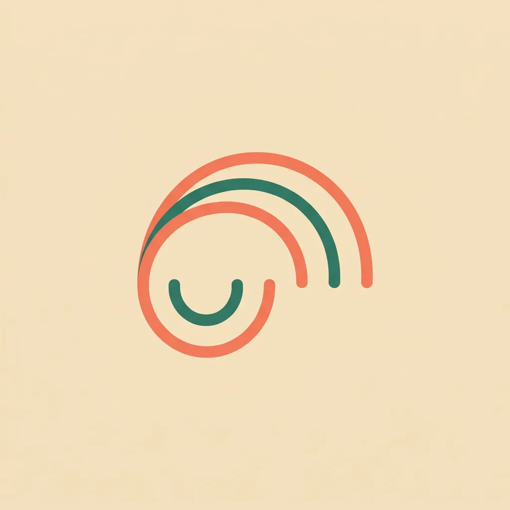
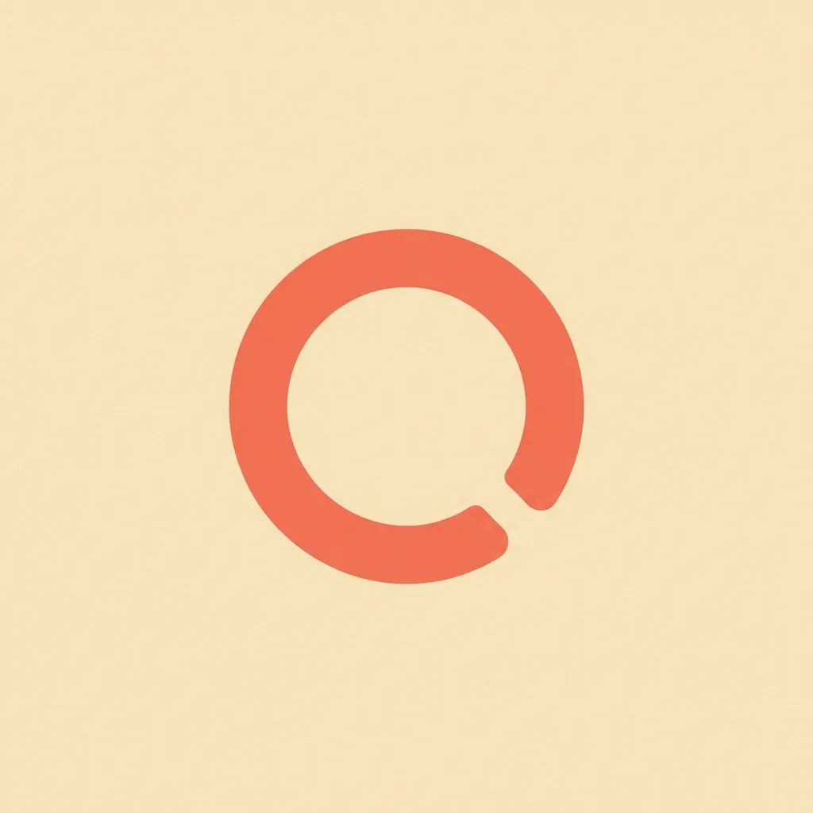
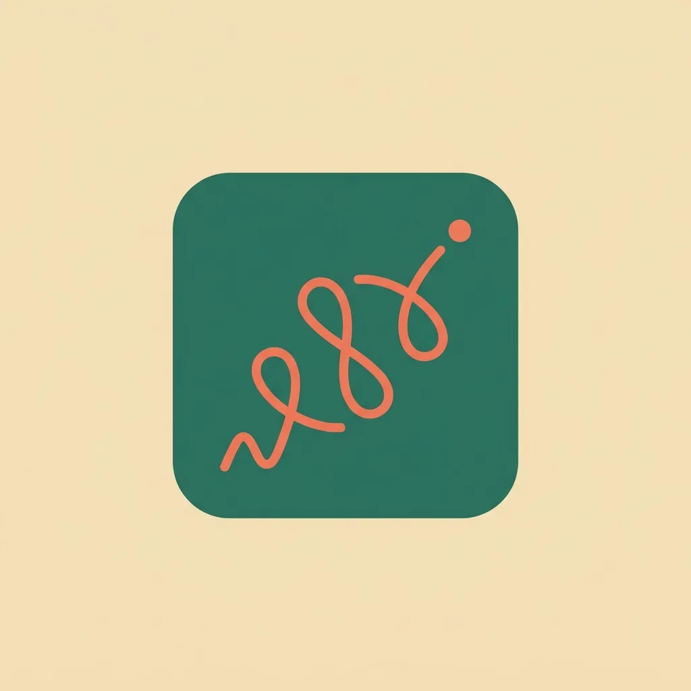
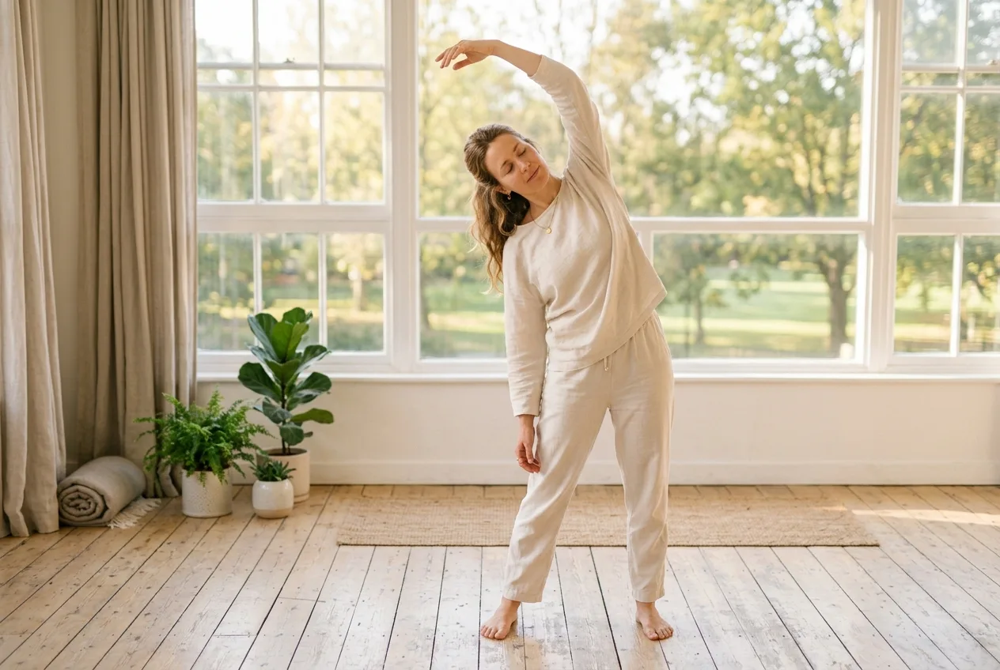
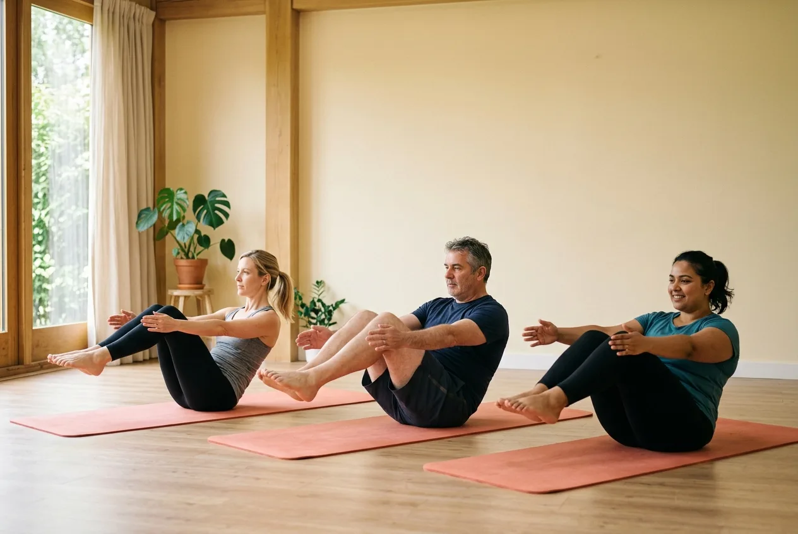
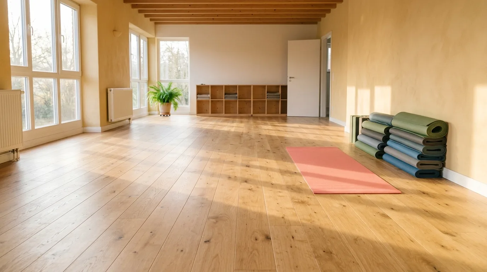
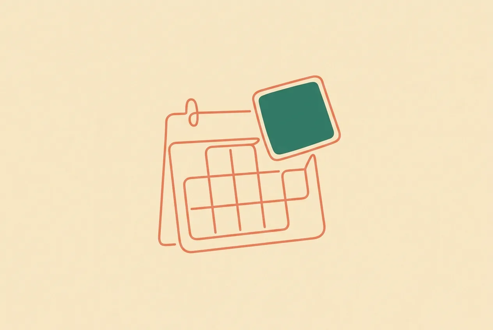

"הבוגר שלנו לא מספר שלמד.
הוא שולח קישור ומראה מה בנה."
מרחב עבודה משותף לפדגוגיה, למרצים ולמכירות. גרסת סילבוס אוגוסט 2026, עודכנה על ידי אייל גרשון, אסף פינקלשטיין ולירון חונן. האתר בנוי כאזור אחד לכל שאלה: מה הקורס ומה קורה בכל מפגש, מה כל תלמיד בונה ומגיש, איפה מוצאים פרומפט או מושג באמצע עבודה, מה מוקרן בכיתה, ואיך מעבירים את המפגש.
כל מודול, כל מפגש,
לפי סדר ההנחיה.
לשונית לכל מודול, ובתוכה סעיף לכל מפגש בסדר הכרונולוגי שבו הוא מועבר: לוח זמנים דקה אחר דקה, פרומפט תרגול, ולסיום לינקים וגוש של מה אפשר להוסיף ומה אפשר להוריד. הזמנים הם למתכונת הבוקר, 09:00 עד 16:30.
מפגש 1: סדר ההנחיה המלא
ארבע מאות וחמישים דקות, כולל שלוש הפסקות. העמודה האחרונה אומרת מה חייב לצאת מכל בלוק, כי זה מה שקובע אם אפשר לקצר אותו כשמתעכבים. שימו לב לבלוק של 15:40: היום נסגר בחלק א של הנדסת פרומפטים, כדי שמפגש 2 יוכל להתחיל מההקשר ולא מאפס.
| שעה | דקות | מה קורה | איך מעבירים | מה חייב לצאת מזה |
|---|---|---|---|---|
| 09:00 | 10 | הקראת שמות ופתיחת רכזת | נוכחות, ערוץ התקשורת של הכיתה, ולוגיסטיקה. לא המרצה. | הכיתה יודעת איפה לשאול שאלות בין המפגשים |
| 09:10 | 15 | ברוכים הבאים: מפת המודולים והתוצרים | שבעת המודולים כסולם, לא כרשימה. כל מודול מוסיף שכבה אחת למערכת. כאן גם נאמר במפורש מה הקורס לא עושה. | ציפיות מכוילות, ומי שטעה בקורס יודע את זה עכשיו |
| 09:25 | 15 | המרצה: מצגת מי אני | שלוש דקות רקע, ואז מסך אחד של דבר אמיתי שבנית בעצמך, מוצג חי. לא רשימת לקוחות. | הכיתה רואה משתמש, לא רק מדריך |
| 09:40 | 30 | סבב היכרות | שש שאלות, כדקה וחצי לאדם. פירוט בסעיף הבא. המרצה רושם את התשובות. | רשימת תחומים ותפקידים, שהיא חומר הגלם לתרגיל הכיתתי בסוף היום |
| 10:10 | 20 | סילבוס: מעבר | דרך האתר, לא דרך קובץ. התלמידים רואים איפה החומר יושב וכיצד לחזור אליו. | כל תלמיד יודע להיכנס לאתר לבד |
| 10:30 | 15 | הפסקה | ||
| 10:45 | 90 | AI Basics, חלק א | המצגת המרכזית של המפגש. מההיסטוריה ועד השאלה היכן אפשר להשתמש. לשבור לפחות פעמיים בהדגמה חיה במסך. | אוצר מילים בסיסי, וכל מונח נכנס לארכיון המושגים באתר |
| 12:15 | 45 | הפסקת צהריים | ||
| 13:00 | 45 | AI Basics, חלק ב | שימושים אישיים ועסקיים, וסוגי הכלים. הבלוק שממנו התלמידים שואבים רעיונות לפרויקט, ולכן שווה לעצור בו לשאלות. | לפחות שני רעיונות שכל תלמיד רשם לעצמו |
| 13:45 | 25 | תרגיל כלים: מ-PDF ל-Markdown | לא מתקינים כלום בכיתה. מחפשים קובץ PDF אמיתי עם filetype, ממירים אותו ב-markitdown.tools, ומשווים בין הדבקה של הטקסט הגולמי לבין העלאת הקובץ המומר. ראו את הכרטיס שאחרי הטבלה. שתי דקות בסוף: מי לא הצליח, מרים יד, ויושב ליד מי שכן. | כל אחד המיר קובץ אחד בעצמו וראה את ההבדל באיכות התשובה |
| 14:10 | 15 | הפסקה | ||
| 14:25 | 30 | הפרויקט המתגלגל ומדריך פרויקט הגמר | פותחים את "החוג המושלם" הגמור מול הכיתה ומפעילים אותו, ואז חוזרים אחורה ומראים איזה מודול הוסיף כל שכבה. משם עוברים למדריך באתר: שני המסלולים, שלוש ההגשות והמשקלים. | הכיתה מבינה מה היא בונה, ושהנושא הוא בחירה חופשית |
| 14:55 | 45 | תרגיל כיתתי: לחשוב על פרויקט | עשר דקות כתיבה אישית לפי שלושת התנאים, עשר דקות שבהן כל אחד מריץ את הפרומפט שבודק רעיון פרויקט מתוך ארגז הפרומפטים, ואז מעבר בין התלמידים שבו כל אחד אומר את הנושא והמרצה מצמצם אותו בקול. התיקון השכיח: נושא רחב מדי. | לכל תלמיד נושא, בעיה במשפט, ומשתמש. זו הגשה 1 |
| 15:40 | 35 | הנדסת פרומפטים, חלק א | המצגת השלישית של היום, ובה בלוק המונחים: מהי הנדסת פרומפטים, הודעה, הודעת מערכת, הודעת משתמש, הודעת עוזר והודעת כלי. עוצרים לפני השקף Context, ראו את הסעיף שאחרי הטבלה. | הכיתה יודעת שהיא לא מדברת ישירות עם המודל, ויש לה אוצר מילים למפגש 2 |
| 16:15 | 15 | מטלת ההכנה וסגירה | פתיחת ג׳ימייל ייעודי לקורס, חובה, ורצוי בכיתה. ואז מקריאים את מטלת ההתקנות למפגש 2 ושולחים אותה בוואטסאפ באותו ערב: תוסף העברית, Grammarly ו-WisprFlow. ההודעה המוכנה נמצאת בלשונית כללי, באזור מטלות ההכנה. | לכל תלמיד ג׳ימייל ייעודי פתוח, ומטלת ההתקנות נשלחה בכתב |
שלוש המצגות של המפגש, בסדר ההצגה
| מתי | המצגת | מה יש בה, ומה חשוב לזכור |
|---|---|---|
| 09:25 | Eyal Gershon Intro פתיחת המצגת | שלוש דקות רקע, ואז מסך אחד של דבר אמיתי שנבנה, מוצג חי. לא רשימת לקוחות. המטרה היא שהכיתה תראה משתמש, לא רק מדריך. |
| 10:45 ו-13:00 | AI Basics פתיחת המצגת | המצגת המרכזית של היום, בשני בלוקים. חלק א בבוקר, מההיסטוריה ועד היכן אפשר להשתמש. חלק ב אחרי הצהריים, שימושים וסוגי כלים. לשבור לפחות פעמיים בהדגמה חיה. |
| 15:40 | הנדסת פרומפטים, חלק א פתיחת המצגת | סוגרת את היום. מציגים את שקפים 1 עד 10, בלוק המונחים, ועוצרים לפני השקף Context. הפירוט בסעיף שאחרי הטבלה. |
סרטון להקרנה בבלוק של 10:45
| הסרטון | למה דווקא הוא | מה עושים מיד אחריו |
|---|---|---|
| Large Language Models explained briefly 3Blue1Brown · כ-8 דקות youtube.com/watch?v=LPZh9BOjkQs | ההסבר החזותי הטוב ביותר לשאלה מה מודל שפה עושה בפועל. הוא אומר בדיוק את מה שאנחנו אומרים בבלוק הזה, רק בתמונות ובקצב אחר, ולכן הוא מחזק ולא מתחרה. | עוצרים ושואלים: מה בסרטון היה שונה ממה שחשבתם לפני. שתי תשובות, וממשיכים לשקף המרחב הסמנטי. |
מפגש 2: הנדסת פרומפטים
המפגש שסוגר את מודול 1. שלושת חלקי הנדסת הפרומפטים ברצף אחד, ובסוף היום מוסבר תרגיל הבית שמתחיל לעבוד על המיזם. ההפסקות מופיעות כאן בטבלה עצמה, כי במפגש הזה הן נופלות באמצע בלוקים. הן זהות לשאר הקורס: 10:30, צהריים ב-13:00, ו-14:45. סך הכל 375 דקות לימוד ו-75 דקות הפסקה.
| שעה | דקות | מה קורה | איך מעבירים |
|---|---|---|---|
| 09:00 | 10 | הקדמה | פתיחה של המרצה, ולא סבב תלמידים. שלושה דברים: איפה עצרנו במפגש 1, מה היום עושה, ואיפה הוא נגמר. אומרים מראש שהיום כולו הנדסת פרומפטים, ושבסופו יוצאים עם מטלת בית שמתחילה לעבוד על המיזם. ובתוך זה, שאלה אחת בהרמת יד: מי לא הצליח להתקין. מי שלא, יושב ליד מי שכן, וממשיכים. לא עוצרים את הכיתה. |
| 09:10 | 80 | הנדסת פרומפטים, חלק א: מונחים וההקשר | המצגת מתחילה מההתחלה, כי היא לא הוצגה במפגש 1. שקפים 1 עד 20: מהי הנדסת פרומפטים, חמשת סוגי ההודעות עם הדוגמה של 17 כפול 43, ומשם ההקשר וחלון ההקשר וארבעת הפתרונות לחריגה. |
| 10:30 | 15 | הפסקה | |
| 10:45 | 55 | חלק א, סיום: כלכלת טוקנים ועברית | שקפים 21 עד 37: כלכלת הטוקנים, Markdown ו-MarkItDown, בחירת המודל הנכון, והחלק על עברית. הדגמה חיה ב-Tokenizer, אותו משפט בעברית ובאנגלית, וסופרים. |
| 11:40 | 80 | חלק ב: הזיות ושמונה טכניקות היסוד | כל חלק ב ברצף אחד, לפני הצהריים. מה זו הזיה ולמה היא קורית, המקרה של עורך הדין, ואז שמונה הטכניקות: דיוק, הגבלת פלט, אימות מקורות, פלט מובנה, עיגון, דוגמאות, שרשרת חשיבה והערכה עצמית. ההדגמה שסוגרת: פרומפט גולמי מול פרומפט בנוי, זה לצד זה. |
| 13:00 | 45 | הפסקת צהריים | |
| 13:45 | 60 | חלק ג: טכניקות מתקדמות ומבנה הפרומפט | מקוצר מ-85 ל-60 דקות, כי שתי הטכניקות המרכזיות שלו מתורגלות מיד אחריו. מדגישים במיוחד שתיים: פרומפט שכותב פרומפט, והנדסה הפוכה. ואז הפרומפט המובנה בתגיות וספריית הפרומפטים. פירוק משימה ושרשור נאמרים בקצרה. |
| 14:45 | 15 | הפסקה | |
| 15:00 | 25 | תרגיל 1: Meta-Level Prompt | כותבים בעברית ל-ChatGPT פרומפט שמייצר פרומפט באנגלית ל-Gemini, ומקבלים ממנו משחק Snake לילדים עם שתי רמות קושי. מגישים צילום מסך של המשחק בצ׳אט של Teams. ראו את הכרטיס. |
| 15:25 | 25 | תרגיל 2: Reverse Prompting | מהכיוון ההפוך: נותנים ל-Gemini תמונה של Card מאמזון ומבקשים ממנו את הפרומפט שייצר אותה, ואז מריצים אותו ב-ChatGPT ומשווים לתמונה המקורית. מגישים צילום מסך ב-Teams. ראו את הכרטיס. |
| 15:50 | 25 | הסבר תרגיל הבית: המיזם המלווה | הבלוק החשוב של סוף היום, ולכן הוא לא נדחס לסגירה. מסבירים את התרגיל שבו התלמידים מגדירים את המוצר שלהם בעשרה היבטים: מה הכלי עושה, המסך העיקרי, שלושת עד חמשת המסכים, ה-Flow המרכזי, Onboarding, סוגי משתמשים והרשאות, התוכן הדינמי ואיפה הוא נשמר, הטכנולוגיה, והאוטומציות. עושים את זה קודם על החוג המושלם מול הכיתה, ורק אז הם עושים על שלהם. |
| 16:15 | 15 | סגירת מודול 1 ומטלות להמשך | עוברים על מה שיש ביד: נושא, בעיה במשפט, ומשתמש. ואז ארבע מטלות לבית: תרגיל המיזם המלווה, השלמת פרומפט הליבה בשישה חלקים, תרגיל ה-PDF ל-Markdown, ופתיחת החשבונות למפגש 3. ההודעה המוכנה בלשונית כללי. |
סרטון להקרנה בבלוק של 10:45
| הסרטון | למה דווקא הוא | מה עושים מיד אחריו |
|---|---|---|
| 4 Methods of Prompt Engineering IBM Technology · כ-9 דקות youtube.com/watch?v=1c9iyoVIwDs | סוקר את אותן טכניקות שאנחנו מלמדים, בסדר אחר ובאנגלית. שימושי בדיוק אחרי הבלוק שלנו, כחזרה בקול אחר, ולא לפניו. | מבקשים מהכיתה לזהות איזו מהטכניקות בסרטון היא זו שהם הכי צריכים בפרויקט שלהם. זו כניסה טובה לתרגיל הבית של המיזם המלווה. |
##Role אתה מהנדס פרומפטים. ##Context הפרומפט שלי: [הדביקו כאן] הפרויקט שלי: [שם הפרויקט, מי המשתמש, והבעיה במשפט אחד] ##Task שפר את הפרומפט שלי לפי מבנה של שישה חלקים: תפקיד, הקשר, משימה, מגבלות, פורמט פלט, ודוגמאות. ##Constraints אל תכתוב לי פרומפט על נושא אחר, ואל תסביר לי מה זה פרומפט. ##Output Format 1. הפרומפט המשופר, מוכן להעתקה. 2. טבלה שמראה מה הוספת בכל אחד מששת החלקים, ולמה. 3. שאלה אחת שחסרה לך ממני כדי לשפר אותו עוד.
ערב 1: יסודות AI
גזור ממפגש 1 של מתכונת הבוקר, מודול 1. התוכן, הזמנים והאופן זהים, החלוקה בין המפגשים שונה. סך הכל 250 דקות לימוד. שעות המפגש נקבעות על ידי המכללה, והלוח כאן בנוי על 17:00 עד 21:25 עם הפסקה של 15 דקות. אם השעות שונות, רק עמודת השעה זזה.
| שעה | דקות | מה קורה | איך מעבירים |
|---|---|---|---|
| 17:00 | 5 | פתיחה | נוכחות, ערוץ התקשורת של הכיתה, ולוגיסטיקה. לא המרצה. |
| 17:05 | 15 | ברוכים הבאים: מפת המודולים והתוצרים | שבעת המודולים כסולם, לא כרשימה. כל מודול מוסיף שכבה אחת למערכת. כאן גם נאמר במפורש מה הקורס לא עושה. מה חייב לצאת מזה: ציפיות מכוילות, ומי שטעה בקורס יודע את זה עכשיו |
| 17:20 | 15 | המרצה: מצגת מי אני | שלוש דקות רקע, ואז מסך אחד של דבר אמיתי שבנית בעצמך, מוצג חי. לא רשימת לקוחות. מה חייב לצאת מזה: הכיתה רואה משתמש, לא רק מדריך |
| 17:35 | 30 | סבב היכרות | שש שאלות, כדקה וחצי לאדם. פירוט בסעיף הבא. המרצה רושם את התשובות. מה חייב לצאת מזה: רשימת תחומים ותפקידים, שהיא חומר הגלם לתרגיל הכיתתי בסוף היום |
| 18:05 | 20 | סילבוס: מעבר | דרך האתר, לא דרך קובץ. התלמידים רואים איפה החומר יושב וכיצד לחזור אליו. מה חייב לצאת מזה: כל תלמיד יודע להיכנס לאתר לבד |
| 18:25 | 90 | AI Basics, חלק א | המצגת המרכזית של המפגש. מההיסטוריה ועד השאלה היכן אפשר להשתמש. לשבור לפחות פעמיים בהדגמה חיה במסך. מה חייב לצאת מזה: אוצר מילים בסיסי, וכל מונח נכנס לארכיון המושגים באתר |
| 19:55 | 15 | הפסקה | הפסקה אחת באמצע הערב. |
| 20:10 | 45 | AI Basics, חלק ב | שימושים אישיים ועסקיים, וסוגי הכלים. הבלוק שממנו התלמידים שואבים רעיונות לפרויקט, ולכן שווה לעצור בו לשאלות. מה חייב לצאת מזה: לפחות שני רעיונות שכל תלמיד רשם לעצמו |
| 20:55 | 25 | תרגיל כלים: מ-PDF ל-Markdown | לא מתקינים כלום בכיתה. מחפשים קובץ PDF אמיתי עם filetype, ממירים אותו ב-markitdown.tools, ומשווים בין הדבקה של הטקסט הגולמי לבין העלאת הקובץ המומר. ראו את הכרטיס שאחרי הטבלה. שתי דקות בסוף: מי לא הצליח, מרים יד, ויושב ליד מי שכן. מה חייב לצאת מזה: כל אחד המיר קובץ אחד בעצמו וראה את ההבדל באיכות התשובה |
| 21:20 | 5 | סגירה | מה בערב הבא. |
שלוש המצגות של המפגש, בסדר ההצגה
| מתי | המצגת | מה יש בה, ומה חשוב לזכור |
|---|---|---|
| 17:20 | Eyal Gershon Intro פתיחת המצגת | שלוש דקות רקע, ואז מסך אחד של דבר אמיתי שנבנה, מוצג חי. לא רשימת לקוחות. המטרה היא שהכיתה תראה משתמש, לא רק מדריך. |
| 18:25 ו-20:10 | AI Basics פתיחת המצגת | המצגת המרכזית של היום, בשני בלוקים. חלק א בבוקר, מההיסטוריה ועד היכן אפשר להשתמש. חלק ב אחרי הצהריים, שימושים וסוגי כלים. לשבור לפחות פעמיים בהדגמה חיה. |
| 18:20 (ערב 2) | הנדסת פרומפטים, חלק א פתיחת המצגת | סוגרת את היום. מציגים את שקפים 1 עד 10, בלוק המונחים, ועוצרים לפני השקף Context. הפירוט בסעיף שאחרי הטבלה. |
סרטון להקרנה בבלוק של 18:25
| הסרטון | למה דווקא הוא | מה עושים מיד אחריו |
|---|---|---|
| Large Language Models explained briefly 3Blue1Brown · כ-8 דקות youtube.com/watch?v=LPZh9BOjkQs | ההסבר החזותי הטוב ביותר לשאלה מה מודל שפה עושה בפועל. הוא אומר בדיוק את מה שאנחנו אומרים בבלוק הזה, רק בתמונות ובקצב אחר, ולכן הוא מחזק ולא מתחרה. | עוצרים ושואלים: מה בסרטון היה שונה ממה שחשבתם לפני. שתי תשובות, וממשיכים לשקף המרחב הסמנטי. |
ערב 2: הפרויקט המתגלגל, והנדסת פרומפטים חלק א
גזור ממפגשים 1-2 של מתכונת הבוקר, מודול 1. התוכן, הזמנים והאופן זהים, החלוקה בין המפגשים שונה. סך הכל 270 דקות לימוד. שעות המפגש נקבעות על ידי המכללה, והלוח כאן בנוי על 17:00 עד 21:45 עם הפסקה של 15 דקות. אם השעות שונות, רק עמודת השעה זזה.
| שעה | דקות | מה קורה | איך מעבירים |
|---|---|---|---|
| 17:00 | 5 | פתיחה | איפה עצרנו בערב הקודם, ומה יוצא מהערב הזה. פתיחה של המרצה, ולא סבב תלמידים. שלושה דברים: איפה עצרנו בערבים 1-2, מה היום עושה, ואיפה הוא נגמר. אומרים מראש שהיום כולו הנדסת פרומפטים, ושבסופו יוצאים עם מטלת בית שמתחילה לעבוד על המיזם. ובתוך זה, שאלה אחת בהרמת יד: מי לא הצליח להתקין. מי שלא, יושב ליד מי שכן, וממשיכים. לא עוצרים את הכיתה. |
| 17:05 | 30 | הפרויקט המתגלגל ומדריך פרויקט הגמר | פותחים את "החוג המושלם" הגמור מול הכיתה ומפעילים אותו, ואז חוזרים אחורה ומראים איזה מודול הוסיף כל שכבה. משם עוברים למדריך באתר: שני המסלולים, שלוש ההגשות והמשקלים. מה חייב לצאת מזה: הכיתה מבינה מה היא בונה, ושהנושא הוא בחירה חופשית |
| 17:35 | 45 | תרגיל כיתתי: לחשוב על פרויקט | עשר דקות כתיבה אישית לפי שלושת התנאים, עשר דקות שבהן כל אחד מריץ את הפרומפט שבודק רעיון פרויקט מתוך ארגז הפרומפטים, ואז מעבר בין התלמידים שבו כל אחד אומר את הנושא והמרצה מצמצם אותו בקול. התיקון השכיח: נושא רחב מדי. מה חייב לצאת מזה: לכל תלמיד נושא, בעיה במשפט, ומשתמש. זו הגשה 1 |
| 18:20 | 35 | הנדסת פרומפטים, חלק א | המצגת השלישית של היום, ובה בלוק המונחים: מהי הנדסת פרומפטים, הודעה, הודעת מערכת, הודעת משתמש, הודעת עוזר והודעת כלי. עוצרים לפני השקף Context, ראו את הסעיף שאחרי הטבלה. מה חייב לצאת מזה: הכיתה יודעת שהיא לא מדברת ישירות עם המודל, ויש לה אוצר מילים למפגש 2 |
| 18:55 | 15 | מטלת ההכנה וסגירה | פתיחת ג׳ימייל ייעודי לקורס, חובה, ורצוי בכיתה. ואז מקריאים את מטלת ההתקנות לערבים 2-3 ושולחים אותה בוואטסאפ באותו ערב: תוסף העברית, Grammarly ו-WisprFlow. ההודעה המוכנה נמצאת בלשונית כללי, באזור מטלות ההכנה. מה חייב לצאת מזה: לכל תלמיד ג׳ימייל ייעודי פתוח, ומטלת ההתקנות נשלחה בכתב |
| 19:10 | 15 | הפסקה | הפסקה אחת באמצע הערב. |
| 19:25 | 80 | הנדסת פרומפטים, חלק א: מונחים וההקשר | המצגת מתחילה מההתחלה, כי היא לא הוצגה בערבים 1-2. שקפים 1 עד 20: מהי הנדסת פרומפטים, חמשת סוגי ההודעות עם הדוגמה של 17 כפול 43, ומשם ההקשר וחלון ההקשר וארבעת הפתרונות לחריגה. |
| 20:45 | 55 | חלק א, סיום: כלכלת טוקנים ועברית | שקפים 21 עד 37: כלכלת הטוקנים, Markdown ו-MarkItDown, בחירת המודל הנכון, והחלק על עברית. הדגמה חיה ב-Tokenizer, אותו משפט בעברית ובאנגלית, וסופרים. |
| 21:40 | 5 | סגירה | מה בערב הבא. |
שלוש המצגות של המפגש, בסדר ההצגה
| מתי | המצגת | מה יש בה, ומה חשוב לזכור |
|---|---|---|
| 17:20 (ערב 1) | Eyal Gershon Intro פתיחת המצגת | שלוש דקות רקע, ואז מסך אחד של דבר אמיתי שנבנה, מוצג חי. לא רשימת לקוחות. המטרה היא שהכיתה תראה משתמש, לא רק מדריך. |
| 18:25 (ערב 1) ו-20:10 (ערב 1) | AI Basics פתיחת המצגת | המצגת המרכזית של היום, בשני בלוקים. חלק א בבוקר, מההיסטוריה ועד היכן אפשר להשתמש. חלק ב אחרי הצהריים, שימושים וסוגי כלים. לשבור לפחות פעמיים בהדגמה חיה. |
| 18:20 | הנדסת פרומפטים, חלק א פתיחת המצגת | סוגרת את היום. מציגים את שקפים 1 עד 10, בלוק המונחים, ועוצרים לפני השקף Context. הפירוט בסעיף שאחרי הטבלה. |
סרטון להקרנה בבלוק של 20:45
| הסרטון | למה דווקא הוא | מה עושים מיד אחריו |
|---|---|---|
| 4 Methods of Prompt Engineering IBM Technology · כ-9 דקות youtube.com/watch?v=1c9iyoVIwDs | סוקר את אותן טכניקות שאנחנו מלמדים, בסדר אחר ובאנגלית. שימושי בדיוק אחרי הבלוק שלנו, כחזרה בקול אחר, ולא לפניו. | מבקשים מהכיתה לזהות איזו מהטכניקות בסרטון היא זו שהם הכי צריכים בפרויקט שלהם. זו כניסה טובה לתרגיל הבית של המיזם המלווה. |
##Role אתה מהנדס פרומפטים. ##Context הפרומפט שלי: [הדביקו כאן] הפרויקט שלי: [שם הפרויקט, מי המשתמש, והבעיה במשפט אחד] ##Task שפר את הפרומפט שלי לפי מבנה של שישה חלקים: תפקיד, הקשר, משימה, מגבלות, פורמט פלט, ודוגמאות. ##Constraints אל תכתוב לי פרומפט על נושא אחר, ואל תסביר לי מה זה פרומפט. ##Output Format 1. הפרומפט המשופר, מוכן להעתקה. 2. טבלה שמראה מה הוספת בכל אחד מששת החלקים, ולמה. 3. שאלה אחת שחסרה לך ממני כדי לשפר אותו עוד.
ערב 3: הנדסת פרומפטים, חלקים ב-ג
גזור ממפגש 2 של מתכונת הבוקר, מודול 1. התוכן, הזמנים והאופן זהים, החלוקה בין המפגשים שונה. סך הכל 240 דקות לימוד. שעות המפגש נקבעות על ידי המכללה, והלוח כאן בנוי על 17:00 עד 21:15 עם הפסקה של 15 דקות. אם השעות שונות, רק עמודת השעה זזה.
| שעה | דקות | מה קורה | איך מעבירים |
|---|---|---|---|
| 17:00 | 5 | פתיחה | איפה עצרנו בערב הקודם, ומה יוצא מהערב הזה. |
| 17:05 | 80 | חלק ב: הזיות ושמונה טכניקות היסוד | כל חלק ב ברצף אחד, לפני הצהריים. מה זו הזיה ולמה היא קורית, המקרה של עורך הדין, ואז שמונה הטכניקות: דיוק, הגבלת פלט, אימות מקורות, פלט מובנה, עיגון, דוגמאות, שרשרת חשיבה והערכה עצמית. ההדגמה שסוגרת: פרומפט גולמי מול פרומפט בנוי, זה לצד זה. |
| 18:25 | 60 | חלק ג: טכניקות מתקדמות ומבנה הפרומפט | מקוצר מ-85 ל-60 דקות, כי שתי הטכניקות המרכזיות שלו מתורגלות מיד אחריו. מדגישים במיוחד שתיים: פרומפט שכותב פרומפט, והנדסה הפוכה. ואז הפרומפט המובנה בתגיות וספריית הפרומפטים. פירוק משימה ושרשור נאמרים בקצרה. |
| 19:25 | 15 | הפסקה | הפסקה אחת באמצע הערב. |
| 19:40 | 25 | תרגיל 1: Meta-Level Prompt | כותבים בעברית ל-ChatGPT פרומפט שמייצר פרומפט באנגלית ל-Gemini, ומקבלים ממנו משחק Snake לילדים עם שתי רמות קושי. מגישים צילום מסך של המשחק בצ׳אט של Teams. ראו את הכרטיס. |
| 20:05 | 25 | תרגיל 2: Reverse Prompting | מהכיוון ההפוך: נותנים ל-Gemini תמונה של Card מאמזון ומבקשים ממנו את הפרומפט שייצר אותה, ואז מריצים אותו ב-ChatGPT ומשווים לתמונה המקורית. מגישים צילום מסך ב-Teams. ראו את הכרטיס. |
| 20:30 | 25 | הסבר תרגיל הבית: המיזם המלווה | הבלוק החשוב של סוף היום, ולכן הוא לא נדחס לסגירה. מסבירים את התרגיל שבו התלמידים מגדירים את המוצר שלהם בעשרה היבטים: מה הכלי עושה, המסך העיקרי, שלושת עד חמשת המסכים, ה-Flow המרכזי, Onboarding, סוגי משתמשים והרשאות, התוכן הדינמי ואיפה הוא נשמר, הטכנולוגיה, והאוטומציות. עושים את זה קודם על החוג המושלם מול הכיתה, ורק אז הם עושים על שלהם. |
| 20:55 | 15 | סגירת מודול 1 ומטלות להמשך | עוברים על מה שיש ביד: נושא, בעיה במשפט, ומשתמש. ואז ארבע מטלות לבית: תרגיל המיזם המלווה, השלמת פרומפט הליבה בשישה חלקים, תרגיל ה-PDF ל-Markdown, ופתיחת החשבונות לערבים 4-5. ההודעה המוכנה בלשונית כללי. |
| 21:10 | 5 | סגירה | מה בערב הבא. |
חלוקת חלק א בין שני בלוקים במפגש 2
בתכנון המקורי חלק א היה נפתח במפגש 1 ונסגר במפגש 2. זה לא קרה, ולכן כל 37 השקפים נמצאים במפגש 2, מחולקים לשני בלוקים סביב ההפסקה של 10:30. החלוקה אינה שרירותית: החצי הראשון הוא בלוק המונחים וההקשר והוא עומד בפני עצמו, והחצי השני הוא כלכלת הטוקנים והעברית. חלק ב לא נכנס לכאן בכלל, הוא מקבל בלוק משלו ב-11:40.
| מתי | אילו שקפים | מה הכיתה לוקחת מזה |
|---|---|---|
| 09:10 80 דקות | שקפים 1 עד 20: פתיחה, מונחים בסיסיים, הנדסת פרומפטים, חמשת סוגי ההודעות עם הדוגמה של 17 כפול 43, ואז ההקשר, חלון ההקשר וארבעת הפתרונות לחריגה | שהם לא מדברים ישירות עם המודל, ושיש שכבה שמרכיבה את מה שנשלח אליו |
| 10:45 55 דקות | שקפים 21 עד 37: כלכלת הטוקנים, Markdown ו-MarkItDown, בחירת המודל הנכון, והחלק על עברית | סגירת חלק א, ובלי להיכנס לחלק ב |
| 11:40 80 דקות | חלק ב במלואו: הזיות, המקרה של עורך הדין, ושמונה טכניקות היסוד עד ההדגמה שסוגרת אותן | בלוק אחד רצוף עד הצהריים ב-13:00, בלי חיתוך באמצע הטכניקות |
| לא מפצלים | את השקף Context מהמשך שלו | ההקשר הוא הלב של חלק א והוא זקוק לרצף. אם צריך לחתוך, חותכים לפניו או אחריו, לא באמצע |
חלוקת הנדסת פרומפטים בין ערב 2 לערב 3
בבוקר כל הנדסת הפרומפטים נמצאת במפגש אחד, ובערב היא נחתכת בין שני ערבים. נקודת החיתוך אינה שרירותית, וזה מה שחשוב לשמור עליו.
- חלק א נגמר בסוף ערב 2, בבלוק של 20:45. זו נקודת עצירה נקייה: החצי הראשון הוא המונחים וההקשר, והחצי השני הוא כלכלת הטוקנים והעברית.
- חלק ב נפתח בתחילת ערב 3, בבלוק של 17:05, ומקבל בלוק רצוף. לא מתחילים אותו בסוף ערב 2 גם אם נשאר זמן.
- את השקף Context לא מפצלים מההמשך שלו. ההקשר הוא הלב של חלק א והוא זקוק לרצף. אם צריך לחתוך, חותכים לפניו או אחריו, לא באמצע.
- שמונה הטכניקות זקוקות לבלוק שלם עם ההדגמה שסוגרת אותן. בערב 3 יש להן בלוק כזה.
תרגיל הבית של מפגש 2: הגדרת המוצר בעשרה היבטים
זה התרגיל שמוסבר ב-15:50 והולך הביתה, והוא הגשה 1. במקום שהתלמיד יגיש שם, בעיה ומשתמש ואז יגדיר את המוצר שוב במודול 3, הוא עושה את זה פעם אחת, כאן. התרגיל רץ פעמיים על אותה תבנית: קודם על המיזם המלווה מול הכיתה, ואז לבד על הפרויקט האישי.
תרגיל הבית של ערבים 2-3: הגדרת המוצר בעשרה היבטים
זה התרגיל שמוסבר ב-20:30 (ערב 3) והולך הביתה, והוא הגשה 1. במקום שהתלמיד יגיש שם, בעיה ומשתמש ואז יגדיר את המוצר שוב במודול 3, הוא עושה את זה פעם אחת, כאן. התרגיל רץ פעמיים על אותה תבנית: קודם על המיזם המלווה מול הכיתה, ואז לבד על הפרויקט האישי.
מודול 1: לינקים
| המקור | מה יש שם | איך משתמשים בו בקורס |
|---|---|---|
| כלי הטוקנים של OpenAI platform.openai.com/tokenizer | מדביקים טקסט ורואים לכמה טוקנים הוא מתפרק, ואיפה עוברים הגבולות. | ההדגמה החזקה של מפגש 1. אותו משפט בעברית ובאנגלית, ורואים שעברית עולה כמעט פי שניים. |
| המאמר שהתחיל הכל arxiv.org/abs/1706.03762 | המאמר מ-2017 שהציג את ארכיטקטורת הטרנספורמר. | מציגים על המסך שלוש שניות, רק כדי שיראו שזה מסמך אמיתי. לא נכנסים לתוכן. |
| הצעת המחקר של דארטמות׳ jmc.stanford.edu/articles/dartmouth/dartmouth.pdf | המסמך מ-1955 שבו נטבע המונח בינה מלאכותית. | משפט אחד ממנו בקול פותח את קטע ההיסטוריה. שווה יותר משלושה שקפים. |
| עקרונות כתיבת פרומפט platform.claude.com/docs/en/build-with-claude/prompt-engineering | התיעוד הרשמי של אנתרופיק על מבנה פרומפט, דוגמאות, ותגיות. | קריאת רקע למרצה לפני מפגש 2. לסטודנטים מפנים לשניים או שלושה עמודים ולא לכולו. |
מודול 1: לינקים
| המקור | מה יש שם | איך משתמשים בו בקורס |
|---|---|---|
| כלי הטוקנים של OpenAI platform.openai.com/tokenizer | מדביקים טקסט ורואים לכמה טוקנים הוא מתפרק, ואיפה עוברים הגבולות. | ההדגמה החזקה של ערבים 1-2. אותו משפט בעברית ובאנגלית, ורואים שעברית עולה כמעט פי שניים. |
| המאמר שהתחיל הכל arxiv.org/abs/1706.03762 | המאמר מ-2017 שהציג את ארכיטקטורת הטרנספורמר. | מציגים על המסך שלוש שניות, רק כדי שיראו שזה מסמך אמיתי. לא נכנסים לתוכן. |
| הצעת המחקר של דארטמות׳ jmc.stanford.edu/articles/dartmouth/dartmouth.pdf | המסמך מ-1955 שבו נטבע המונח בינה מלאכותית. | משפט אחד ממנו בקול פותח את קטע ההיסטוריה. שווה יותר משלושה שקפים. |
| עקרונות כתיבת פרומפט platform.claude.com/docs/en/build-with-claude/prompt-engineering | התיעוד הרשמי של אנתרופיק על מבנה פרומפט, דוגמאות, ותגיות. | קריאת רקע למרצה לפני ערבים 2-3. לסטודנטים מפנים לשניים או שלושה עמודים ולא לכולו. |
כאן התלמיד מקבל לראשונה משהו ביד. שני מפגשים שמייצרים ערכת תוכן שלמה לנושא שנבחר, לפני שנכתבה שורת מפרט אחת. מפגש 3 עמוס: במתכונת הערב הוא שני מפגשים נפרדים. ההפסקות אינן מופיעות בטבלאות שלמטה, והן קבועות בכל מפגש: 15 דקות ב-10:30, 45 דקות צהריים ב-13:00, ו-15 דקות ב-14:45.
כאן התלמיד מקבל לראשונה משהו ביד. שלושה ערבים שמייצרים ערכת תוכן שלמה לנושא שנבחר, לפני שנכתבה שורת מפרט אחת. מה שבבוקר נדחס ליום אחד עמוס מחולק כאן לשניים: תמונות בערב 4, וידאו והנפשה בערב 5. ההפסקה מופיעה בטבלאות שלמטה: הפסקה אחת של 15 דקות בכל ערב, בסביבות 19:15.
מפגש 3: תמונה, וידאו ואודיו
| שעה | דקות | מה קורה | איך מעבירים |
|---|---|---|---|
| 09:00 | 10 | פתיחה | מה יוצא מהיום: ערכת האסטים של הפרויקט, וסרטון ראשון שזז. אומרים מראש שהווידאו מתחיל היום ונגמר מחר. |
| 09:10 | 80 | מצגת: תמונות ובינה מלאכותית | אינטרו, איך מודל תמונה עובד, וסקירת הסגנונות. אותו נושא בכל הסגנונות, כדי שההשוואה תהיה על הסגנון ולא על התוכן. |
| 10:45 | 35 | משחק: מי יצר את זה | שישה מודלים, שתים עשרה תמונות, והכיתה מנחשת. המטרה היא לא לנצח אלא לשמוע נימוקים: מה בתמונה הסגיר את המודל. |
| 11:20 | 100 | סדנה: ערכת האסטים של הפרויקט | מריצים את פרומפטי ה-META שיצאו ממטלת הבית: לוגו בשלוש גרסאות, תמונות המוצר, ובאנר. המרצה עובר ובודק דבר אחד: האם כל התמונות נראות כמשפחה אחת, או כאוסף. |
| 13:45 | 60 | HOW IT WORKS | איך מודל תמונה באמת עובד, מהפרומפט ועד הפיקסל, על התרשים שהוקרן במפגש 1. הפעם לא כהסבר כללי אלא ככלי עבודה: למה תיאור מדויק עוזר, למה אותו פרומפט מחזיר תוצאה אחרת בכל הרצה, ומה באמת בשליטתכם. |
| 15:00 | 25 | תרגיל: יצירת סטוריבורד | מפרקים מול הכיתה את הפרסומת של החוג המושלם לשישה שוטים, ואז כל אחד בונה סטוריבורד משלו לפרויקט שלו. שישה שוטים, שורה אחת לכל שוט, בלי לייצר עדיין ולו תמונה אחת. הטבלה והפרומפטים נמצאים בארגז הכלים. |
| 15:25 | 50 | טעימת וידאו: הנפשת פריים אחד בסטוריבורד | בוחרים שוט אחד מהסטוריבורד שנבנה בבלוק הקודם, מייצרים לו את תמונת הפתיחה, ומניעים אותה. שלוש שניות, תנועה אחת. כאן רק מרגישים את הכלי, והסרטון השלם נבנה מחר. |
| 16:15 | 15 | סבב תוצרים וסגירה | ארבעה תלמידים מראים את הערכה שלהם ואת השוט שזז. מזכירים את מטלת ההכנה: חשבונות בשני כלי וידאו, כי מחר הכיתה מייצרת ולא מתקינה. |
##Role אתה מנהל אמנותי שכותב פרומפטים למודלי תמונה ווידאו. ##Context הפרויקט: [שם, ומה המערכת עושה בשתי שורות] המשתמש: [מי הוא] מה אני צריך: [תמונה או סרטון] איפה זה ישולב: [לוגו / באנר לעמוד הראשי / תמונת המחשה במסך / סרטון פרסומת] ##Task כתוב לי שלושה פרומפטים שונים ליצירה, שנבדלים בסגנון ולא רק בניסוח. ##Constraints אל תיצור את התמונה עצמה, רק את הפרומפטים. כתוב אותם באנגלית, כי מודלי תמונה עובדים טוב יותר באנגלית. ##Output Format לכל פרומפט ציין: את הסגנון, את יחס הממדים המומלץ לשימוש הזה, ומה החוזק שלו מול השניים האחרים.
מפגש 4: וידאו, מסמכים ומצגות
| שעה | דקות | מה קורה | איך מעבירים |
|---|---|---|---|
| 09:00 | 10 | פתיחה | מה יוצא מהיום: סרטון פרסומת ושלד של מצגת הפרויקט. אומרים מראש ששניהם נגמרים בבית, וששני הדברים האלה הם ההגשה של מודול 2. |
| 09:10 | 80 | מצגת: הנפשה, ושש התנועות | שמונים הדקות נחלקות לשניים. ארבעים הראשונות, טכניקות ההנפשה בשני היבטים: חמש המשפחות הקולנועיות עם סרט לכל אחת, שלושת עקרונות ההנפשה שקובעים אם זה נראה חי, ושבע הפעולות שכלי AI יודע לעשות. ארבעים האחרונות, שש תנועות המצלמה. הציר של הבלוק: לכל תנועה יש שם מהקולנוע, והמודל מבין את השם. מי שיודע להגיד dolly zoom מקבל dolly zoom, ומי שכותב שהמצלמה תזוז קצת מקבל בלגן. |
| 10:45 | 45 | סטוריבורד: לפרק סרטון לשוטים | הכלל שמחזיק את כל היום: סרטון AI לא נוצר בהרצה אחת אלא שוט אחר שוט. מפרקים מול הכיתה את הפרסומת של החוג המושלם לשישה שוטים, ואז מראים את שנים עשר הפרומפטים שהפיקו אותה. הטבלה המלאה מתחת לכרטיסים. |
| 11:30 | 90 | סדנה: סרטון הפרסומת | סטוריבורד, שש תמונות פתיחה, ותנועה על כל אחת. הקריינות, המוזיקה וההרכבה ב-CapCut נגמרות בבית. מי שנתקע בכלי אחד עובר לשני, ולכן פתחנו חשבון בשניים. |
| 13:45 | 20 | סבב סרטונים: מה שיש עכשיו | רואים ארבעה או חמישה, גם חצי מוכנים. אחרי הצהריים זו כניסה רכה, וזו גם הפעם הראשונה שהכיתה רואה שכולם באותו מקום בערך. |
| 14:05 | 40 | קול ופנים: דיבוב, ליפסינק ואווטארים | שלוש הדרכים, הכלים, ומה באמת עובד בעברית. בלי סדנה, כי רוב הכיתה לא תצטרך את זה בפרויקט. כולל חמש דקות אתיקה על שכפול קול של אדם אמיתי. |
| 15:00 | 20 | מסמכים וגיליונות | עבודה עם מסמכים וגיליונות, ותוסף GPT לגיליון. ההדגמה השימושית והיחידה שיש לה זמן: לקחת רשימה גולמית ולהפוך אותה לטבלה מסודרת בפקודה אחת, ואז פונקציה אחת שרצה על כל שורה. |
| 15:20 | 20 | מחברת מבוססת מקורות | ההבדל בין צ׳אט למחברת שמעוגנת במקורות שהעליתם, ולמה זה מקטין הזיות. הדגמה בלבד, בלי סדנה. הכלי חוזר במפגש 19 כשלומדים RAG, ואז גם מבינים למה הוא עובד. |
| 15:40 | 35 | מצגות גנרטיביות, וסדנת המצגת | עשר דקות הדגמה של מצגת מתוך טקסט, ואז סדנה: כל אחד בונה שלד למצגת הפרויקט מתוך מסמך ההגדרה שכבר יש לו, ומשבץ בו את התמונות והסרטון. השלד נבנה בכיתה, העיצוב נגמר בבית. |
| 16:15 | 15 | סגירת מודול 2 | מה יש ביד בסוף המודול, ומה נשלח לכיתה עכשיו: שני מסמכי ההעשרה, חשיבה מוצרית ו-MVP. ומה נשאר בבית: הרכבת הסרטון. |
##Role אתה בונה מצגות מוצר. ##Context הפרויקט: [שם] המשתמש: [מי הוא] הבעיה: [במשפט אחד] מה המערכת עושה: [שלוש שורות] ##Task בנה לי שלד למצגת בת שמונה שקפים שמתארת את הפרויקט שלי. ##Constraints השקף הראשון הוא הבעיה ולא שם המוצר. השקף האחרון הוא מה המערכת לא עושה. בעברית, בלי מילות שיווק ובלי סופרלטיבים. ##Output Format לכל שקף: כותרת, עד שלוש שורות תוכן, ומה התמונה שצריכה להיות בו.
ערב 4: יצירת תמונות
גזור ממפגש 3 של מתכונת הבוקר, מודול 2. התוכן, הזמנים והאופן זהים, החלוקה בין המפגשים שונה. סך הכל 255 דקות לימוד. שעות המפגש נקבעות על ידי המכללה, והלוח כאן בנוי על 17:00 עד 21:30 עם הפסקה של 15 דקות. אם השעות שונות, רק עמודת השעה זזה.
| שעה | דקות | מה קורה | איך מעבירים |
|---|---|---|---|
| 17:00 | 5 | פתיחה | איפה עצרנו בערב הקודם, ומה יוצא מהערב הזה. מה יוצא מהיום: ערכת האסטים של הפרויקט, וסרטון ראשון שזז. אומרים מראש שהווידאו מתחיל היום ונגמר מחר. |
| 17:05 | 80 | מצגת: תמונות ובינה מלאכותית | אינטרו, איך מודל תמונה עובד, וסקירת הסגנונות. אותו נושא בכל הסגנונות, כדי שההשוואה תהיה על הסגנון ולא על התוכן. |
| 18:25 | 35 | משחק: מי יצר את זה | שישה מודלים, שתים עשרה תמונות, והכיתה מנחשת. המטרה היא לא לנצח אלא לשמוע נימוקים: מה בתמונה הסגיר את המודל. |
| 19:00 | 100 | סדנה: ערכת האסטים של הפרויקט | מריצים את פרומפטי ה-META שיצאו ממטלת הבית: לוגו בשלוש גרסאות, תמונות המוצר, ובאנר. המרצה עובר ובודק דבר אחד: האם כל התמונות נראות כמשפחה אחת, או כאוסף. |
| 20:40 | 15 | הפסקה | הפסקה אחת באמצע הערב. |
| 20:55 | 30 | HOW IT WORKS חלק ראשון מתוך שניים, ממשיך בערב 5 | איך מודל תמונה באמת עובד, מהפרומפט ועד הפיקסל, על התרשים שהוקרן במפגש 1. הפעם לא כהסבר כללי אלא ככלי עבודה: למה תיאור מדויק עוזר, למה אותו פרומפט מחזיר תוצאה אחרת בכל הרצה, ומה באמת בשליטתכם. |
| 21:25 | 5 | סגירה | מה בערב הבא. |
##Role אתה מנהל אמנותי שכותב פרומפטים למודלי תמונה ווידאו. ##Context הפרויקט: [שם, ומה המערכת עושה בשתי שורות] המשתמש: [מי הוא] מה אני צריך: [תמונה או סרטון] איפה זה ישולב: [לוגו / באנר לעמוד הראשי / תמונת המחשה במסך / סרטון פרסומת] ##Task כתוב לי שלושה פרומפטים שונים ליצירה, שנבדלים בסגנון ולא רק בניסוח. ##Constraints אל תיצור את התמונה עצמה, רק את הפרומפטים. כתוב אותם באנגלית, כי מודלי תמונה עובדים טוב יותר באנגלית. ##Output Format לכל פרומפט ציין: את הסגנון, את יחס הממדים המומלץ לשימוש הזה, ומה החוזק שלו מול השניים האחרים.
ערב 5: מאגרי פרומפטים, וידאו והנפשה
גזור ממפגשים 3-4 של מתכונת הבוקר, מודול 2. התוכן, הזמנים והאופן זהים, החלוקה בין המפגשים שונה. סך הכל 255 דקות לימוד. שעות המפגש נקבעות על ידי המכללה, והלוח כאן בנוי על 17:00 עד 21:30 עם הפסקה של 15 דקות. אם השעות שונות, רק עמודת השעה זזה.
| שעה | דקות | מה קורה | איך מעבירים |
|---|---|---|---|
| 17:00 | 5 | פתיחה | איפה עצרנו בערב הקודם, ומה יוצא מהערב הזה. מה יוצא מהיום: סרטון פרסומת ושלד של מצגת הפרויקט. אומרים מראש ששניהם נגמרים בבית, וששני הדברים האלה הם ההגשה של מודול 2. |
| 17:05 | 30 | HOW IT WORKS המשך הבלוק מערב 4 | איך מודל תמונה באמת עובד, מהפרומפט ועד הפיקסל, על התרשים שהוקרן במפגש 1. הפעם לא כהסבר כללי אלא ככלי עבודה: למה תיאור מדויק עוזר, למה אותו פרומפט מחזיר תוצאה אחרת בכל הרצה, ומה באמת בשליטתכם. |
| 17:35 | 25 | תרגיל: יצירת סטוריבורד | מפרקים מול הכיתה את הפרסומת של החוג המושלם לשישה שוטים, ואז כל אחד בונה סטוריבורד משלו לפרויקט שלו. שישה שוטים, שורה אחת לכל שוט, בלי לייצר עדיין ולו תמונה אחת. הטבלה והפרומפטים נמצאים בארגז הכלים. |
| 18:00 | 50 | טעימת וידאו: הנפשת פריים אחד בסטוריבורד | בוחרים שוט אחד מהסטוריבורד שנבנה בבלוק הקודם, מייצרים לו את תמונת הפתיחה, ומניעים אותה. שלוש שניות, תנועה אחת. כאן רק מרגישים את הכלי, והסרטון השלם נבנה מחר. |
| 18:50 | 15 | סבב תוצרים וסגירה | ארבעה תלמידים מראים את הערכה שלהם ואת השוט שזז. מזכירים את מטלת ההכנה: חשבונות בשני כלי וידאו, כי מחר הכיתה מייצרת ולא מתקינה. |
| 19:05 | 80 | מצגת: הנפשה, ושש התנועות | שמונים הדקות נחלקות לשניים. ארבעים הראשונות, טכניקות ההנפשה בשני היבטים: חמש המשפחות הקולנועיות עם סרט לכל אחת, שלושת עקרונות ההנפשה שקובעים אם זה נראה חי, ושבע הפעולות שכלי AI יודע לעשות. ארבעים האחרונות, שש תנועות המצלמה. הציר של הבלוק: לכל תנועה יש שם מהקולנוע, והמודל מבין את השם. מי שיודע להגיד dolly zoom מקבל dolly zoom, ומי שכותב שהמצלמה תזוז קצת מקבל בלגן. |
| 20:25 | 15 | הפסקה | הפסקה אחת באמצע הערב. |
| 20:40 | 45 | סטוריבורד: לפרק סרטון לשוטים | הכלל שמחזיק את כל היום: סרטון AI לא נוצר בהרצה אחת אלא שוט אחר שוט. מפרקים מול הכיתה את הפרסומת של החוג המושלם לשישה שוטים, ואז מראים את שנים עשר הפרומפטים שהפיקו אותה. הטבלה המלאה מתחת לכרטיסים. |
| 21:25 | 5 | סגירה | מה בערב הבא. |
##Role אתה בונה מצגות מוצר. ##Context הפרויקט: [שם] המשתמש: [מי הוא] הבעיה: [במשפט אחד] מה המערכת עושה: [שלוש שורות] ##Task בנה לי שלד למצגת בת שמונה שקפים שמתארת את הפרויקט שלי. ##Constraints השקף הראשון הוא הבעיה ולא שם המוצר. השקף האחרון הוא מה המערכת לא עושה. בעברית, בלי מילות שיווק ובלי סופרלטיבים. ##Output Format לכל שקף: כותרת, עד שלוש שורות תוכן, ומה התמונה שצריכה להיות בו.
ערב 6: סרטון הפרסומת, אודיו ומסמכים
גזור ממפגש 4 של מתכונת הבוקר, מודול 2. התוכן, הזמנים והאופן זהים, החלוקה בין המפגשים שונה. סך הכל 250 דקות לימוד. שעות המפגש נקבעות על ידי המכללה, והלוח כאן בנוי על 17:00 עד 21:25 עם הפסקה של 15 דקות. אם השעות שונות, רק עמודת השעה זזה.
| שעה | דקות | מה קורה | איך מעבירים |
|---|---|---|---|
| 17:00 | 5 | פתיחה | איפה עצרנו בערב הקודם, ומה יוצא מהערב הזה. |
| 17:05 | 90 | סדנה: סרטון הפרסומת | סטוריבורד, שש תמונות פתיחה, ותנועה על כל אחת. הקריינות, המוזיקה וההרכבה ב-CapCut נגמרות בבית. מי שנתקע בכלי אחד עובר לשני, ולכן פתחנו חשבון בשניים. |
| 18:35 | 20 | סבב סרטונים: מה שיש עכשיו | רואים ארבעה או חמישה, גם חצי מוכנים. אחרי הצהריים זו כניסה רכה, וזו גם הפעם הראשונה שהכיתה רואה שכולם באותו מקום בערך. |
| 18:55 | 40 | קול ופנים: דיבוב, ליפסינק ואווטארים | שלוש הדרכים, הכלים, ומה באמת עובד בעברית. בלי סדנה, כי רוב הכיתה לא תצטרך את זה בפרויקט. כולל חמש דקות אתיקה על שכפול קול של אדם אמיתי. |
| 19:35 | 15 | הפסקה | הפסקה אחת באמצע הערב. |
| 19:50 | 20 | מסמכים וגיליונות | עבודה עם מסמכים וגיליונות, ותוסף GPT לגיליון. ההדגמה השימושית והיחידה שיש לה זמן: לקחת רשימה גולמית ולהפוך אותה לטבלה מסודרת בפקודה אחת, ואז פונקציה אחת שרצה על כל שורה. |
| 20:10 | 20 | מחברת מבוססת מקורות | ההבדל בין צ׳אט למחברת שמעוגנת במקורות שהעליתם, ולמה זה מקטין הזיות. הדגמה בלבד, בלי סדנה. הכלי חוזר בערבים 27-28 כשלומדים RAG, ואז גם מבינים למה הוא עובד. |
| 20:30 | 35 | מצגות גנרטיביות, וסדנת המצגת | עשר דקות הדגמה של מצגת מתוך טקסט, ואז סדנה: כל אחד בונה שלד למצגת הפרויקט מתוך מסמך ההגדרה שכבר יש לו, ומשבץ בו את התמונות והסרטון. השלד נבנה בכיתה, העיצוב נגמר בבית. |
| 21:05 | 15 | סגירת מודול 2 | מה יש ביד בסוף המודול, ומה נשלח לכיתה עכשיו: שני מסמכי ההעשרה, חשיבה מוצרית ו-MVP. ומה נשאר בבית: הרכבת הסרטון. |
| 21:20 | 5 | סגירה | מה בערב הבא. |
ארבעת הפרומפטים של מודול 2
מוכנים להעתקה, ומסודרים לפי סדר השימוש ביום. הראשון נכנס בתחילת סדנת הפרסומת, השני אחרי שרואים את השוטים, השלישי בבלוק המאגרים במפגש 3, והרביעי הוא מטלת בית.
##Role אתה במאי פרסומות. ##Context הגדרת המוצר שלי: [הדביקו כאן את המסמך שיצא מפרומפט הראיון של מפגש 2] ##Task בנה לי סטוריבורד לסרטון פרסומת של 18 עד 24 שניות. לפני שאתה כותב שוט אחד, כתוב לי שתי שורות: 1. הסיפור במשפט אחד. מי, מה מפריע לו, ומה קורה בסוף. 2. הרגע שאחרי. מה הצופה מרגיש בשנייה האחרונה. ואז בנה שישה שוטים. ##Constraints - כל שוט הוא שתיים עד ארבע שניות. הסכום בין 18 ל-24. - תנועה אחת בכל שוט. או המצלמה זזה, או הנושא זז, לא שניהם. - השוט הראשון הוא הבעיה. המוצר לא מופיע בו. - המוצר נכנס בשוט שלישי או רביעי, ולא יותר משוט וחצי בסך הכל. - השוט האחרון חוזר לקומפוזיציה של השוט הראשון, אחרי שהבעיה נפתרה. - אין טקסט, מילים, לוגו או מספרים באף פרומפט תמונה. הטקסט נכנס בעריכה. - פרומפטי התמונה באנגלית, ולכולם אותו משפט סגנון בסוף, שאתה קובע פעם אחת בראש התשובה. ##Output Format טבלה אחת, עם העמודות האלה בדיוק: מספר / מה רואים / סוג הצילום / אורך בשניות / פרומפט התמונה באנגלית / פרומפט התנועה באנגלית / אודיו. בסוף הטבלה שורה אחת: איזה שוט הכי סביר שייצא רע, ולמה.
##Role אתה כותב קופי לפרסומות. ##Context הסרטון: [הדביקו את שורת הסיפור מהסטוריבורד] השוטים: [הדביקו את עמודת "מה רואים" בלבד] המשתמש: [מי הוא, במשפט] אורך הסרטון: [מספר] שניות. ##Task כתוב לי קריינות לסרטון, בשלוש גרסאות שנבדלות בטון: אחת יבשה, אחת חמה, ואחת עם הומור. ##Constraints - הקריינות מלווה את התמונה ולא מתארת אותה. אם השוט מראה מקרר ריק, אל תגיד "המקרר ריק". - שתיים עד שלוש שניות לכל משפט. סך הכל לא יותר מ-45 מילים לגרסה. - המשפט האחרון הוא הפעולה, והוא הכי קצר. - עברית מדוברת. בלי "פתרון חדשני", בלי "מהפכה", בלי סופרלטיבים. ##Output Format שלוש גרסאות, כל אחת עם כותרת הטון שלה. מתחת לכל גרסה שורה אחת: כמה שניות היא לוקחת בקריאה רגילה.
##Role אתה מנהל אמנותי שמסביר איך פרומפט עובד. ##Context הפרומפט שמצאתי במאגר: [הדביקו] הפרויקט שלי: [שם, ומה הוא עושה בשורה] המשתמש שלי: [מי הוא] משפט הסגנון שלי: [הדביקו מהערכה שלכם] ##Task עשה שלושה דברים, בסדר הזה: 1. פרק לי את הפרומפט המקורי לחלקים, ואמור על כל חלק מה הוא תורם לתמונה. 2. סמן אילו חלקים הם סגנון, ואילו הם נושא. את הסגנון אני אולי אשמור, את הנושא אני חייב להחליף. 3. החזר לי גרסה מותאמת לפרויקט שלי. ##Constraints - הגרסה המותאמת נגמרת במשפט הסגנון שלי, ולא בשלהם. - אל תחזיר לי את הפרומפט המקורי עם שם המוצר שלי מודבק בפנים. זה לא התאמה. - אל תוסיף חלקים שלא היו במקור ושאין להם סיבה. פרומפט ארוך יותר הוא לא פרומפט טוב יותר. ##Output Format שלושה חלקים ממוספרים לפי המשימה. החלק השלישי הוא בלוק אחד באנגלית, מוכן להעתקה.
##Role אתה מתכנן תוכן לרשתות חברתיות. ##Context הפרויקט: [שם, ומה הוא עושה] המשתמש: [מי הוא] האסטים שיש לי: [רשימה: לוגו, כמה תמונות מוצר, דוגמן בית, באנר, סרטון] ##Task בנה לי חמישה פוסטים לחמישה ימים, מהאסטים שכבר קיימים. ##Constraints - אל תמציא אסטים שלא ברשימה. כל פוסט משתמש באסט קיים. - זווית אחת לכל פוסט, וכל יום זווית אחרת: בעיה, טיפ, מאחורי הקלעים, השוואה, או שאלה לקהל. - הכותרת עד שמונה מילים. הטקסט עד ארבעים מילים, בעברית מדוברת. - בלי האשטגים, בלי אימוג׳ים, ובלי קריאה לפעולה בכל פוסט. פעם אחת בשבוע מספיק. ##Output Format חמישה פוסטים, לכל אחד: היום, האסט שבו הוא משתמש, הזווית, הכותרת, והטקסט. בסוף שורה אחת: איזה אסט חסר לי כדי שהשבוע הבא יהיה טוב יותר.
ארבעת הפרומפטים של מודול 2
מוכנים להעתקה, ומסודרים לפי סדר השימוש ביום. הראשון נכנס בתחילת סדנת הפרסומת, השני אחרי שרואים את השוטים, השלישי בבלוק המאגרים בערבים 4-5, והרביעי הוא מטלת בית.
##Role אתה במאי פרסומות. ##Context הגדרת המוצר שלי: [הדביקו כאן את המסמך שיצא מפרומפט הראיון של ערבים 2-3] ##Task בנה לי סטוריבורד לסרטון פרסומת של 18 עד 24 שניות. לפני שאתה כותב שוט אחד, כתוב לי שתי שורות: 1. הסיפור במשפט אחד. מי, מה מפריע לו, ומה קורה בסוף. 2. הרגע שאחרי. מה הצופה מרגיש בשנייה האחרונה. ואז בנה שישה שוטים. ##Constraints - כל שוט הוא שתיים עד ארבע שניות. הסכום בין 18 ל-24. - תנועה אחת בכל שוט. או המצלמה זזה, או הנושא זז, לא שניהם. - השוט הראשון הוא הבעיה. המוצר לא מופיע בו. - המוצר נכנס בשוט שלישי או רביעי, ולא יותר משוט וחצי בסך הכל. - השוט האחרון חוזר לקומפוזיציה של השוט הראשון, אחרי שהבעיה נפתרה. - אין טקסט, מילים, לוגו או מספרים באף פרומפט תמונה. הטקסט נכנס בעריכה. - פרומפטי התמונה באנגלית, ולכולם אותו משפט סגנון בסוף, שאתה קובע פעם אחת בראש התשובה. ##Output Format טבלה אחת, עם העמודות האלה בדיוק: מספר / מה רואים / סוג הצילום / אורך בשניות / פרומפט התמונה באנגלית / פרומפט התנועה באנגלית / אודיו. בסוף הטבלה שורה אחת: איזה שוט הכי סביר שייצא רע, ולמה.
##Role אתה כותב קופי לפרסומות. ##Context הסרטון: [הדביקו את שורת הסיפור מהסטוריבורד] השוטים: [הדביקו את עמודת "מה רואים" בלבד] המשתמש: [מי הוא, במשפט] אורך הסרטון: [מספר] שניות. ##Task כתוב לי קריינות לסרטון, בשלוש גרסאות שנבדלות בטון: אחת יבשה, אחת חמה, ואחת עם הומור. ##Constraints - הקריינות מלווה את התמונה ולא מתארת אותה. אם השוט מראה מקרר ריק, אל תגיד "המקרר ריק". - שתיים עד שלוש שניות לכל משפט. סך הכל לא יותר מ-45 מילים לגרסה. - המשפט האחרון הוא הפעולה, והוא הכי קצר. - עברית מדוברת. בלי "פתרון חדשני", בלי "מהפכה", בלי סופרלטיבים. ##Output Format שלוש גרסאות, כל אחת עם כותרת הטון שלה. מתחת לכל גרסה שורה אחת: כמה שניות היא לוקחת בקריאה רגילה.
##Role אתה מנהל אמנותי שמסביר איך פרומפט עובד. ##Context הפרומפט שמצאתי במאגר: [הדביקו] הפרויקט שלי: [שם, ומה הוא עושה בשורה] המשתמש שלי: [מי הוא] משפט הסגנון שלי: [הדביקו מהערכה שלכם] ##Task עשה שלושה דברים, בסדר הזה: 1. פרק לי את הפרומפט המקורי לחלקים, ואמור על כל חלק מה הוא תורם לתמונה. 2. סמן אילו חלקים הם סגנון, ואילו הם נושא. את הסגנון אני אולי אשמור, את הנושא אני חייב להחליף. 3. החזר לי גרסה מותאמת לפרויקט שלי. ##Constraints - הגרסה המותאמת נגמרת במשפט הסגנון שלי, ולא בשלהם. - אל תחזיר לי את הפרומפט המקורי עם שם המוצר שלי מודבק בפנים. זה לא התאמה. - אל תוסיף חלקים שלא היו במקור ושאין להם סיבה. פרומפט ארוך יותר הוא לא פרומפט טוב יותר. ##Output Format שלושה חלקים ממוספרים לפי המשימה. החלק השלישי הוא בלוק אחד באנגלית, מוכן להעתקה.
##Role אתה מתכנן תוכן לרשתות חברתיות. ##Context הפרויקט: [שם, ומה הוא עושה] המשתמש: [מי הוא] האסטים שיש לי: [רשימה: לוגו, כמה תמונות מוצר, דוגמן בית, באנר, סרטון] ##Task בנה לי חמישה פוסטים לחמישה ימים, מהאסטים שכבר קיימים. ##Constraints - אל תמציא אסטים שלא ברשימה. כל פוסט משתמש באסט קיים. - זווית אחת לכל פוסט, וכל יום זווית אחרת: בעיה, טיפ, מאחורי הקלעים, השוואה, או שאלה לקהל. - הכותרת עד שמונה מילים. הטקסט עד ארבעים מילים, בעברית מדוברת. - בלי האשטגים, בלי אימוג׳ים, ובלי קריאה לפעולה בכל פוסט. פעם אחת בשבוע מספיק. ##Output Format חמישה פוסטים, לכל אחד: היום, האסט שבו הוא משתמש, הזווית, הכותרת, והטקסט. בסוף שורה אחת: איזה אסט חסר לי כדי שהשבוע הבא יהיה טוב יותר.
מסמכים, גיליונות ומצגות: מה נכנס ל-75 הדקות
הבלוק הזה קוצר מיום שלם לשבעים וחמש דקות כשהווידאו נכנס למפגש 4, ולכן הוא מתוכנן לדקה. ארבעה נושאים, שלוש הדגמות וסדנה אחת. כל נושא שהסילבוס דורש נמצא כאן, אבל רק אחד מהם מקבל סדנה.
| שעה | דק׳ | מה | מה בדיוק עושים בו |
|---|---|---|---|
| 15:00 | 10 | מסמכים | שלוש דרכים להכניס מסמך למודל, ואותו תוכן בשלוש עלויות טוקנים. ההדגמה: רשימה גולמית מודבקת, ובפקודה אחת היא טבלה מסודרת. הפרומפט מתחת לטבלה. |
| 15:10 | 10 | גיליונות | פונקציית AI בגיליון: פרומפט אחד שרץ על כל שורה. מדגימים על עשר שורות, ואומרים בקול מה קורה כשמריצים על אלף. |
| 15:20 | 20 | מחברת מבוססת מקורות | אותה שאלה, פעם בצ׳אט רגיל ופעם במחברת עם שלושה מקורות. ואז השאלה שהיא כל הבלוק: שאלה שאין עליה תשובה במקורות. המחברת אומרת שאין, והצ׳אט ממציא. זה ההסבר להזיות, ולא רק ההצהרה. |
| 15:40 | 10 | מצגות גנרטיביות | מצגת מתוך טקסט, שלוש השכבות שקובעות איך היא תצא, ומה מתקנים ביד. ההדגמה על המצגת של המיזם המלווה. |
| 15:50 | 25 | סדנה: שלד מצגת הפרויקט | כל אחד מריץ את פרומפט המצגת על מסמך ההגדרה שכבר יש לו מהראיון של מפגש 2, ומשבץ את התמונות והסרטון. השלד נבנה כאן, העיצוב נגמר בבית. |
שני הפרומפטים של בלוק המסמכים
##Role אתה עורך נתונים. ##Context הרשימה הגולמית: [הדביקו כאן, בלי לסדר כלום] ##Task הפוך את הרשימה לטבלה מסודרת. ##Constraints - העמודות נגזרות מהתוכן עצמו, ולא מעמודות שהמצאתי לך מראש. - מה שלא ברור לך בשורה מסוימת, השאר ריק וסמן אותו. אל תנחש. - אל תאחד שורות ואל תשמיט שורות. מספר השורות בפלט שווה למספר בקלט. ##Output Format שורה אחת לפני הטבלה: אילו עמודות בחרת, ולמה. ואז הטבלה. ואחריה שורה אחת: כמה שורות היו בעייתיות וכמה יצאו נקיות.
##Role אתה מתכנן אוטומציות בגיליונות. ##Context מה יש בגיליון: [תאר את העמודות] מה אני רוצה שיקרה בכל שורה: [במשפט אחד] ##Task תן לי פונקציה אחת שתרוץ על כל שורה בגיליון. ##Constraints - קצר. אני מדביק את זה לגיליון, לא קורא מדריך. - בלי הסבר על איך פונקציות עובדות. ##Output Format 1. הפרומפט המדויק שייכנס לפונקציה, כולל איפה מפנים לתא. 2. שורה אחת: מה יקרה אם תא מסוים ריק. 3. שורה אחת: מה יקרה אם אריץ את זה על אלף שורות.
מסמכים, גיליונות ומצגות: מה נכנס ל-75 הדקות
הבלוק הזה קוצר מיום שלם לשבעים וחמש דקות כשהווידאו נכנס לערבים 5-6, ולכן הוא מתוכנן לדקה. ארבעה נושאים, שלוש הדגמות וסדנה אחת. כל נושא שהסילבוס דורש נמצא כאן, אבל רק אחד מהם מקבל סדנה.
| שעה | דק׳ | מה | מה בדיוק עושים בו |
|---|---|---|---|
| 19:50 (ערב 6) | 10 | מסמכים | שלוש דרכים להכניס מסמך למודל, ואותו תוכן בשלוש עלויות טוקנים. ההדגמה: רשימה גולמית מודבקת, ובפקודה אחת היא טבלה מסודרת. הפרומפט מתחת לטבלה. |
| 20:00 (ערב 6) | 10 | גיליונות | פונקציית AI בגיליון: פרומפט אחד שרץ על כל שורה. מדגימים על עשר שורות, ואומרים בקול מה קורה כשמריצים על אלף. |
| 20:10 (ערב 6) | 20 | מחברת מבוססת מקורות | אותה שאלה, פעם בצ׳אט רגיל ופעם במחברת עם שלושה מקורות. ואז השאלה שהיא כל הבלוק: שאלה שאין עליה תשובה במקורות. המחברת אומרת שאין, והצ׳אט ממציא. זה ההסבר להזיות, ולא רק ההצהרה. |
| 20:30 (ערב 6) | 10 | מצגות גנרטיביות | מצגת מתוך טקסט, שלוש השכבות שקובעות איך היא תצא, ומה מתקנים ביד. ההדגמה על המצגת של המיזם המלווה. |
| 20:40 (ערב 6) | 25 | סדנה: שלד מצגת הפרויקט | כל אחד מריץ את פרומפט המצגת על מסמך ההגדרה שכבר יש לו מהראיון של ערבים 2-3, ומשבץ את התמונות והסרטון. השלד נבנה כאן, העיצוב נגמר בבית. |
שני הפרומפטים של בלוק המסמכים
##Role אתה עורך נתונים. ##Context הרשימה הגולמית: [הדביקו כאן, בלי לסדר כלום] ##Task הפוך את הרשימה לטבלה מסודרת. ##Constraints - העמודות נגזרות מהתוכן עצמו, ולא מעמודות שהמצאתי לך מראש. - מה שלא ברור לך בשורה מסוימת, השאר ריק וסמן אותו. אל תנחש. - אל תאחד שורות ואל תשמיט שורות. מספר השורות בפלט שווה למספר בקלט. ##Output Format שורה אחת לפני הטבלה: אילו עמודות בחרת, ולמה. ואז הטבלה. ואחריה שורה אחת: כמה שורות היו בעייתיות וכמה יצאו נקיות.
##Role אתה מתכנן אוטומציות בגיליונות. ##Context מה יש בגיליון: [תאר את העמודות] מה אני רוצה שיקרה בכל שורה: [במשפט אחד] ##Task תן לי פונקציה אחת שתרוץ על כל שורה בגיליון. ##Constraints - קצר. אני מדביק את זה לגיליון, לא קורא מדריך. - בלי הסבר על איך פונקציות עובדות. ##Output Format 1. הפרומפט המדויק שייכנס לפונקציה, כולל איפה מפנים לתא. 2. שורה אחת: מה יקרה אם תא מסוים ריק. 3. שורה אחת: מה יקרה אם אריץ את זה על אלף שורות.
מודול 2: לינקים
| המקור | מה יש שם | איך משתמשים בו בקורס |
|---|---|---|
| מחברת מבוססת מקורות workspace.google.com/products/notebooklm | הכלי שמייצר תשובות מעוגנות במקורות שהעליתם, במקום מהידע הכללי של המודל. | הדגמת מפגש 4. ההבדל מצ׳אט רגיל הוא מה שמסביר לתלמידים למה הזיות פוחתות כשיש מקור. |
| גאמה gamma.app | בניית מצגות מתוך טקסט, עם תבנית ומיתוג. | הכלי שבו נבנית מצגת הפרויקט בסדנת מפגש 4, וגם המצגות של הקורס עצמו. |
| סונו suno.com | יצירת מוזיקה ושירים מתוך תיאור טקסטואלי. | מוזיקת הרקע לסרטון הפרסומת במפגש 3. חמש דקות הדגמה מספיקות. |
| אלוון לאבס elevenlabs.io | קריינות מסונתזת, כולל עברית. | הקריינות לסרטון. שווה להדגים את אותו משפט בשני קולות שונים. |
מודול 2: לינקים
| המקור | מה יש שם | איך משתמשים בו בקורס |
|---|---|---|
| מחברת מבוססת מקורות workspace.google.com/products/notebooklm | הכלי שמייצר תשובות מעוגנות במקורות שהעליתם, במקום מהידע הכללי של המודל. | הדגמת ערבים 5-6. ההבדל מצ׳אט רגיל הוא מה שמסביר לתלמידים למה הזיות פוחתות כשיש מקור. |
| גאמה gamma.app | בניית מצגות מתוך טקסט, עם תבנית ומיתוג. | הכלי שבו נבנית מצגת הפרויקט בסדנת ערבים 5-6, וגם המצגות של הקורס עצמו. |
| סונו suno.com | יצירת מוזיקה ושירים מתוך תיאור טקסטואלי. | מוזיקת הרקע לסרטון הפרסומת בערבים 4-5. חמש דקות הדגמה מספיקות. |
| אלוון לאבס elevenlabs.io | קריינות מסונתזת, כולל עברית. | הקריינות לסרטון. שווה להדגים את אותו משפט בשני קולות שונים. |
הלב הטכני, וחמישה מפגשים בלבד במתכונת הבוקר. בסופם אפליקציה חיה בכתובת ציבורית, שהיא ההגשה הנבדקת הראשונה במשקל 20%. ההפסקות אינן מופיעות בטבלאות שלמטה, והן קבועות בכל מפגש: 15 דקות ב-10:30, 45 דקות צהריים ב-13:00, ו-15 דקות ב-14:45.
החלטה שצריך לקבל לפני מודול 3
הסילבוס המקורי שיבץ במפגש 5 גם אפיון ו-MVP וגם עיצוב אפליקציות, ובמפגש 6 גם No Code וגם Vibe Coding. בפועל, שלוש המצגות המתוסרטות שיש לנו לאפיון, לתרשים הזרימה ולשלד המסכים, מכסות שלושה מפגשים שלמים. אי אפשר לדחוס אותן למפגש אחד ולהוסיף עיצוב, ולכן מפת המודולים באתר מעודכנת לחלוקה שלמטה.
החלוקה שהרצים למטה בנויים עליה: מפגש 5 הוא MVP ותרשים זרימה, מפגש 6 הוא שלד מסכים, עיצוב ובנייה ראשונה, ו-No Code יורד. הסילבוס ממילא מסמן אותו כ"בכפוף לזמן", וזה הזמן שאין.
הלב הטכני, ושבעה ערבים. בסופם אפליקציה חיה בכתובת ציבורית, שהיא ההגשה הנבדקת הראשונה במשקל 20%. ההפסקה מופיעה בטבלאות שלמטה: הפסקה אחת של 15 דקות בכל ערב, בסביבות 19:15.
החלטה שצריך לקבל לפני מודול 3
הסילבוס המקורי שיבץ לערב 9 את No Code ולערב 10 את Vibe Coding. בפועל, שלוש המצגות המתוסרטות שיש לנו לאפיון, לתרשים הזרימה ולשלד המסכים, ממלאות את ערבים 7 עד 9, ואין מקום להוסיף להן את No Code, ולכן מפת המודולים באתר מעודכנת לחלוקה שלמטה.
החלוקה שהרצים למטה בנויים עליה: ערב 7 הוא MVP ותחילת תרשים הזרימה, ערב 8 הוא תרשים הזרימה ושלד המסכים, ערב 9 הוא עיצוב ובנייה ראשונה, ו-No Code יורד. הסילבוס ממילא מסמן אותו כ"בכפוף לזמן", וזה הזמן שאין.
מפגש 5: מרעיון למפרט
| שעה | דקות | מה קורה | איך מעבירים |
|---|---|---|---|
| 09:00 | 10 | פתיחה | מה יש ביד אחרי מודול 2, ומה עדיין חסר: מערכת. מכאן מפסיקים לייצר תוכן ומתחילים לבנות. |
| 09:10 | 80 | MVP וחשיבה מוצרית | מתחילים מהצורך ולא מהכלי, חמש שאלות המפתח, מהו MVP עם שלושת סיפורי הענק, זחילת תכולה ומודל התעדוף. מסיימים בתרגיל כיתה קבוצתי של מיון פיצ׳רים. |
| 10:45 | 90 | סדנת ה-MVP האישי | רשימה של 12 עד 15 יכולות, תעדוף לארבע רמות, וניסוח חד: שלוש עד חמש יכולות ליבה, ומה במפורש מחוץ לתכולה. המרצה עובר ומאשר. יותר מחמש יכולות ליבה זה לא MVP. |
| 12:15 | 85 | תרשים זרימה | מהו תהליך עסקי, מצב קיים מול מצב רצוי, ארבע הצורות, וארבעת חוקי הברזל. מדגימים על הלוח תהליך שלם עם הכיתה, שלב אחר שלב. מזכירים את נתיב "מערכת", שהוא רשימת האוטומציות של מודול 6. |
| 14:25 | 95 | סדנת תרשים הזרימה | כל תלמיד ממפה את המסע המרכזי של המערכת שלו, עם לפחות שתי נקודות החלטה. אישור אישי מהמרצה לכל תלמיד לפני סוף המפגש, ואז מבחן האצבע בזוגות. |
| 16:15 | 15 | סגירה | מי שלא קיבל אישור משלים בבית ושולח. תרשים שגוי היום מייצר מסכים שגויים מחר. |
##Role אתה מנהל מוצר שמצמצם תכולה. ##Context הפרויקט: [תיאור בשלוש שורות] המשתמש: [מי הוא] הבעיה: [במשפט אחד] ##Task עזור לי לצמצם את הפרויקט למינימום שאפשר לבנות, בשלושה שלבים: שלב א: הצע רשימה של 12 עד 15 יכולות אפשריות למערכת הזו. שלב ב: מיין אותן לארבע רמות, חובה, חשוב מאוד, נחמד שיהיה, ומחוץ לתכולה, והסבר בשורה למה כל יכולת קיבלה את הרמה שלה. שלב ג: נסח את הגרסה המצומצמת. ##Constraints עד חמש יכולות ליבה. אם יצא לך יותר, חתוך. אל תרחיב את הפרויקט ואל תוסיף יכולות שלא הזכרתי. ##Output Format שלוש עד חמש יכולות ליבה, ורשימה מפורשת של מה נשאר בחוץ.
מפגש 6: מסכים, עיצוב ובנייה ראשונה
| שעה | דקות | מה קורה | איך מעבירים |
|---|---|---|---|
| 09:00 | 10 | פתיחה | היום נותנים למערכת פנים. מזכירים שהתרשים מאתמול הוא המקור לכל מסך. |
| 09:10 | 80 | שלד מסכים | למה עובדים בלי צבעים, ארבעת עקרונות חוויית המשתמש, והמעבר מתרשים למסכים: כל מלבן של הזנת נתון הופך לשדה, כל מעוין הופך לניווט. חוק כיתה: מי שמוסיף צבע היום מתבקש למחוק. |
| 10:45 | 90 | סדנת מסכים | שלושה או ארבעה מסכים, עם חצים ביניהם שמתארים את הניווט. מסיימים במבחן שלוש השניות בזוגות: אם השכן לא מבין תוך שלוש שניות מה עושים במסך, המסך נכשל. |
| 12:15 | 85 | זהות ויזואלית ועיצוב | עכשיו מותר צבע. פלטת צבעים, טיפוגרפיה, ועיצוב שטוח בעזרת צ׳אט ובעזרת כלי עיצוב. הדגמה: הזהות הוויזואלית של "החוג המושלם" והמסך הראשי שלו. |
| 14:25 | 95 | בנייה ראשונה | הרגע שהכיתה חיכתה לו. בונים דף נחיתה עם טופס השארת פרטים, בכלי בנייה מבוסס פרומפט. לא האפליקציה המלאה, רק דף אחד שעובד, כדי שכל אחד יראה שזה אפשרי. |
| 16:15 | 15 | סגירה | מתקינים את אפליקציית קלוד לקראת המפגש הבא. בכיתה, לא בבית. |
##Role אתה מאפיין חוויית משתמש. ##Context המסע במערכת, מתחילה עד סוף: [תארו בחמש שורות מה המשתמש עושה, שלב אחר שלב] נקודות ההחלטה בתהליך: [איפה התהליך מתפצל, ולאן] ##Task על בסיס התהליך שתיארתי, הגדר את המסכים של המערכת. ##Constraints אל תמציא מסכים שלא קיימים בתהליך שתיארתי. אם חסר מסך כדי שהתהליך ייסגר, אמור זאת במפורש במקום להשלים לבד. בלי צבעים ובלי המלצות עיצוב בשלב הזה. ##Output Format לכל מסך: שם המסך, מה המשתמש עושה בו, אילו שדות יש בו, מה כפתור הפעולה הראשי, ולאן הוא מוביל.
מפגש 7: בניית האפליקציה, חלק א
| שעה | דקות | מה קורה | איך מעבירים |
|---|---|---|---|
| 09:00 | 10 | פתיחה | שני המפגשים הבאים הם בנייה רצופה. בסופם יש אפליקציה שעובדת. |
| 09:10 | 80 | היכרות עם סביבת הבנייה | צ׳אט, סביבת עבודה וסביבת קוד, ומתי משתמשים בכל אחת. תווים מיוחדים, פרויקטים ותוצרים. הדגש: לעבוד בשיטת תכנון, אישור, ביצוע ולא בבקשה אחת גדולה. |
| 10:45 | 90 | סדנה: הקמת הפרויקט | כל תלמיד מקים פרויקט, מכניס אליו את מסמך האפיון ואת שלד המסכים ממפגש 6, ובונה את המסך הראשון. הכניסה של האפיון כקובץ היא מה שמבדיל תוצאה טובה מגרועה. |
| 12:15 | 85 | מחברים וסקילים | ההבדל בין סקיל, מחבר ותוסף, שמבלבל כמעט כל תלמיד. מה זה סקיל ומתי בונים אחד. וגם: ממה להיזהר, ומה לא לתת למודל גישה אליו. |
| 14:25 | 95 | סדנה: המסכים העיקריים | בנייה של שאר המסכים לפי השלד. המרצה עובר ומוודא שאף אחד לא בונה מסך שלא קיים בתרשים. |
| 16:15 | 15 | סגירה | מתקינים Git לקראת מפגש 9, כדי לא לבזבז זמן התקנות באמצע מפגש. |
##Role אתה מפתח שעובד בשיטת תכנון, אישור, ביצוע. ##Context אני בונה את המערכת שלי ואני בלי רקע בתכנות. מצורפים מסמך האפיון ושלד המסכים שלי. ##Task לפני שאתה כותב שורת קוד אחת, כתוב לי תוכנית בנייה בשלבים: מה ייבנה בכל שלב, ומה אני אמור לראות במסך בסוף כל שלב. ##Constraints אחרי התוכנית, עצור. אל תתחיל לבנות עד שאאשר. כשאאשר, בנה שלב אחד בלבד ועצור שוב. הסבר בעברית פשוטה מה עשית בכל שלב. ##Output Format תוכנית ממוספרת, שלב אחד בכל שורה, ולצידו מה נראה על המסך בסופו.
מפגש 8: בניית האפליקציה, חלק ב
| שעה | דקות | מה קורה | איך מעבירים |
|---|---|---|---|
| 09:00 | 10 | פתיחה וסבב מסכים | שלושה תלמידים מראים איפה הם עומדים. זה גם מאתר את מי שנתקע ולא אמר. |
| 09:10 | 80 | שמירת נתונים | הרגע שבו האפליקציה מפסיקה להיות תמונה. טופס שנשמר, ואיפה המידע יושב. מדגימים הזנה, רענון הדף, והמידע עדיין שם. |
| 10:45 | 90 | סדנה: הפעולה המרכזית | כל תלמיד גורם לפעולה המרכזית של המערכת שלו לעבוד מקצה לקצה, כולל שמירה. זה הרף של ההגשה השנייה, ושווה לומר את זה בקול. |
| 12:15 | 85 | דיבוג חכם | איך מתארים תקלה למודל: מה עשיתי, מה ציפיתי, מה קרה. וחמש הטעויות הנפוצות שגורמות למודל להרוס עבודה קיימת. |
| 14:25 | 95 | סדנה: תיקון והשלמה | עבודה אישית, ובסוף בדיקה בזוגות: כל אחד מנסה להשתמש במערכת של השני בלי הסבר. |
| 16:15 | 15 | סגירה | מי שהמערכת שלו עדיין לא שומרת נתונים, זו המשימה לבית. בלי זה אין מה להעלות לאוויר. |
##Role אתה מפתח שמדבר עם מישהו בלי רקע בתכנות. ##Context מה עשיתי: [הפעולה המדויקת, צעד אחר צעד] מה ציפיתי שיקרה: [___] מה קרה בפועל: [___] הודעת שגיאה, אם יש: [___] ##Task לפני שאתה מתקן, הסבר לי בשתי שורות מה לדעתך הסיבה, והצע את התיקון הקטן ביותר שפותר אותה. ##Constraints אל תשכתב חלקים שעובדים. אל תשנה יותר מקובץ אחד בלי לומר לי מראש. אם אתה לא בטוח מה הסיבה, אמור זאת ובקש ממני מידע נוסף. ##Output Format סיבה משוערת בשתי שורות, ואז התיקון המוצע.
מפגש 9: העלאה לאוויר
| שעה | דקות | מה קורה | איך מעבירים |
|---|---|---|---|
| 09:00 | 10 | פתיחה | היום המערכת יוצאת מהמחשב שלכם לאינטרנט. בסוף היום לכל אחד יש כתובת לשלוח. |
| 09:10 | 80 | ניהול גרסאות ואחסון | מה זה מאגר קוד, ולמה לא שולחים קבצים במייל. המונחים המינימליים בלבד, כי המטרה היא להעלות ולא להיות מפתחים. |
| 10:45 | 90 | סדנה: העלאת הפרויקט | כל תלמיד מעלה את הפרויקט למאגר. זה החלק שהכי נתקעים בו, ולכן הוא מקבל תשעים דקות והמרצה עובר עמדה עמדה. |
| 12:15 | 85 | פרסום לאוויר | פרסום האתר וקבלת כתובת ציבורית. ואז ההדגמה שסוגרת את המודול: משנים משהו קטן בקוד ורואים את השינוי עולה לאתר החי. |
| 14:25 | 95 | סדנת גמר: המבחן האמיתי | כל תלמיד מעלה, ואז פותח את הכתובת בחלון פרטי, ממלא את הטופס, ומוודא שהרשומה נשמרה. מי שהקישור לא נפתח בחלון פרטי, ההגשה שלו לא הוגשה. |
| 16:15 | 15 | סגירת מודול 3 והכנה להגשה 2 | עוברים על מה שמגישים ועל אמות המידה, דרך לוח ההגשות באתר. ההגשה כשבועיים מהיום, במשקל 20%. |
##Role אתה מלווה אותי בהעלאת פרויקט לאינטרנט, ואני בלי רקע טכני. ##Context המצב שלי: [איפה הקוד נמצא / עד איזה שלב הגעתי / מה השגיאה שקיבלתי] מערכת ההפעלה שלי: [ווינדוס או מק] ##Task הסבר לי מה לעשות, בשלבים ממוספרים, פעולה אחת בכל שלב. ##Constraints בעברית פשוטה. אל תניח שאני יודע מה זה טרמינל. אם שלב דורש התקנה, אמור זאת לפני השלב ולא באמצעו. ##Output Format אחרי כל שלב כתוב לי מה אני אמור לראות על המסך, כדי שאדע אם הצלחתי.
ערב 7: אפיון אפליקציות ו-MVP
גזור ממפגש 5 של מתכונת הבוקר, מודול 3. התוכן, הזמנים והאופן זהים, החלוקה בין המפגשים שונה. סך הכל 265 דקות לימוד. שעות המפגש נקבעות על ידי המכללה, והלוח כאן בנוי על 17:00 עד 21:40 עם הפסקה של 15 דקות. אם השעות שונות, רק עמודת השעה זזה.
| שעה | דקות | מה קורה | איך מעבירים |
|---|---|---|---|
| 17:00 | 5 | פתיחה | איפה עצרנו בערב הקודם, ומה יוצא מהערב הזה. מה יש ביד אחרי מודול 2, ומה עדיין חסר: מערכת. מכאן מפסיקים לייצר תוכן ומתחילים לבנות. |
| 17:05 | 80 | MVP וחשיבה מוצרית | מתחילים מהצורך ולא מהכלי, חמש שאלות המפתח, מהו MVP עם שלושת סיפורי הענק, זחילת תכולה ומודל התעדוף. מסיימים בתרגיל כיתה קבוצתי של מיון פיצ׳רים. |
| 18:25 | 90 | סדנת ה-MVP האישי | רשימה של 12 עד 15 יכולות, תעדוף לארבע רמות, וניסוח חד: שלוש עד חמש יכולות ליבה, ומה במפורש מחוץ לתכולה. המרצה עובר ומאשר. יותר מחמש יכולות ליבה זה לא MVP. |
| 19:55 | 15 | הפסקה | הפסקה אחת באמצע הערב. |
| 20:10 | 85 | תרשים זרימה | מהו תהליך עסקי, מצב קיים מול מצב רצוי, ארבע הצורות, וארבעת חוקי הברזל. מדגימים על הלוח תהליך שלם עם הכיתה, שלב אחר שלב. מזכירים את נתיב "מערכת", שהוא רשימת האוטומציות של מודול 6. |
| 21:35 | 5 | סגירה | מה בערב הבא. |
##Role אתה מנהל מוצר שמצמצם תכולה. ##Context הפרויקט: [תיאור בשלוש שורות] המשתמש: [מי הוא] הבעיה: [במשפט אחד] ##Task עזור לי לצמצם את הפרויקט למינימום שאפשר לבנות, בשלושה שלבים: שלב א: הצע רשימה של 12 עד 15 יכולות אפשריות למערכת הזו. שלב ב: מיין אותן לארבע רמות, חובה, חשוב מאוד, נחמד שיהיה, ומחוץ לתכולה, והסבר בשורה למה כל יכולת קיבלה את הרמה שלה. שלב ג: נסח את הגרסה המצומצמת. ##Constraints עד חמש יכולות ליבה. אם יצא לך יותר, חתוך. אל תרחיב את הפרויקט ואל תוסיף יכולות שלא הזכרתי. ##Output Format שלוש עד חמש יכולות ליבה, ורשימה מפורשת של מה נשאר בחוץ.
ערב 8: תרשים זרימה ושלד מסכים
גזור ממפגשים 5-6 של מתכונת הבוקר, מודול 3. התוכן, הזמנים והאופן זהים, החלוקה בין המפגשים שונה. סך הכל 260 דקות לימוד. שעות המפגש נקבעות על ידי המכללה, והלוח כאן בנוי על 17:00 עד 21:35 עם הפסקה של 15 דקות. אם השעות שונות, רק עמודת השעה זזה.
| שעה | דקות | מה קורה | איך מעבירים |
|---|---|---|---|
| 17:00 | 5 | פתיחה | איפה עצרנו בערב הקודם, ומה יוצא מהערב הזה. היום נותנים למערכת פנים. מזכירים שהתרשים מאתמול הוא המקור לכל מסך. |
| 17:05 | 95 | סדנת תרשים הזרימה | כל תלמיד ממפה את המסע המרכזי של המערכת שלו, עם לפחות שתי נקודות החלטה. אישור אישי מהמרצה לכל תלמיד לפני סוף המפגש, ואז מבחן האצבע בזוגות. |
| 18:40 | 80 | שלד מסכים | למה עובדים בלי צבעים, ארבעת עקרונות חוויית המשתמש, והמעבר מתרשים למסכים: כל מלבן של הזנת נתון הופך לשדה, כל מעוין הופך לניווט. חוק כיתה: מי שמוסיף צבע היום מתבקש למחוק. |
| 20:00 | 15 | הפסקה | הפסקה אחת באמצע הערב. |
| 20:15 | 75 | סדנת מסכים חלק ראשון מתוך שניים, ממשיך בערב 9 | שלושה או ארבעה מסכים, עם חצים ביניהם שמתארים את הניווט. מסיימים במבחן שלוש השניות בזוגות: אם השכן לא מבין תוך שלוש שניות מה עושים במסך, המסך נכשל. |
| 21:30 | 5 | סגירה | מי שלא קיבל אישור משלים בבית ושולח. תרשים שגוי היום מייצר מסכים שגויים מחר. מה בערב הבא. |
##Role אתה מאפיין חוויית משתמש. ##Context המסע במערכת, מתחילה עד סוף: [תארו בחמש שורות מה המשתמש עושה, שלב אחר שלב] נקודות ההחלטה בתהליך: [איפה התהליך מתפצל, ולאן] ##Task על בסיס התהליך שתיארתי, הגדר את המסכים של המערכת. ##Constraints אל תמציא מסכים שלא קיימים בתהליך שתיארתי. אם חסר מסך כדי שהתהליך ייסגר, אמור זאת במפורש במקום להשלים לבד. בלי צבעים ובלי המלצות עיצוב בשלב הזה. ##Output Format לכל מסך: שם המסך, מה המשתמש עושה בו, אילו שדות יש בו, מה כפתור הפעולה הראשי, ולאן הוא מוביל.
ערב 9: עיצוב, זהות ויזואלית ובנייה ראשונה
גזור ממפגשים 6-7 של מתכונת הבוקר, מודול 3. התוכן, הזמנים והאופן זהים, החלוקה בין המפגשים שונה. סך הכל 265 דקות לימוד. שעות המפגש נקבעות על ידי המכללה, והלוח כאן בנוי על 17:00 עד 21:40 עם הפסקה של 15 דקות. אם השעות שונות, רק עמודת השעה זזה.
| שעה | דקות | מה קורה | איך מעבירים |
|---|---|---|---|
| 17:00 | 5 | פתיחה | איפה עצרנו בערב הקודם, ומה יוצא מהערב הזה. הערבים הבאים הם בנייה רצופה. בסופם יש אפליקציה שעובדת. |
| 17:05 | 15 | סדנת מסכים המשך הבלוק מערב 8 | שלושה או ארבעה מסכים, עם חצים ביניהם שמתארים את הניווט. מסיימים במבחן שלוש השניות בזוגות: אם השכן לא מבין תוך שלוש שניות מה עושים במסך, המסך נכשל. |
| 17:20 | 85 | זהות ויזואלית ועיצוב | עכשיו מותר צבע. פלטת צבעים, טיפוגרפיה, ועיצוב שטוח בעזרת צ׳אט ובעזרת כלי עיצוב. הדגמה: הזהות הוויזואלית של "החוג המושלם" והמסך הראשי שלו. |
| 18:45 | 95 | בנייה ראשונה | הרגע שהכיתה חיכתה לו. בונים דף נחיתה עם טופס השארת פרטים, בכלי בנייה מבוסס פרומפט. לא האפליקציה המלאה, רק דף אחד שעובד, כדי שכל אחד יראה שזה אפשרי. |
| 20:20 | 15 | הפסקה | הפסקה אחת באמצע הערב. |
| 20:35 | 60 | היכרות עם סביבת הבנייה חלק ראשון מתוך שניים, ממשיך בערב 10 | צ׳אט, סביבת עבודה וסביבת קוד, ומתי משתמשים בכל אחת. תווים מיוחדים, פרויקטים ותוצרים. הדגש: לעבוד בשיטת תכנון, אישור, ביצוע ולא בבקשה אחת גדולה. |
| 21:35 | 5 | סגירה | מתקינים את אפליקציית קלוד לקראת הערב הבא. בכיתה, לא בבית. מה בערב הבא. |
##Role אתה מפתח שעובד בשיטת תכנון, אישור, ביצוע. ##Context אני בונה את המערכת שלי ואני בלי רקע בתכנות. מצורפים מסמך האפיון ושלד המסכים שלי. ##Task לפני שאתה כותב שורת קוד אחת, כתוב לי תוכנית בנייה בשלבים: מה ייבנה בכל שלב, ומה אני אמור לראות במסך בסוף כל שלב. ##Constraints אחרי התוכנית, עצור. אל תתחיל לבנות עד שאאשר. כשאאשר, בנה שלב אחד בלבד ועצור שוב. הסבר בעברית פשוטה מה עשית בכל שלב. ##Output Format תוכנית ממוספרת, שלב אחד בכל שורה, ולצידו מה נראה על המסך בסופו.
ערב 10: סביבת הבנייה והמסכים העיקריים
גזור ממפגש 7 של מתכונת הבוקר, מודול 3. התוכן, הזמנים והאופן זהים, החלוקה בין המפגשים שונה. סך הכל 265 דקות לימוד. שעות המפגש נקבעות על ידי המכללה, והלוח כאן בנוי על 17:00 עד 21:40 עם הפסקה של 15 דקות. אם השעות שונות, רק עמודת השעה זזה.
| שעה | דקות | מה קורה | איך מעבירים |
|---|---|---|---|
| 17:00 | 5 | פתיחה | איפה עצרנו בערב הקודם, ומה יוצא מהערב הזה. |
| 17:05 | 20 | היכרות עם סביבת הבנייה המשך הבלוק מערב 9 | צ׳אט, סביבת עבודה וסביבת קוד, ומתי משתמשים בכל אחת. תווים מיוחדים, פרויקטים ותוצרים. הדגש: לעבוד בשיטת תכנון, אישור, ביצוע ולא בבקשה אחת גדולה. |
| 17:25 | 90 | סדנה: הקמת הפרויקט | כל תלמיד מקים פרויקט, מכניס אליו את מסמך האפיון ואת שלד המסכים מערבים 8-9, ובונה את המסך הראשון. הכניסה של האפיון כקובץ היא מה שמבדיל תוצאה טובה מגרועה. |
| 18:55 | 85 | מחברים וסקילים | ההבדל בין סקיל, מחבר ותוסף, שמבלבל כמעט כל תלמיד. מה זה סקיל ומתי בונים אחד. וגם: ממה להיזהר, ומה לא לתת למודל גישה אליו. |
| 20:20 | 15 | הפסקה | הפסקה אחת באמצע הערב. |
| 20:35 | 60 | סדנה: המסכים העיקריים חלק ראשון מתוך שניים, ממשיך בערב 11 | בנייה של שאר המסכים לפי השלד. המרצה עובר ומוודא שאף אחד לא בונה מסך שלא קיים בתרשים. |
| 21:35 | 5 | סגירה | מתקינים Git לקראת ערבים 12-13, כדי לא לבזבז זמן התקנות באמצע מפגש. מה בערב הבא. |
ערב 11: שמירת נתונים והפעולה המרכזית
גזור ממפגשים 7-8 של מתכונת הבוקר, מודול 3. התוכן, הזמנים והאופן זהים, החלוקה בין המפגשים שונה. סך הכל 265 דקות לימוד. שעות המפגש נקבעות על ידי המכללה, והלוח כאן בנוי על 17:00 עד 21:40 עם הפסקה של 15 דקות. אם השעות שונות, רק עמודת השעה זזה.
| שעה | דקות | מה קורה | איך מעבירים |
|---|---|---|---|
| 17:00 | 5 | פתיחה | איפה עצרנו בערב הקודם, ומה יוצא מהערב הזה. היום המערכת יוצאת מהמחשב שלכם לאינטרנט. בסוף היום לכל אחד יש כתובת לשלוח. |
| 17:05 | 35 | סדנה: המסכים העיקריים המשך הבלוק מערב 10 | בנייה של שאר המסכים לפי השלד. המרצה עובר ומוודא שאף אחד לא בונה מסך שלא קיים בתרשים. |
| 17:40 | 10 | פתיחה וסבב מסכים | שלושה תלמידים מראים איפה הם עומדים. זה גם מאתר את מי שנתקע ולא אמר. |
| 17:50 | 80 | שמירת נתונים | הרגע שבו האפליקציה מפסיקה להיות תמונה. טופס שנשמר, ואיפה המידע יושב. מדגימים הזנה, רענון הדף, והמידע עדיין שם. |
| 19:10 | 15 | הפסקה | הפסקה אחת באמצע הערב. |
| 19:25 | 90 | סדנה: הפעולה המרכזית | כל תלמיד גורם לפעולה המרכזית של המערכת שלו לעבוד מקצה לקצה, כולל שמירה. זה הרף של ההגשה השנייה, ושווה לומר את זה בקול. |
| 20:55 | 40 | דיבוג חכם חלק ראשון מתוך שניים, ממשיך בערב 12 | איך מתארים תקלה למודל: מה עשיתי, מה ציפיתי, מה קרה. וחמש הטעויות הנפוצות שגורמות למודל להרוס עבודה קיימת. |
| 21:35 | 5 | סגירה | מי שהמערכת שלו עדיין לא שומרת נתונים, זו המשימה לבית. בלי זה אין מה להעלות לאוויר. מה בערב הבא. |
##Role אתה מפתח שמדבר עם מישהו בלי רקע בתכנות. ##Context מה עשיתי: [הפעולה המדויקת, צעד אחר צעד] מה ציפיתי שיקרה: [___] מה קרה בפועל: [___] הודעת שגיאה, אם יש: [___] ##Task לפני שאתה מתקן, הסבר לי בשתי שורות מה לדעתך הסיבה, והצע את התיקון הקטן ביותר שפותר אותה. ##Constraints אל תשכתב חלקים שעובדים. אל תשנה יותר מקובץ אחד בלי לומר לי מראש. אם אתה לא בטוח מה הסיבה, אמור זאת ובקש ממני מידע נוסף. ##Output Format סיבה משוערת בשתי שורות, ואז התיקון המוצע.
ערב 12: תיקון, ניהול גרסאות והעלאה
גזור ממפגשים 8-9 של מתכונת הבוקר, מודול 3. התוכן, הזמנים והאופן זהים, החלוקה בין המפגשים שונה. סך הכל 260 דקות לימוד. שעות המפגש נקבעות על ידי המכללה, והלוח כאן בנוי על 17:00 עד 21:35 עם הפסקה של 15 דקות. אם השעות שונות, רק עמודת השעה זזה.
| שעה | דקות | מה קורה | איך מעבירים |
|---|---|---|---|
| 17:00 | 5 | פתיחה | איפה עצרנו בערב הקודם, ומה יוצא מהערב הזה. |
| 17:05 | 45 | דיבוג חכם המשך הבלוק מערב 11 | איך מתארים תקלה למודל: מה עשיתי, מה ציפיתי, מה קרה. וחמש הטעויות הנפוצות שגורמות למודל להרוס עבודה קיימת. |
| 17:50 | 95 | סדנה: תיקון והשלמה | עבודה אישית, ובסוף בדיקה בזוגות: כל אחד מנסה להשתמש במערכת של השני בלי הסבר. |
| 19:25 | 15 | הפסקה | הפסקה אחת באמצע הערב. |
| 19:40 | 80 | ניהול גרסאות ואחסון | מה זה מאגר קוד, ולמה לא שולחים קבצים במייל. המונחים המינימליים בלבד, כי המטרה היא להעלות ולא להיות מפתחים. |
| 21:00 | 30 | סדנה: העלאת הפרויקט חלק ראשון מתוך שניים, ממשיך בערב 13 | כל תלמיד מעלה את הפרויקט למאגר. זה החלק שהכי נתקעים בו, ולכן הוא מקבל תשעים דקות והמרצה עובר עמדה עמדה. |
| 21:30 | 5 | סגירה | מה בערב הבא. |
##Role אתה מלווה אותי בהעלאת פרויקט לאינטרנט, ואני בלי רקע טכני. ##Context המצב שלי: [איפה הקוד נמצא / עד איזה שלב הגעתי / מה השגיאה שקיבלתי] מערכת ההפעלה שלי: [ווינדוס או מק] ##Task הסבר לי מה לעשות, בשלבים ממוספרים, פעולה אחת בכל שלב. ##Constraints בעברית פשוטה. אל תניח שאני יודע מה זה טרמינל. אם שלב דורש התקנה, אמור זאת לפני השלב ולא באמצעו. ##Output Format אחרי כל שלב כתוב לי מה אני אמור לראות על המסך, כדי שאדע אם הצלחתי.
ערב 13: פרסום לאוויר וסגירת המודול
גזור ממפגש 9 של מתכונת הבוקר, מודול 3. התוכן, הזמנים והאופן זהים, החלוקה בין המפגשים שונה. סך הכל 265 דקות לימוד. שעות המפגש נקבעות על ידי המכללה, והלוח כאן בנוי על 17:00 עד 21:40 עם הפסקה של 15 דקות. אם השעות שונות, רק עמודת השעה זזה.
| שעה | דקות | מה קורה | איך מעבירים |
|---|---|---|---|
| 17:00 | 5 | פתיחה | איפה עצרנו בערב הקודם, ומה יוצא מהערב הזה. |
| 17:05 | 60 | סדנה: העלאת הפרויקט המשך הבלוק מערב 12 | כל תלמיד מעלה את הפרויקט למאגר. זה החלק שהכי נתקעים בו, ולכן הוא מקבל תשעים דקות והמרצה עובר עמדה עמדה. |
| 18:05 | 85 | פרסום לאוויר | פרסום האתר וקבלת כתובת ציבורית. ואז ההדגמה שסוגרת את המודול: משנים משהו קטן בקוד ורואים את השינוי עולה לאתר החי. |
| 19:30 | 15 | הפסקה | הפסקה אחת באמצע הערב. |
| 19:45 | 95 | סדנת גמר: המבחן האמיתי | כל תלמיד מעלה, ואז פותח את הכתובת בחלון פרטי, ממלא את הטופס, ומוודא שהרשומה נשמרה. מי שהקישור לא נפתח בחלון פרטי, ההגשה שלו לא הוגשה. |
| 21:20 | 15 | סגירת מודול 3 והכנה להגשה 2 | עוברים על מה שמגישים ועל אמות המידה, דרך לוח ההגשות באתר. ההגשה כשבועיים מהיום, במשקל 20%. |
| 21:35 | 5 | סגירה | מה בערב הבא. |
שרשרת התוצרים של מודול 3
שבעה תוצרים, וכל אחד הוא הקלט של הבא. זו התמונה שכדאי להציג בפתיחת מפגש 5, לפני שנכנסים לתכולה, כי היא מסבירה למה הסדר לא גמיש.
שרשרת התוצרים של מודול 3
שבעה תוצרים, וכל אחד הוא הקלט של הבא. זו התמונה שכדאי להציג בפתיחת ערבים 7-8, לפני שנכנסים לתכולה, כי היא מסבירה למה הסדר לא גמיש.
מודול 3: לינקים
| המקור | מה יש שם | איך משתמשים בו בקורס |
|---|---|---|
| וימזיקל whimsical.com/templates | לוח עבודה אחד עם ארבעה מצבים: דיאגרמות, תרשימי זרימה, מפות חשיבה ושלדי מסכים, וספריית תבניות מסודרת. | הכלי המרכזי של מפגשים 5 ו-6. ההרשמה נעשית בכיתה, ושיתוף הלוח עם המרצה הוא מה שמאפשר אישור בזמן אמת. |
| חוקי חוויית המשתמש lawsofux.com | שלושים חוקים פסיכולוגיים, כל אחד בעמוד אחד עם הגדרה, מקור ודוגמה. | ארבעה חוקים בלבד, לא שלושים: היק, מילר, פיטס ויעקב. הם מסבירים את כל צ׳ק ליסט האיכות של שלד המסכים. |
| ספריית הרכיבים של גוגל m3.material.io/components | התקן הפתוח שמגדיר איך נראה רכיב ממשק תקני, עם אנטומיה, מצבים ווריאציות. | לא לומדים את הספרייה. הערך הוא אוצר המילים: תלמיד שיודע לומר "תפריט נפתח" מקבל תוצאה מדויקת יותר מכלי הבנייה. |
| מובין mobbin.com | צילומי מסך של אפליקציות אמיתיות, מסודרים לפי מסלולים שלמים ולא לפי מסך בודד. | כלי טיעון. כשתלמיד מתעקש על פיצ׳ר מיותר, מראים לו שאפליקציה מוכרת בחרה לא לעשות אותו. דורש חשבון. |
מודול 3: לינקים
| המקור | מה יש שם | איך משתמשים בו בקורס |
|---|---|---|
| וימזיקל whimsical.com/templates | לוח עבודה אחד עם ארבעה מצבים: דיאגרמות, תרשימי זרימה, מפות חשיבה ושלדי מסכים, וספריית תבניות מסודרת. | הכלי המרכזי של ערבים 7-9. ההרשמה נעשית בכיתה, ושיתוף הלוח עם המרצה הוא מה שמאפשר אישור בזמן אמת. |
| חוקי חוויית המשתמש lawsofux.com | שלושים חוקים פסיכולוגיים, כל אחד בעמוד אחד עם הגדרה, מקור ודוגמה. | ארבעה חוקים בלבד, לא שלושים: היק, מילר, פיטס ויעקב. הם מסבירים את כל צ׳ק ליסט האיכות של שלד המסכים. |
| ספריית הרכיבים של גוגל m3.material.io/components | התקן הפתוח שמגדיר איך נראה רכיב ממשק תקני, עם אנטומיה, מצבים ווריאציות. | לא לומדים את הספרייה. הערך הוא אוצר המילים: תלמיד שיודע לומר "תפריט נפתח" מקבל תוצאה מדויקת יותר מכלי הבנייה. |
| מובין mobbin.com | צילומי מסך של אפליקציות אמיתיות, מסודרים לפי מסלולים שלמים ולא לפי מסך בודד. | כלי טיעון. כשתלמיד מתעקש על פיצ׳ר מיותר, מראים לו שאפליקציה מוכרת בחרה לא לעשות אותו. דורש חשבון. |
מפגש 10: אתיקה והנגשה
המפגש שבו מפסיקים להוסיף ומתחילים לבדוק. עד כאן המערכת נמדדה בשאלה "האם היא עובדת", ומכאן גם בשאלה "האם היא ראויה". ההפסקות אינן מופיעות בטבלה, והן קבועות בכל מפגש בוקר: 15 דקות ב-10:30, 45 דקות צהריים ב-13:00, ו-15 דקות ב-14:45.
| שעה | דקות | מה קורה | איך מעבירים |
|---|---|---|---|
| 09:00 | 10 | פתיחה: מצב האתרים | סבב מהיר. מי באוויר, מי נתקע, ומה נשבר מאז מפגש 9. שתי דקות של עזרה הדדית חוסכות שעה בסדנה. |
| 09:10 | 80 | אתיקה של מערכת שמפעילה AI | לא פילוסופיה. חמש שאלות שכל מערכת בכיתה צריכה לענות עליהן: מה קורה למידע שהמשתמש מכניס, מתי חייבים לומר לו שזו מכונה, מה קורה כשהמודל טועה, על מי האחריות, ולמי המערכת עלולה לא לעבוד. מדגימים הטיה חיה: מבקשים מהמודל לתאר "מנהל" ו"מזכירה" ומסתכלים על התוצאה. |
| 10:45 | 90 | נגישות דיגיטלית | ארבעת העקרונות של WCAG בשפה של בונים, לא של תקן: אפשר לתפוס, אפשר להפעיל, אפשר להבין, ואפשר להריץ בטכנולוגיות מסייעות. משם לרשימה הפרקטית: ניגודיות, טקסט חלופי לתמונות, סדר כותרות, תוויות לשדות טופס, וניווט מלא במקלדת. מדגימים ניווט Tab על אתר של מתנדב מהכיתה. |
| 12:15 | 85 | הדגמה: הרצת הבדיקות | מריצים Lighthouse ו-Wave על "החוג המושלם" מול הכיתה. קוראים את הדוח ביחד, מסמנים איזה ממצא אמיתי ואיזה רעש, מתקנים אחד בשידור חי ומריצים שוב כדי לראות את הציון זז. |
| 14:25 | 95 | סדנה: בדיקה ותיקון | כל תלמיד מריץ את שני הכלים על האתר שלו, בוחר שלושה ממצאים ומתקן אותם. שומרים צילום מסך של הציון לפני ואחרי. המרצה עובר ועוזר לזהות מה שווה לתקן ומה לא. |
| 16:15 | 15 | סגירה | מה לא ניתן לתקן ולמה, וזו תשובה לגיטימית אם יודעים לנמק אותה. מה במפגש הבא. |
##Role אתה בודק אתיקה ונגישות. ##Context אני בונה מערכת בקורס, בלי רקע בתכנות. המערכת: [מה היא עושה, בשלוש שורות] המשתמשים: [מי הם] המידע שנשמר: [אילו שדות] איפה יש AI במערכת: [___] ##Task בדוק שני דברים בנפרד. אתיקה: מה קורה למידע של המשתמש, האם ברור לו שהוא מדבר עם מכונה, מה קורה כשהמודל טועה, ולמי המערכת הזו עלולה לא לעבוד. נגישות: מה בממשק שתיארתי עלול להיכשל מול ניגודיות, ניווט מקלדת, קורא מסך, ותוויות טפסים. ##Constraints עד שישה ממצאים. אל תכתוב לי הצהרת פרטיות ואל תצטט תקנים. אני צריך רשימת תיקונים. ##Output Format לכל ממצא: מה הבעיה, כמה היא חמורה, ומה התיקון הקטן ביותר. מסודר מהחמור לקל.
מפגש 11: אבטחת קוד ו-AI
המפגש שסוגר את מודול 4. אבטחת AI היא החלק שאין לו מקבילה בקורסים ותיקים, והיא גם החלק שהכיתה הכי תזכור, אם עושים בו הדגמה חיה. ההפסקות אינן מופיעות בטבלה, והן קבועות בכל מפגש בוקר: 15 דקות ב-10:30, 45 דקות צהריים ב-13:00, ו-15 דקות ב-14:45.
| שעה | דקות | מה קורה | איך מעבירים |
|---|---|---|---|
| 09:00 | 10 | פתיחה: שלושת התיקונים | כל תלמיד אומר ממצא אחד שתיקן ואחד שוויתר עליו. הוויתורים מעניינים יותר. |
| 09:10 | 80 | אבטחת קוד למי שבונה בלי רקע | מה באמת חשוף כשאתר עולה לאוויר: הכל בצד הלקוח נראה לכל אחד. מכאן לכללים: מפתחות API לא בקוד ולא ב-repo ציבורי, משתני סביבה, הרשאות בבסיס הנתונים, ולמה "אף אחד לא יחפש דווקא אותי" זו לא אבטחה. מדגימים פתיחת מקור בדפדפן על אתר של מתנדב. |
| 10:45 | 90 | אבטחת AI | החומר שאין לו מקבילה בקורסים ותיקים. הזרקת פרומפט: משתמש שמכניס לטופס טקסט שמדבר אל המודל ולא אליכם. דליפת הוראת המערכת. מה קורה כשמדביקים למודל מסמך שמישהו אחר כתב. משם לשלוש ההגנות: הפרדה בין הוראה לנתון, סינון פלט, והכלל שמודל לא מקבל הרשאות שאתם לא מוכנים לתת לזר. |
| 12:15 | 85 | הדגמה: תקיפה מבוקרת | על "החוג המושלם". מוציאים ממנו את הוראת המערכת דרך שדה הטופס, מראים מה דלף, ואז סוגרים את זה ומראים שהתקיפה כבר לא עובדת. זה הבלוק שהכיתה תזכור. |
| 14:25 | 95 | סדנה: צ׳ק ליסט על הפרויקט | כל תלמיד עובר על שמונה השאלות של הצ׳ק ליסט, מסמן איפה הוא נכשל, ומתקן לפחות שני ממצאים. מי שיש לו סוכן או צ׳אטבוט, בודק גם אותו. |
| 16:15 | 15 | סגירת מודול 4 | שלושה דברים שלא לעשות אף פעם, ומה במודול הבא: המערכת מתחילה לפעול לבד. |
##Role אתה בודק אבטחה שמדבר עם מישהו בלי רקע בתכנות. ##Context מה המערכת עושה: [שלוש שורות] איפה היא רצה: [GitHub Pages / Firebase / Base44 / אחר] מה נשמר בה: [אילו שדות, ושל מי] יש בה AI: [כן או לא, ואיפה בדיוק] משתמש יכול להקליד טקסט חופשי: [איפה] ##Task עבור על ארבעה תחומים: 1. מה חשוף בצד הלקוח, כולל מפתחות והגדרות 2. הרשאות על המידע: מי יכול לקרוא ומי לכתוב 3. הזרקת פרומפט: איפה טקסט של משתמש מגיע למודל, ומה הוא יכול לגרום לו לעשות 4. מה אסור היה לשמור מלכתחילה ##Constraints אל תבקש ממני להדביק קוד. אל תמליץ לי על מוצרי אבטחה בתשלום. ##Output Format לכל ממצא: מה יכול לקרות בפועל, וכיצד סוגרים את זה בצעד אחד. סמן במפורש מה קריטי ומה יכול לחכות.
ערב 14: אתיקה והנגשה
גזור ממפגש 10 של מתכונת הבוקר, מודול 4. התוכן, הזמנים והאופן זהים, החלוקה בין המפגשים שונה. סך הכל 265 דקות לימוד. שעות המפגש נקבעות על ידי המכללה, והלוח כאן בנוי על 17:00 עד 21:40 עם הפסקה של 15 דקות. אם השעות שונות, רק עמודת השעה זזה.
| שעה | דקות | מה קורה | איך מעבירים |
|---|---|---|---|
| 17:00 | 5 | פתיחה | איפה עצרנו בערב הקודם, ומה יוצא מהערב הזה. סבב מהיר. מי באוויר, מי נתקע, ומה נשבר מאז ערבים 12-13. שתי דקות של עזרה הדדית חוסכות שעה בסדנה. |
| 17:05 | 80 | אתיקה של מערכת שמפעילה AI | לא פילוסופיה. חמש שאלות שכל מערכת בכיתה צריכה לענות עליהן: מה קורה למידע שהמשתמש מכניס, מתי חייבים לומר לו שזו מכונה, מה קורה כשהמודל טועה, על מי האחריות, ולמי המערכת עלולה לא לעבוד. מדגימים הטיה חיה: מבקשים מהמודל לתאר "מנהל" ו"מזכירה" ומסתכלים על התוצאה. |
| 18:25 | 90 | נגישות דיגיטלית | ארבעת העקרונות של WCAG בשפה של בונים, לא של תקן: אפשר לתפוס, אפשר להפעיל, אפשר להבין, ואפשר להריץ בטכנולוגיות מסייעות. משם לרשימה הפרקטית: ניגודיות, טקסט חלופי לתמונות, סדר כותרות, תוויות לשדות טופס, וניווט מלא במקלדת. מדגימים ניווט Tab על אתר של מתנדב מהכיתה. |
| 19:55 | 15 | הפסקה | הפסקה אחת באמצע הערב. |
| 20:10 | 85 | הדגמה: הרצת הבדיקות | מריצים Lighthouse ו-Wave על "החוג המושלם" מול הכיתה. קוראים את הדוח ביחד, מסמנים איזה ממצא אמיתי ואיזה רעש, מתקנים אחד בשידור חי ומריצים שוב כדי לראות את הציון זז. |
| 21:35 | 5 | סגירה | מה בערב הבא. |
##Role אתה בודק אתיקה ונגישות. ##Context אני בונה מערכת בקורס, בלי רקע בתכנות. המערכת: [מה היא עושה, בשלוש שורות] המשתמשים: [מי הם] המידע שנשמר: [אילו שדות] איפה יש AI במערכת: [___] ##Task בדוק שני דברים בנפרד. אתיקה: מה קורה למידע של המשתמש, האם ברור לו שהוא מדבר עם מכונה, מה קורה כשהמודל טועה, ולמי המערכת הזו עלולה לא לעבוד. נגישות: מה בממשק שתיארתי עלול להיכשל מול ניגודיות, ניווט מקלדת, קורא מסך, ותוויות טפסים. ##Constraints עד שישה ממצאים. אל תכתוב לי הצהרת פרטיות ואל תצטט תקנים. אני צריך רשימת תיקונים. ##Output Format לכל ממצא: מה הבעיה, כמה היא חמורה, ומה התיקון הקטן ביותר. מסודר מהחמור לקל.
ערב 15: בדיקה, תיקון ואבטחת קוד
גזור ממפגשים 10-11 של מתכונת הבוקר, מודול 4. התוכן, הזמנים והאופן זהים, החלוקה בין המפגשים שונה. סך הכל 230 דקות לימוד. שעות המפגש נקבעות על ידי המכללה, והלוח כאן בנוי על 17:00 עד 21:05 עם הפסקה של 15 דקות. אם השעות שונות, רק עמודת השעה זזה.
| שעה | דקות | מה קורה | איך מעבירים |
|---|---|---|---|
| 17:00 | 5 | פתיחה | איפה עצרנו בערב הקודם, ומה יוצא מהערב הזה. כל תלמיד אומר ממצא אחד שתיקן ואחד שוויתר עליו. הוויתורים מעניינים יותר. |
| 17:05 | 95 | סדנה: בדיקה ותיקון | כל תלמיד מריץ את שני הכלים על האתר שלו, בוחר שלושה ממצאים ומתקן אותם. שומרים צילום מסך של הציון לפני ואחרי. המרצה עובר ועוזר לזהות מה שווה לתקן ומה לא. |
| 18:40 | 80 | אבטחת קוד למי שבונה בלי רקע | מה באמת חשוף כשאתר עולה לאוויר: הכל בצד הלקוח נראה לכל אחד. מכאן לכללים: מפתחות API לא בקוד ולא ב-repo ציבורי, משתני סביבה, הרשאות בבסיס הנתונים, ולמה "אף אחד לא יחפש דווקא אותי" זו לא אבטחה. מדגימים פתיחת מקור בדפדפן על אתר של מתנדב. |
| 20:00 | 15 | הפסקה | הפסקה אחת באמצע הערב. |
| 20:15 | 45 | אבטחת AI חלק ראשון מתוך שניים, ממשיך בערב 16 | החומר שאין לו מקבילה בקורסים ותיקים. הזרקת פרומפט: משתמש שמכניס לטופס טקסט שמדבר אל המודל ולא אליכם. דליפת הוראת המערכת. מה קורה כשמדביקים למודל מסמך שמישהו אחר כתב. משם לשלוש ההגנות: הפרדה בין הוראה לנתון, סינון פלט, והכלל שמודל לא מקבל הרשאות שאתם לא מוכנים לתת לזר. |
| 21:00 | 5 | סגירה | מה לא ניתן לתקן ולמה, וזו תשובה לגיטימית אם יודעים לנמק אותה. מה בערב הבא. |
##Role אתה בודק אבטחה שמדבר עם מישהו בלי רקע בתכנות. ##Context מה המערכת עושה: [שלוש שורות] איפה היא רצה: [GitHub Pages / Firebase / Base44 / אחר] מה נשמר בה: [אילו שדות, ושל מי] יש בה AI: [כן או לא, ואיפה בדיוק] משתמש יכול להקליד טקסט חופשי: [איפה] ##Task עבור על ארבעה תחומים: 1. מה חשוף בצד הלקוח, כולל מפתחות והגדרות 2. הרשאות על המידע: מי יכול לקרוא ומי לכתוב 3. הזרקת פרומפט: איפה טקסט של משתמש מגיע למודל, ומה הוא יכול לגרום לו לעשות 4. מה אסור היה לשמור מלכתחילה ##Constraints אל תבקש ממני להדביק קוד. אל תמליץ לי על מוצרי אבטחה בתשלום. ##Output Format לכל ממצא: מה יכול לקרות בפועל, וכיצד סוגרים את זה בצעד אחד. סמן במפורש מה קריטי ומה יכול לחכות.
ערב 16: אבטחת AI וצ׳ק ליסט על הפרויקט
גזור ממפגש 11 של מתכונת הבוקר, מודול 4. התוכן, הזמנים והאופן זהים, החלוקה בין המפגשים שונה. סך הכל 250 דקות לימוד. שעות המפגש נקבעות על ידי המכללה, והלוח כאן בנוי על 17:00 עד 21:25 עם הפסקה של 15 דקות. אם השעות שונות, רק עמודת השעה זזה.
| שעה | דקות | מה קורה | איך מעבירים |
|---|---|---|---|
| 17:00 | 5 | פתיחה | איפה עצרנו בערב הקודם, ומה יוצא מהערב הזה. |
| 17:05 | 45 | אבטחת AI המשך הבלוק מערב 15 | החומר שאין לו מקבילה בקורסים ותיקים. הזרקת פרומפט: משתמש שמכניס לטופס טקסט שמדבר אל המודל ולא אליכם. דליפת הוראת המערכת. מה קורה כשמדביקים למודל מסמך שמישהו אחר כתב. משם לשלוש ההגנות: הפרדה בין הוראה לנתון, סינון פלט, והכלל שמודל לא מקבל הרשאות שאתם לא מוכנים לתת לזר. |
| 17:50 | 85 | הדגמה: תקיפה מבוקרת | על "החוג המושלם". מוציאים ממנו את הוראת המערכת דרך שדה הטופס, מראים מה דלף, ואז סוגרים את זה ומראים שהתקיפה כבר לא עובדת. זה הבלוק שהכיתה תזכור. |
| 19:15 | 15 | הפסקה | הפסקה אחת באמצע הערב. |
| 19:30 | 95 | סדנה: צ׳ק ליסט על הפרויקט | כל תלמיד עובר על שמונה השאלות של הצ׳ק ליסט, מסמן איפה הוא נכשל, ומתקן לפחות שני ממצאים. מי שיש לו סוכן או צ׳אטבוט, בודק גם אותו. |
| 21:05 | 15 | סגירת מודול 4 | שלושה דברים שלא לעשות אף פעם, ומה במודול הבא: המערכת מתחילה לפעול לבד. |
| 21:20 | 5 | סגירה | מה בערב הבא. |
מודול 4: לינקים
| המקור | מה יש שם | איך משתמשים בו בקורס |
|---|---|---|
| הכלי שמריץ את בדיקת הנגישות developer.chrome.com/docs/lighthouse | בדיקה אוטומטית בתוך כלי הפיתוח של כרום: נגישות, ביצועים ותקינות. | הכלי המרכזי של מפגש 10. מריצים לפני ואחרי, והציון הוא מה שמוכיח לתלמיד שהתיקון עבד. |
| תוסף הבדיקה החזותי wave.webaim.org/extension | מסמן את הממצאים ישירות על העמוד, במקום ברשימה. | משלים את הכלי הקודם. תלמיד בלי רקע טכני מבין ממנו יותר, כי הוא רואה איפה הבעיה יושבת. |
| התקן בשפה פשוטה www.w3.org/WAI/WCAG22/quickref | רשימת הדרישות של WCAG 2.2, מסוננת לפי רמה. | לא לומדים אותו. פותחים אותו רק כדי לאמת ממצא ספציפי שהכלי החזיר. |
| מפת הסיכונים של אפליקציות AI owasp.org/www-project-top-10-for-large-language-model-applications | עשרת הסיכונים המובילים במערכות מבוססות מודלי שפה, כולל הזרקת פרומפט. | רקע למרצה לפני מפגש 11. לכיתה מציגים שלושה סיכונים מתוכם, לא עשרה. |
מודול 4: לינקים
| המקור | מה יש שם | איך משתמשים בו בקורס |
|---|---|---|
| הכלי שמריץ את בדיקת הנגישות developer.chrome.com/docs/lighthouse | בדיקה אוטומטית בתוך כלי הפיתוח של כרום: נגישות, ביצועים ותקינות. | הכלי המרכזי של ערבים 14-15. מריצים לפני ואחרי, והציון הוא מה שמוכיח לתלמיד שהתיקון עבד. |
| תוסף הבדיקה החזותי wave.webaim.org/extension | מסמן את הממצאים ישירות על העמוד, במקום ברשימה. | משלים את הכלי הקודם. תלמיד בלי רקע טכני מבין ממנו יותר, כי הוא רואה איפה הבעיה יושבת. |
| התקן בשפה פשוטה www.w3.org/WAI/WCAG22/quickref | רשימת הדרישות של WCAG 2.2, מסוננת לפי רמה. | לא לומדים אותו. פותחים אותו רק כדי לאמת ממצא ספציפי שהכלי החזיר. |
| מפת הסיכונים של אפליקציות AI owasp.org/www-project-top-10-for-large-language-model-applications | עשרת הסיכונים המובילים במערכות מבוססות מודלי שפה, כולל הזרקת פרומפט. | רקע למרצה לפני ערבים 15-16. לכיתה מציגים שלושה סיכונים מתוכם, לא עשרה. |
מפגש 12: נתונים וכלים חיצוניים
המפגש הפותח את מודול 5, ובפועל התשתית שלו. סוכן לא יכול לפעול על מידע שאין לו מבנה, ולכן הסדנה כאן חשובה יותר מהתיאוריה. ההפסקות אינן מופיעות בטבלה, והן קבועות בכל מפגש בוקר: 15 דקות ב-10:30, 45 דקות צהריים ב-13:00, ו-15 דקות ב-14:45.
| שעה | דקות | מה קורה | איך מעבירים |
|---|---|---|---|
| 09:00 | 10 | פתיחה | סבב קצר: מה במערכת שלכם כרגע נשמר, ואיפה. רוב הכיתה יגלה שהתשובה היא "לא בטוח", וזו בדיוק הפתיחה למפגש. |
| 09:10 | 80 | איך מידע נראה למכונה | דרך דוגמה אחת לאורך כל הבלוק, רשומת נרשם: שדה, אובייקט, מערך. ואז אותה רשומה בשלושה פורמטים, JSON, YAML ו-XML, זה לצד זה על המסך. הכיתה צריכה לצאת עם היכולת לקרוא JSON, לא לכתוב אותו מהראש. |
| 10:45 | 90 | AirTable: מבנה נתונים בלי בסיס נתונים | טבלאות, סוגי שדות, תצוגות, והחלק שבאמת חשוב: קשרים בין טבלאות. מדגימים על "החוג המושלם", שלוש טבלאות, נרשמים, שיעורים ומדריכים, והקשרים ביניהן. מראים למה מפרידים לטבלאות במקום להרחיב טבלה אחת. |
| 12:15 | 85 | חיבור לכלים חיצוניים | Connectors: מה זה, מה הם מקבלים גישה אליו, ומה הם לא. חיבור חי ל-Gmail, ליומן ול-Drive. מדגימים בקשה אחת שקוראת מהיומן ובקשה אחת שכותבת אליו, ואומרים במפורש מה קורה כשנותנים הרשאה רחבה מדי. |
| 14:25 | 95 | סדנה: מבנה הנתונים שלכם | כל תלמיד בונה ב-AirTable את הטבלאות של הפרויקט שלו, לפחות שתיים עם קשר ביניהן, וממלא חמש שורות דוגמה מומצאות. מי שמסיים, מחבר Connector אחד ומריץ בקשה אחת דרכו. |
| 16:15 | 15 | סגירה | למה המבנה שבניתם היום קובע מה הסוכן יוכל לעשות מחר. |
##Role אתה מתכנן מבני נתונים, ואני עובד ב-AirTable בלי רקע בבסיסי נתונים. ##Context מה המערכת עושה: [שלוש שורות] מה המשתמש מכניס: [___] מה המערכת צריכה לזכור בין ביקור לביקור: [___] ##Task תכנן לי את מבנה הנתונים של הפרויקט. ##Constraints עד ארבע טבלאות. אל תשים בשום שדה מידע שאפשר לזהות בו אדם אמיתי. אם משהו במה שתיארתי לא ברור לך, שאל לפני שתתכנן. ##Output Format 1. אילו טבלאות צריך, ולמה כל אחת קיימת בפני עצמה ולא כעמודה בטבלה אחרת 2. לכל טבלה: השדות, וסוג השדה המתאים בכל אחד 3. הקשרים בין הטבלאות, ומה קורה כשמוחקים רשומה בצד אחד 4. שלוש שורות דוגמה לכל טבלה, עם נתונים מומצאים לגמרי
מפגש 13: סוכני AI
הלב של מודול 5. ההבחנה בין פרומפט לסוכן היא מה שהמפגש עומד עליה, וכדאי לחזור אליה בכל בלוק. ההפסקות אינן מופיעות בטבלה, והן קבועות בכל מפגש בוקר: 15 דקות ב-10:30, 45 דקות צהריים ב-13:00, ו-15 דקות ב-14:45.
| שעה | דקות | מה קורה | איך מעבירים |
|---|---|---|---|
| 09:00 | 10 | פתיחה | סבב טבלאות: כל תלמיד אומר כמה טבלאות בנה ומה הקשר ביניהן. מי שנתקע מקבל עזרה עכשיו ולא בסדנה. |
| 09:10 | 80 | מה מבדיל סוכן מפרומפט | ההבחנה שכל המודול תלוי בה. פרומפט מחזיר טקסט, סוכן מבצע פעולה. ארבעת החלקים: מטרה, כלים שהוא רשאי להפעיל, זיכרון, ותנאי עצירה. ואז החלק שנשכח: מתי סוכן הוא סיבוך מיותר, ומשימה שרצה פעם אחת לא צריכה אותו. |
| 10:45 | 90 | בניית הסוכן הראשון | בונים אחד מול הכיתה, שלב אחר שלב: מגדירים את התפקיד, מגבילים את הכלים, מגדירים את הפלט, מריצים ידנית, ורק אז מתזמנים. עוצרים בכוונה על שגיאה אחת ומראים איך קוראים את הלוג שלה. |
| 12:15 | 85 | הדגמה על המיזם המלווה | הסוכן של "החוג המושלם": מקבל את תשובות השאלון, מצליב מול טבלת השיעורים, ומחזיר שלוש המלצות מנומקות. אותו סוכן רץ גם מתוזמן, פעם ביום, על ההרשמות שהצטברו. מראים את שתי ההרצות. |
| 14:25 | 95 | סדנה: סוכן שעושה משהו אמיתי | כל תלמיד בונה סוכן אחד שמבצע פעולה על המערכת שלו: קורא מהטבלה, מחליט, וכותב או שולח. הדרישה היא הרצה מוצלחת אחת, לא סוכן מושלם. |
| 16:15 | 15 | סגירה | צוות סוכנים: מה זה, ומתי זה נכון. בקורס הזה כמעט תמיד עדיף סוכן אחד שעובד על פני שלושה שלא. |
סרטון להקרנה בבלוק של 09:10
| הסרטון | למה דווקא הוא | מה עושים מיד אחריו |
|---|---|---|
| What are AI Agents? IBM Technology · כ-12 דקות youtube.com/watch?v=F8NKVhkZZWI | ההבחנה בין סוכן לבין צ׳אט מוסברת שם היטב, וזו בדיוק ההבחנה שהכי קשה להעביר בכיתה בלי הדגמה. | מיד אחריו בונים סוכן אחד מול הכיתה. הסרטון הוא הפתיחה של הבלוק, לא ההסבר שלו. |
##Role אתה מאפיין סוכני AI. ##Context המערכת: [מה היא עושה] הנתונים שיש לי: [אילו טבלאות ואילו שדות] המשימה שאני רוצה שתקרה לבד: [___] מתי היא צריכה לרוץ: [לפי בקשה / לפי לוח זמנים / כשקורה משהו] ##Task הגדר לי סוכן אחד, ואז אמור לי בכנות אם המשימה הזו בכלל צריכה סוכן, או שאוטומציה פשוטה או פרומפט חד פעמי יספיקו. ##Constraints אם המשימה לא צריכה סוכן, אמור זאת בשורה הראשונה. ##Output Format 1. המטרה, במשפט אחד 2. הכלים שהוא רשאי להפעיל, וגם מה הוא לא רשאי לגעת בו 3. מה בדיוק הוא מקבל כקלט, ומה בדיוק הוא מחזיר 4. תנאי עצירה: מתי הוא מפסיק, וגם מה הוא עושה כשהוא לא בטוח
מפגש 14: צ׳אטבוט
המפגש שסוגר את מודול 5. בסופו למערכת יש שכבה שפועלת לבד ושכבה ששוחחת עם המשתמש. ההפסקות אינן מופיעות בטבלה, והן קבועות בכל מפגש בוקר: 15 דקות ב-10:30, 45 דקות צהריים ב-13:00, ו-15 דקות ב-14:45.
| שעה | דקות | מה קורה | איך מעבירים |
|---|---|---|---|
| 09:00 | 10 | פתיחה | מי הצליח להריץ סוכן מתוזמן, ומה נשבר בדרך. שגיאות ההתחלה חוזרות אצל כולם, ושווה לפתור אותן פעם אחת בקול. |
| 09:10 | 80 | מתי צ׳אטבוט עדיף על טופס | לא כל מערכת צריכה בוט. טופס מנצח כשהשדות ידועים וקצרים. בוט מנצח כשהמשתמש לא יודע מה הוא רוצה, או כשהשאלה הבאה תלויה בתשובה הקודמת. משם למבנה השיחה: פתיחה, איסוף, אישור, סגירה, ומה קורה כשהמשתמש יוצא מהתסריט. |
| 10:45 | 90 | בניית הבוט | תסריט, משתנים, מעברים בין מצבים, וחיבור לנתונים שנבנו במפגש 12. בונים מול הכיתה ומשאירים בכוונה מסלול שבור, כדי להראות איך נראה בוט שנתקע. |
| 12:15 | 85 | הדגמה על המיזם המלווה | הבוט של "החוג המושלם" מלווה את הלקוח מבחירת השיעור ועד ההרשמה, בשיחה במקום בטופס. מריצים את אותו תרחיש פעמיים, פעם לפי התסריט ופעם עם משתמש שעונה תשובות לא צפויות. |
| 14:25 | 95 | סדנה: הבוט שלכם באתר | כל תלמיד בונה בוט שמבצע מסלול אחד שלם בפרויקט שלו, ומשלב אותו באתר החי. הדרישה: המסלול נסגר, כולל מה שהבוט עושה כשהוא לא הבין. |
| 16:15 | 15 | סגירת מודול 5 | מה יש למערכת עכשיו שלא היה לפני שלושה מפגשים, ומה במודול הבא. |
##Role אתה כותב תסריטי שיחה לצ׳אטבוטים. ##Context המערכת: [מה היא עושה] המסלול שהבוט צריך לסגור: [למשל: מבחירת שירות ועד הרשמה] מה אני חייב לאסוף מהמשתמש: [רשימת שדות] מה קורה בסוף: [נשמר בטבלה / נשלח מייל / אחר] ##Task כתוב לי תסריט מלא לצ׳אטבוט אחד. ##Constraints בעברית, בגוף שני, משפטים קצרים. אל תשאל יותר משאלה אחת בהודעה. אל תבקש מידע שלא ביקשתי לאסוף. ##Output Format 1. הודעת פתיחה, עד שתי שורות, שאומרת מה הבוט יודע לעשות 2. השאלות לפי הסדר, אחת בכל פעם, עם הנוסח המדויק 3. לכל שאלה: מה עושים כשהתשובה לא ברורה או לא רלוונטית 4. הודעת אישור לפני השמירה, שמראה למשתמש מה נאסף 5. הודעת סגירה, ומה קורה אם המשתמש נוטש באמצע
ערב 17: איך מידע נראה למכונה, ומבנה נתונים
גזור ממפגש 12 של מתכונת הבוקר, מודול 5. התוכן, הזמנים והאופן זהים, החלוקה בין המפגשים שונה. סך הכל 225 דקות לימוד. שעות המפגש נקבעות על ידי המכללה, והלוח כאן בנוי על 17:00 עד 21:00 עם הפסקה של 15 דקות. אם השעות שונות, רק עמודת השעה זזה.
| שעה | דקות | מה קורה | איך מעבירים |
|---|---|---|---|
| 17:00 | 5 | פתיחה | איפה עצרנו בערב הקודם, ומה יוצא מהערב הזה. סבב קצר: מה במערכת שלכם כרגע נשמר, ואיפה. רוב הכיתה יגלה שהתשובה היא "לא בטוח", וזו בדיוק הפתיחה למפגש. |
| 17:05 | 80 | איך מידע נראה למכונה | דרך דוגמה אחת לאורך כל הבלוק, רשומת נרשם: שדה, אובייקט, מערך. ואז אותה רשומה בשלושה פורמטים, JSON, YAML ו-XML, זה לצד זה על המסך. הכיתה צריכה לצאת עם היכולת לקרוא JSON, לא לכתוב אותו מהראש. |
| 18:25 | 90 | AirTable: מבנה נתונים בלי בסיס נתונים | טבלאות, סוגי שדות, תצוגות, והחלק שבאמת חשוב: קשרים בין טבלאות. מדגימים על "החוג המושלם", שלוש טבלאות, נרשמים, שיעורים ומדריכים, והקשרים ביניהן. מראים למה מפרידים לטבלאות במקום להרחיב טבלה אחת. |
| 19:55 | 15 | הפסקה | הפסקה אחת באמצע הערב. |
| 20:10 | 45 | חיבור לכלים חיצוניים חלק ראשון מתוך שניים, ממשיך בערב 18 | Connectors: מה זה, מה הם מקבלים גישה אליו, ומה הם לא. חיבור חי ל-Gmail, ליומן ול-Drive. מדגימים בקשה אחת שקוראת מהיומן ובקשה אחת שכותבת אליו, ואומרים במפורש מה קורה כשנותנים הרשאה רחבה מדי. |
| 20:55 | 5 | סגירה | מה בערב הבא. |
##Role אתה מתכנן מבני נתונים, ואני עובד ב-AirTable בלי רקע בבסיסי נתונים. ##Context מה המערכת עושה: [שלוש שורות] מה המשתמש מכניס: [___] מה המערכת צריכה לזכור בין ביקור לביקור: [___] ##Task תכנן לי את מבנה הנתונים של הפרויקט. ##Constraints עד ארבע טבלאות. אל תשים בשום שדה מידע שאפשר לזהות בו אדם אמיתי. אם משהו במה שתיארתי לא ברור לך, שאל לפני שתתכנן. ##Output Format 1. אילו טבלאות צריך, ולמה כל אחת קיימת בפני עצמה ולא כעמודה בטבלה אחרת 2. לכל טבלה: השדות, וסוג השדה המתאים בכל אחד 3. הקשרים בין הטבלאות, ומה קורה כשמוחקים רשומה בצד אחד 4. שלוש שורות דוגמה לכל טבלה, עם נתונים מומצאים לגמרי
ערב 18: חיבור לכלים חיצוניים, ומה זה סוכן
גזור ממפגשים 12-13 של מתכונת הבוקר, מודול 5. התוכן, הזמנים והאופן זהים, החלוקה בין המפגשים שונה. סך הכל 225 דקות לימוד. שעות המפגש נקבעות על ידי המכללה, והלוח כאן בנוי על 17:00 עד 21:00 עם הפסקה של 15 דקות. אם השעות שונות, רק עמודת השעה זזה.
| שעה | דקות | מה קורה | איך מעבירים |
|---|---|---|---|
| 17:00 | 5 | פתיחה | איפה עצרנו בערב הקודם, ומה יוצא מהערב הזה. סבב טבלאות: כל תלמיד אומר כמה טבלאות בנה ומה הקשר ביניהן. מי שנתקע מקבל עזרה עכשיו ולא בסדנה. |
| 17:05 | 40 | חיבור לכלים חיצוניים המשך הבלוק מערב 17 | Connectors: מה זה, מה הם מקבלים גישה אליו, ומה הם לא. חיבור חי ל-Gmail, ליומן ול-Drive. מדגימים בקשה אחת שקוראת מהיומן ובקשה אחת שכותבת אליו, ואומרים במפורש מה קורה כשנותנים הרשאה רחבה מדי. |
| 17:45 | 95 | סדנה: מבנה הנתונים שלכם | כל תלמיד בונה ב-AirTable את הטבלאות של הפרויקט שלו, לפחות שתיים עם קשר ביניהן, וממלא חמש שורות דוגמה מומצאות. מי שמסיים, מחבר Connector אחד ומריץ בקשה אחת דרכו. |
| 19:20 | 15 | הפסקה | הפסקה אחת באמצע הערב. |
| 19:35 | 80 | מה מבדיל סוכן מפרומפט | ההבחנה שכל המודול תלוי בה. פרומפט מחזיר טקסט, סוכן מבצע פעולה. ארבעת החלקים: מטרה, כלים שהוא רשאי להפעיל, זיכרון, ותנאי עצירה. ואז החלק שנשכח: מתי סוכן הוא סיבוך מיותר, ומשימה שרצה פעם אחת לא צריכה אותו. |
| 20:55 | 5 | סגירה | למה המבנה שבניתם היום קובע מה הסוכן יוכל לעשות מחר. מה בערב הבא. |
סרטון להקרנה בבלוק של 19:35
| הסרטון | למה דווקא הוא | מה עושים מיד אחריו |
|---|---|---|
| What are AI Agents? IBM Technology · כ-12 דקות youtube.com/watch?v=F8NKVhkZZWI | ההבחנה בין סוכן לבין צ׳אט מוסברת שם היטב, וזו בדיוק ההבחנה שהכי קשה להעביר בכיתה בלי הדגמה. | מיד אחריו בונים סוכן אחד מול הכיתה. הסרטון הוא הפתיחה של הבלוק, לא ההסבר שלו. |
##Role אתה מאפיין סוכני AI. ##Context המערכת: [מה היא עושה] הנתונים שיש לי: [אילו טבלאות ואילו שדות] המשימה שאני רוצה שתקרה לבד: [___] מתי היא צריכה לרוץ: [לפי בקשה / לפי לוח זמנים / כשקורה משהו] ##Task הגדר לי סוכן אחד, ואז אמור לי בכנות אם המשימה הזו בכלל צריכה סוכן, או שאוטומציה פשוטה או פרומפט חד פעמי יספיקו. ##Constraints אם המשימה לא צריכה סוכן, אמור זאת בשורה הראשונה. ##Output Format 1. המטרה, במשפט אחד 2. הכלים שהוא רשאי להפעיל, וגם מה הוא לא רשאי לגעת בו 3. מה בדיוק הוא מקבל כקלט, ומה בדיוק הוא מחזיר 4. תנאי עצירה: מתי הוא מפסיק, וגם מה הוא עושה כשהוא לא בטוח
ערב 19: הסוכן הראשון
גזור ממפגש 13 של מתכונת הבוקר, מודול 5. התוכן, הזמנים והאופן זהים, החלוקה בין המפגשים שונה. סך הכל 220 דקות לימוד. שעות המפגש נקבעות על ידי המכללה, והלוח כאן בנוי על 17:00 עד 20:55 עם הפסקה של 15 דקות. אם השעות שונות, רק עמודת השעה זזה.
| שעה | דקות | מה קורה | איך מעבירים |
|---|---|---|---|
| 17:00 | 5 | פתיחה | איפה עצרנו בערב הקודם, ומה יוצא מהערב הזה. מי הצליח להריץ סוכן מתוזמן, ומה נשבר בדרך. שגיאות ההתחלה חוזרות אצל כולם, ושווה לפתור אותן פעם אחת בקול. |
| 17:05 | 90 | בניית הסוכן הראשון | בונים אחד מול הכיתה, שלב אחר שלב: מגדירים את התפקיד, מגבילים את הכלים, מגדירים את הפלט, מריצים ידנית, ורק אז מתזמנים. עוצרים בכוונה על שגיאה אחת ומראים איך קוראים את הלוג שלה. |
| 18:35 | 85 | הדגמה על המיזם המלווה | הסוכן של "החוג המושלם": מקבל את תשובות השאלון, מצליב מול טבלת השיעורים, ומחזיר שלוש המלצות מנומקות. אותו סוכן רץ גם מתוזמן, פעם ביום, על ההרשמות שהצטברו. מראים את שתי ההרצות. |
| 20:00 | 15 | הפסקה | הפסקה אחת באמצע הערב. |
| 20:15 | 35 | סדנה: סוכן שעושה משהו אמיתי חלק ראשון מתוך שניים, ממשיך בערב 20 | כל תלמיד בונה סוכן אחד שמבצע פעולה על המערכת שלו: קורא מהטבלה, מחליט, וכותב או שולח. הדרישה היא הרצה מוצלחת אחת, לא סוכן מושלם. |
| 20:50 | 5 | סגירה | צוות סוכנים: מה זה, ומתי זה נכון. בקורס הזה כמעט תמיד עדיף סוכן אחד שעובד על פני שלושה שלא. מה בערב הבא. |
ערב 20: סוכן שעושה משהו אמיתי, ומעבר לצ׳אטבוט
גזור ממפגשים 13-14 של מתכונת הבוקר, מודול 5. התוכן, הזמנים והאופן זהים, החלוקה בין המפגשים שונה. סך הכל 220 דקות לימוד. שעות המפגש נקבעות על ידי המכללה, והלוח כאן בנוי על 17:00 עד 20:55 עם הפסקה של 15 דקות. אם השעות שונות, רק עמודת השעה זזה.
| שעה | דקות | מה קורה | איך מעבירים |
|---|---|---|---|
| 17:00 | 5 | פתיחה | איפה עצרנו בערב הקודם, ומה יוצא מהערב הזה. |
| 17:05 | 60 | סדנה: סוכן שעושה משהו אמיתי המשך הבלוק מערב 19 | כל תלמיד בונה סוכן אחד שמבצע פעולה על המערכת שלו: קורא מהטבלה, מחליט, וכותב או שולח. הדרישה היא הרצה מוצלחת אחת, לא סוכן מושלם. |
| 18:05 | 80 | מתי צ׳אטבוט עדיף על טופס | לא כל מערכת צריכה בוט. טופס מנצח כשהשדות ידועים וקצרים. בוט מנצח כשהמשתמש לא יודע מה הוא רוצה, או כשהשאלה הבאה תלויה בתשובה הקודמת. משם למבנה השיחה: פתיחה, איסוף, אישור, סגירה, ומה קורה כשהמשתמש יוצא מהתסריט. |
| 19:25 | 15 | הפסקה | הפסקה אחת באמצע הערב. |
| 19:40 | 70 | בניית הבוט חלק ראשון מתוך שניים, ממשיך בערב 21 | תסריט, משתנים, מעברים בין מצבים, וחיבור לנתונים שנבנו בערבים 17-18. בונים מול הכיתה ומשאירים בכוונה מסלול שבור, כדי להראות איך נראה בוט שנתקע. |
| 20:50 | 5 | סגירה | מה בערב הבא. |
##Role אתה כותב תסריטי שיחה לצ׳אטבוטים. ##Context המערכת: [מה היא עושה] המסלול שהבוט צריך לסגור: [למשל: מבחירת שירות ועד הרשמה] מה אני חייב לאסוף מהמשתמש: [רשימת שדות] מה קורה בסוף: [נשמר בטבלה / נשלח מייל / אחר] ##Task כתוב לי תסריט מלא לצ׳אטבוט אחד. ##Constraints בעברית, בגוף שני, משפטים קצרים. אל תשאל יותר משאלה אחת בהודעה. אל תבקש מידע שלא ביקשתי לאסוף. ##Output Format 1. הודעת פתיחה, עד שתי שורות, שאומרת מה הבוט יודע לעשות 2. השאלות לפי הסדר, אחת בכל פעם, עם הנוסח המדויק 3. לכל שאלה: מה עושים כשהתשובה לא ברורה או לא רלוונטית 4. הודעת אישור לפני השמירה, שמראה למשתמש מה נאסף 5. הודעת סגירה, ומה קורה אם המשתמש נוטש באמצע
ערב 21: הבוט באתר וסגירת המודול
גזור ממפגש 14 של מתכונת הבוקר, מודול 5. התוכן, הזמנים והאופן זהים, החלוקה בין המפגשים שונה. סך הכל 225 דקות לימוד. שעות המפגש נקבעות על ידי המכללה, והלוח כאן בנוי על 17:00 עד 21:00 עם הפסקה של 15 דקות. אם השעות שונות, רק עמודת השעה זזה.
| שעה | דקות | מה קורה | איך מעבירים |
|---|---|---|---|
| 17:00 | 5 | פתיחה | איפה עצרנו בערב הקודם, ומה יוצא מהערב הזה. |
| 17:05 | 20 | בניית הבוט המשך הבלוק מערב 20 | תסריט, משתנים, מעברים בין מצבים, וחיבור לנתונים שנבנו בערבים 17-18. בונים מול הכיתה ומשאירים בכוונה מסלול שבור, כדי להראות איך נראה בוט שנתקע. |
| 17:25 | 85 | הדגמה על המיזם המלווה | הבוט של "החוג המושלם" מלווה את הלקוח מבחירת השיעור ועד ההרשמה, בשיחה במקום בטופס. מריצים את אותו תרחיש פעמיים, פעם לפי התסריט ופעם עם משתמש שעונה תשובות לא צפויות. |
| 18:50 | 95 | סדנה: הבוט שלכם באתר | כל תלמיד בונה בוט שמבצע מסלול אחד שלם בפרויקט שלו, ומשלב אותו באתר החי. הדרישה: המסלול נסגר, כולל מה שהבוט עושה כשהוא לא הבין. |
| 20:25 | 15 | הפסקה | הפסקה אחת באמצע הערב. |
| 20:40 | 15 | סגירת מודול 5 | מה יש למערכת עכשיו שלא היה לפני שלושה מפגשים, ומה במודול הבא. |
| 20:55 | 5 | סגירה | מה בערב הבא. |
מודול 5: לינקים
| המקור | מה יש שם | איך משתמשים בו בקורס |
|---|---|---|
| בסיס הנתונים החזותי airtable.com | טבלאות, סוגי שדות, קשרים ותצוגות, בלי לכתוב שורת קוד. | הכלי של מפגש 12. ההרשמה בכיתה, והחשבון החינמי מספיק לכל הקורס. |
| מדריך הקשרים בין טבלאות support.airtable.com/docs/linking-records-together | הסבר רשמי על שדה מקושר ואיך רשומות מתחברות בין טבלאות. | החלק היחיד ב-AirTable שהכיתה באמת נתקעת בו. שווה לפתוח את הדף מול הסדנה. |
| קורא JSON jsonformatter.org | מדביקים JSON גולמי ומקבלים אותו מסודר ומקופל לפי רמות. | הדגמה של חמש דקות במפגש 12. הרבה יותר משכנע מלהסביר סוגריים על שקף. |
| תיעוד החיבורים של קלוד platform.claude.com/docs/en/docs/mcp | איך חיבור לכלי חיצוני עובד, ומה בדיוק הוא מקבל גישה אליו. | רקע למרצה. לכיתה מראים את מסך ההרשאות עצמו, לא את התיעוד. |
מודול 5: לינקים
| המקור | מה יש שם | איך משתמשים בו בקורס |
|---|---|---|
| בסיס הנתונים החזותי airtable.com | טבלאות, סוגי שדות, קשרים ותצוגות, בלי לכתוב שורת קוד. | הכלי של ערבים 17-18. ההרשמה בכיתה, והחשבון החינמי מספיק לכל הקורס. |
| מדריך הקשרים בין טבלאות support.airtable.com/docs/linking-records-together | הסבר רשמי על שדה מקושר ואיך רשומות מתחברות בין טבלאות. | החלק היחיד ב-AirTable שהכיתה באמת נתקעת בו. שווה לפתוח את הדף מול הסדנה. |
| קורא JSON jsonformatter.org | מדביקים JSON גולמי ומקבלים אותו מסודר ומקופל לפי רמות. | הדגמה של חמש דקות בערבים 17-18. הרבה יותר משכנע מלהסביר סוגריים על שקף. |
| תיעוד החיבורים של קלוד platform.claude.com/docs/en/docs/mcp | איך חיבור לכלי חיצוני עובד, ומה בדיוק הוא מקבל גישה אליו. | רקע למרצה. לכיתה מראים את מסך ההרשאות עצמו, לא את התיעוד. |
מפגש 15: ניתוח עסק והתאמת פתרונות
המפגש הפותח את מודול 6, והיחיד בו שאין בו בנייה. הפלט שלו הוא רשימת שלוש האוטומציות שכל תלמיד יבנה בארבעת המפגשים הבאים, ובלעדיו הסדנאות שאחריו מתפזרות. ההפסקות אינן מופיעות בטבלה, והן קבועות בכל מפגש בוקר: 15 דקות ב-10:30, 45 דקות צהריים ב-13:00, ו-15 דקות ב-14:45.
| שעה | דקות | מה קורה | איך מעבירים |
|---|---|---|---|
| 09:00 | 10 | פתיחה | מודול חדש, והפעם המבט הוא על העסק ולא על המערכת. סבב קצר: מה בפרויקט שלכם עדיין נעשה ידנית. |
| 09:10 | 80 | מיפוי תהליך מקצה לקצה | לוקחים תהליך אחד ומפרקים אותו לשלבים: מי עושה, מה נכנס, מה יוצא, כמה זמן, ואיפה הוא נתקע. עובדים על לוח, לא בדיבור. הפלט הוא תרשים אחד עם צווארי בקבוק מסומנים. |
| 10:45 | 90 | שלושת המסננים | לא כל דבר שווה לאטמט. שלוש שאלות: האם המשימה חוזרת, האם יש לה כללים ברורים, והאם טעות בה זולה. משם לחלוקה: מה מתאים לאוטומציה, מה דורש AI, ומה חייב להישאר אצל אדם. עוברים דוגמה אחת מכל סוג. |
| 12:15 | 85 | הדגמה על המיזם המלווה | מיפוי "החוג המושלם" מקצה לקצה על המסך, ואז סימון שלושת התהליכים שכדאי להעביר לאוטומציה, עם נימוק לכל אחד ונימוק אחד למה תהליך רביעי נשאר ידני. |
| 14:25 | 95 | סדנה: המפה שלכם | כל תלמיד ממפה את התהליך של הפרויקט שלו, מסמן צווארי בקבוק, ובוחר שלוש אוטומציות לבנייה במפגשים הבאים. המרצה עובר ומצמצם: שלוש, לא שמונה. |
| 16:15 | 15 | סגירה + מטלה | פותחים חשבון n8n חינמי, בכיתה. ההרשמה לוקחת כעשר דקות ודורשת אימות במייל, ואם עושים אותה בבית חצי מהכיתה תגיע בלעדיה. |
##Role אתה אנליסט תהליכים עסקיים. ##Context הפרויקט: [מה המערכת עושה] התהליך שאני ממפה: [למשל: מרגע שלקוח משאיר פרטים ועד שהוא מקבל מענה] מי מעורב בו: [___] מה נעשה היום ידנית: [___] ##Task שלב א: פרק את התהליך לשלבים. לכל שלב: מי עושה אותו, מה נכנס, מה יוצא, וכמה זמן הוא לוקח בערך. שלב ב: סמן איפה התהליך נתקע או חוזר על עצמו. שלב ג: מיין כל שלב לאחת משלוש: אוטומציה פשוטה, דורש AI, או חייב להישאר אצל אדם. נמק בשורה. שלב ד: בחר את האוטומציות בעלות התשואה הגבוהה ביותר. ##Constraints בדיוק שלוש אוטומציות, לא יותר. אם יצאו לך יותר, תעדף וחתוך. אל תציע לי כלים בשלב הזה, רק תהליכים. ##Output Format לכל אחת משלוש האוטומציות: מה הטריגר שלה ומה היא עושה.
מפגש 16: n8n, יסודות
המפגש שבו הכיתה נכנסת ל-n8n. הכלל שמחזיק אותו: כולם בונים במקביל למרצה, ולא צופים. ההפסקות אינן מופיעות בטבלה, והן קבועות בכל מפגש בוקר: 15 דקות ב-10:30, 45 דקות צהריים ב-13:00, ו-15 דקות ב-14:45.
| שעה | דקות | מה קורה | איך מעבירים |
|---|---|---|---|
| 09:00 | 10 | פתיחה | ודאו שלכולם יש חשבון n8n פעיל לפני שמתחילים. מי שאין לו, פותח עכשיו. עשר דקות באמצע בלוק הורסות אותו. |
| 09:10 | 80 | התמצאות בסביבה | קנבס, node, חיבור, הרצה, ולוג ההרצה. בונים תרחיש ריק ומריצים אותו כדי לראות מה קורה כשאין מה לעשות. משם למושג הליבה: כל node מקבל נתון ומוציא נתון, וזה הכל. |
| 10:45 | 90 | התרחיש הראשון | טריגר ידני, קריאה מגיליון, ושליחת מייל. שלושה nodes, מקצה לקצה, כשכל הכיתה בונה במקביל למרצה. עוצרים על שגיאה אחת בכוונה ופותחים את הלוג יחד. |
| 12:15 | 85 | טריגרים אמיתיים | טריגר מתוזמן, טריגר על שינוי, ו-Webhook. מה זה Webhook בשפה פשוטה: כתובת שממתינה שמישהו יקרא לה. מחברים טופס אמיתי ומראים את הנתון נכנס לתרחיש בזמן אמת. |
| 14:25 | 95 | סדנה: התרחיש הראשון שלכם | כל תלמיד בונה תרחיש אחד מהרשימה שהכין במפגש 15: טריגר, ופעולה אחת. הדרישה היא הרצה מוצלחת אחת מקצה לקצה. |
| 16:15 | 15 | סגירה | מה עושים כשתרחיש נופל, ואיפה בלוג מסתכלים ראשון. |
##Role אתה מתכנן תרחישים ב-n8n, ואני בלי רקע בתכנות. ##Context מה אני רוצה שיקרה: [במשפט אחד] מה מפעיל את זה: [לחיצה ידנית / שעה קבועה / מישהו שולח טופס / שינוי בטבלה] מאיפה הנתונים מגיעים: [___] לאן התוצאה הולכת: [___] ##Task תכנן לי את התרחיש לפני שאני בונה אותו. ##Constraints עד חמישה nodes. אם יוצא יותר, פשט את התרחיש ואמור לי מה ויתרת עליו. אל תכתוב לי קוד ב-node של פונקציה אלא אם אין ברירה, ואם אין, הסבר כל שורה. ##Output Format 1. רשימת ה-nodes לפי הסדר, ומה כל אחד מקבל וממה שהוא מוציא 2. לכל node: מה בדיוק אני צריך למלא בו 3. איך אני בודק אחרי כל node שהוא עשה מה שציפיתי 4. שתי נקודות שבהן התרחיש עלול ליפול, ומה לעשות בכל אחת
מפגש 17: n8n, נתונים ו-APIs
המפגש שמחבר את האוטומציות למבנה הנתונים ולעולם החיצוני. מכאן התרחישים מפסיקים להיות תרגיל ומתחילים לשרת את הפרויקט. ההפסקות אינן מופיעות בטבלה, והן קבועות בכל מפגש בוקר: 15 דקות ב-10:30, 45 דקות צהריים ב-13:00, ו-15 דקות ב-14:45.
| שעה | דקות | מה קורה | איך מעבירים |
|---|---|---|---|
| 09:00 | 10 | פתיחה | סבב תרחישים: מי הריץ בהצלחה ומי נתקע. השגיאות חוזרות, ושווה לפתור שתיים בקול. |
| 09:10 | 80 | עבודה עם הטבלאות מתוך התרחיש | קריאה, כתיבה, עדכון וחיפוש ב-AirTable מתוך n8n. מחברים את מבנה הנתונים שנבנה במפגש 12, וכאן מתברר למי הוא בנוי טוב. |
| 10:45 | 90 | מה זה API, ואיך קוראים תיעוד | בלי תיאוריה: פותחים תיעוד של שירות אחד ומראים את שלושת הדברים שמחפשים בו, הכתובת, מה שולחים, ומה חוזר. ואז בונים קריאה אחת ב-node של HTTP Request. מסבירים מה זה מפתח ולמה הוא לא נכנס לתרחיש בטקסט גלוי. |
| 12:15 | 85 | הדגמה על המיזם המלווה | Webhook מהטופס של "החוג המושלם", שמירת ההרשמה בטבלה, ומייל אישור אישי. מריצים חי מול הכיתה, ואז שוברים שדה אחד בטופס ומראים איך התרחיש מתנהג. |
| 14:25 | 95 | סדנה: מהטופס לטבלה | כל תלמיד מחבר את הטופס של הפרויקט שלו לתרחיש שמאחסן את הפנייה ומודיע עליה. זה התרחיש שהכי הרבה תלמידים ישתמשו בו בפועל. |
| 16:15 | 15 | סגירה | טיפול בשגיאות: מה עושים כשתרחיש נופל בלילה ואף אחד לא מסתכל. |
##Role אתה בונה אוטומציות ב-n8n, ואני בלי רקע בתכנות. ##Context הטופס: [אילו שדות יש בו] איפה הוא יושב: [כתובת האתר או הפלטפורמה] לאן לשמור: [שם הטבלה והשדות בה] מה לשלוח בחזרה: [מייל אישור / הודעה / כלום] ##Task בנה לי תרחיש שבו כל פנייה מהטופס נשמרת ומקבלת מענה, אוטומטית. ##Constraints אל תניח שהשדות שלי נקראים כמו בדוגמאות שלך. ##Output Format שלב אחר שלב: 1. איך מחברים את הטופס ל-Webhook, ומה בדיוק מדביקים איפה 2. איך בודקים שהנתון באמת הגיע, לפני שממשיכים 3. איך ממפים כל שדה מהטופס לשדה הנכון בטבלה 4. איך נראה מייל האישור, עם השדות שהמשתמש מילא בתוכו 5. מה קורה כשמישהו שולח טופס חלקי או ריק אחרי כל שלב כתוב לי מה אני אמור לראות על המסך.
מפגש 18: n8n עם AI
המפגש שמחבר בין מודול 5 למודול 6: אותה חשיבה על סוכנים, בסביבת האוטומציות. ההפסקות אינן מופיעות בטבלה, והן קבועות בכל מפגש בוקר: 15 דקות ב-10:30, 45 דקות צהריים ב-13:00, ו-15 דקות ב-14:45.
| שעה | דקות | מה קורה | איך מעבירים |
|---|---|---|---|
| 09:00 | 10 | פתיחה | מי חיבר טופס לטבלה בהצלחה. מי שלא, סוגר את זה בבלוק הראשון עם עזרה. |
| 09:10 | 80 | מודל בתוך תרחיש | מתי מוסיפים AI לתרחיש ומתי לא. הכלל: אוטומציה מטפלת בכללים, מודל מטפל בשיפוט. מדגימים node של מודל שמקבל טקסט חופשי של פנייה ומחזיר קטגוריה ורמת דחיפות, ומראים מה קורה כשמבקשים ממנו יותר מדבר אחד. |
| 10:45 | 90 | סוכן AI בתוך התרחיש | ההבדל בין node של מודל לבין סוכן: לסוכן יש כלים והוא מחליט מתי להפעיל אותם. מגדירים כלים, מגבילים אותם, וקובעים תנאי עצירה. חוזרים במפורש למה שנלמד במפגש 13, כי זו אותה חשיבה בסביבה אחרת. |
| 12:15 | 85 | הדגמה על המיזם המלווה | המייל האישי של "החוג המושלם": ההמלצות שהסוכן ייצר, לוח השיעורים, ותזכורת אוטומטית יום לפני. מריצים על שלוש רשומות שונות ומראים שהפלט באמת שונה בין משתמשים. |
| 14:25 | 95 | סדנה: שכבת AI על התרחיש שלכם | כל תלמיד מוסיף מודל או סוכן לאחד התרחישים שכבר עובדים אצלו. הכלל בסדנה: מוסיפים לתרחיש שרץ, לא בונים תרחיש חדש. |
| 16:15 | 15 | סגירה | כמה עולה כל הרצה, ולמה תרחיש שרץ כל חמש דקות עם מודל בתוכו הוא טעות יקרה. |
##Role אתה מוסיף שכבת AI לאוטומציה קיימת. ##Context מה התרחיש עושה היום: [שלב אחר שלב] מה הנתון שנכנס אליו: [___] מה אני רוצה שה-AI יוסיף: [למשל: לסווג פנייה, לנסח תשובה, לסכם, להחליט לאן להעביר] ##Task לפני שאתה בונה, ענה לי על שאלה אחת: האם המשימה הזו באמת דורשת מודל, או שאפשר לפתור אותה בכללים פשוטים. אם אפשר בכללים, אמור זאת ותן לי את הכללים. ##Constraints בקש מהמודל דבר אחד בכל node, לא שלושה. ##Output Format אם המשימה כן דורשת מודל: 1. איפה בדיוק בתרחיש ה-node הזה נכנס 2. הפרומפט המלא שאשים בו, כולל מה בדיוק חוזר ובאיזה מבנה 3. מה עושים כשהמודל מחזיר משהו לא צפוי 4. מה עולה כל הרצה בערך, ומה זה אומר אם התרחיש רץ מאה פעמים ביום
מפגש 19: RAG וסגירת הפרויקט
המפגש האחרון של מודול 6, ובפועל המפגש האחרון שבו בונים משהו. הבלוק של 14:25 הוא הסגירה האמיתית של הפרויקט. ההפסקות אינן מופיעות בטבלה, והן קבועות בכל מפגש בוקר: 15 דקות ב-10:30, 45 דקות צהריים ב-13:00, ו-15 דקות ב-14:45.
| שעה | דקות | מה קורה | איך מעבירים |
|---|---|---|---|
| 09:00 | 10 | פתיחה | סבב: איזו שכבת AI הוספתם, ומה היא באמת שיפרה. |
| 09:10 | 80 | למה תשובה בלי מקור לא מספיקה | חוזרים להזיה ממפגש 1, והפעם עם פתרון. הרעיון של RAG בשלושה שלבים: חותכים את המסמכים, שומרים אותם בצורה שאפשר לחפש בה לפי משמעות, ומצרפים לשאלה רק את הקטעים הרלוונטיים. מדגימים את אותה שאלה עם מקור ובלעדיו. |
| 10:45 | 90 | בניית זרימת RAG פשוטה | בונים אחת מקצה לקצה על מסמכים אמיתיים: העלאה, חיתוך, שמירה, שליפה, ותשובה. מראים מה קורה כשהחיתוך גס מדי ומה קורה כשהוא דק מדי. |
| 12:15 | 85 | הדגמה על המיזם המלווה | RAG על מסמכי "החוג המושלם": תקנון, מדיניות ביטולים ותיאורי השיעורים. שואלים שאלה שהתשובה עליה נמצאת רק במסמך, ומשווים לתשובה של מודל בלי מקור. |
| 14:25 | 95 | סדנה: השלמה והרצה מקצה לקצה | זה הבלוק שסוגר את המודול. כל תלמיד משלים את שלוש האוטומציות שבחר במפגש 15, ומריץ את כולן ברצף על המערכת החיה. המרצה עובר ומאשר. |
| 16:15 | 15 | סגירת מודול 6 והכנה לסיום | מה נדרש למפגש הסיום: קישור חי שעובד, וההצגה בת עשר הדקות. אומרים את המבנה כאן, לא בהודעה שבוע אחרי. |
סרטון להקרנה בבלוק של 10:45
| הסרטון | למה דווקא הוא | מה עושים מיד אחריו |
|---|---|---|
| What is Retrieval-Augmented Generation (RAG)? IBM Technology · כ-7 דקות youtube.com/watch?v=T-D1OfcDW1M | קצר, מדויק, ומצויר על לוח. מסביר למה מודל שמחובר למקורות טועה פחות, וזה בדיוק החיבור למחברת מבוססת המקורות ממפגש 4. | שואלים: אילו מקורות המערכת שלכם הייתה צריכה כדי לענות טוב יותר. התשובה היא רשימת המקורות של תרגיל ה-RAG. |
##Role אתה בודק פרויקטי גמר בקורס "מיישם AI ואוטומציה". ##Context קישור למערכת: [___] מה נבנה בכל שלב: [מסכים / מה נשמר / איפה יש AI / אילו אוטומציות] מה עדיין לא עובד: [___] ##Task בדוק מול ארבע הדרישות של הקורס, אחת אחת: 1. מסכים שאפשר להיכנס אליהם ולהשתמש בהם 2. מידע שנשמר ונשלף 3. שכבת AI שמחזירה תשובה מותאמת ולא גנרית 4. תהליך אחד לפחות שרץ לבד ##Constraints אל תציע לי להוסיף יכולות חדשות. אני סוגר, לא מרחיב. ##Output Format לכל דרישה: האם היא מתקיימת, ואם לא, מה הדבר הקטן ביותר שיסגור אותה בזמן שנשאר. בסוף: רשימה קצרה של מה לתקן לפי סדר עדיפות, ושלושה משפטים שאפשר לומר בהצגה על מה שלא הספקתי.
ערב 22: ניתוח עסק ושלושת המסננים
גזור ממפגש 15 של מתכונת הבוקר, מודול 6. התוכן, הזמנים והאופן זהים, החלוקה בין המפגשים שונה. סך הכל 265 דקות לימוד. שעות המפגש נקבעות על ידי המכללה, והלוח כאן בנוי על 17:00 עד 21:40 עם הפסקה של 15 דקות. אם השעות שונות, רק עמודת השעה זזה.
| שעה | דקות | מה קורה | איך מעבירים |
|---|---|---|---|
| 17:00 | 5 | פתיחה | איפה עצרנו בערב הקודם, ומה יוצא מהערב הזה. מודול חדש, והפעם המבט הוא על העסק ולא על המערכת. סבב קצר: מה בפרויקט שלכם עדיין נעשה ידנית. |
| 17:05 | 80 | מיפוי תהליך מקצה לקצה | לוקחים תהליך אחד ומפרקים אותו לשלבים: מי עושה, מה נכנס, מה יוצא, כמה זמן, ואיפה הוא נתקע. עובדים על לוח, לא בדיבור. הפלט הוא תרשים אחד עם צווארי בקבוק מסומנים. |
| 18:25 | 90 | שלושת המסננים | לא כל דבר שווה לאטמט. שלוש שאלות: האם המשימה חוזרת, האם יש לה כללים ברורים, והאם טעות בה זולה. משם לחלוקה: מה מתאים לאוטומציה, מה דורש AI, ומה חייב להישאר אצל אדם. עוברים דוגמה אחת מכל סוג. |
| 19:55 | 15 | הפסקה | הפסקה אחת באמצע הערב. |
| 20:10 | 85 | הדגמה על המיזם המלווה | מיפוי "החוג המושלם" מקצה לקצה על המסך, ואז סימון שלושת התהליכים שכדאי להעביר לאוטומציה, עם נימוק לכל אחד ונימוק אחד למה תהליך רביעי נשאר ידני. |
| 21:35 | 5 | סגירה | מה בערב הבא. |
##Role אתה אנליסט תהליכים עסקיים. ##Context הפרויקט: [מה המערכת עושה] התהליך שאני ממפה: [למשל: מרגע שלקוח משאיר פרטים ועד שהוא מקבל מענה] מי מעורב בו: [___] מה נעשה היום ידנית: [___] ##Task שלב א: פרק את התהליך לשלבים. לכל שלב: מי עושה אותו, מה נכנס, מה יוצא, וכמה זמן הוא לוקח בערך. שלב ב: סמן איפה התהליך נתקע או חוזר על עצמו. שלב ג: מיין כל שלב לאחת משלוש: אוטומציה פשוטה, דורש AI, או חייב להישאר אצל אדם. נמק בשורה. שלב ד: בחר את האוטומציות בעלות התשואה הגבוהה ביותר. ##Constraints בדיוק שלוש אוטומציות, לא יותר. אם יצאו לך יותר, תעדף וחתוך. אל תציע לי כלים בשלב הזה, רק תהליכים. ##Output Format לכל אחת משלוש האוטומציות: מה הטריגר שלה ומה היא עושה.
ערב 23: המפה שלכם, והתמצאות ב-n8n
גזור ממפגשים 15-16 של מתכונת הבוקר, מודול 6. התוכן, הזמנים והאופן זהים, החלוקה בין המפגשים שונה. סך הכל 265 דקות לימוד. שעות המפגש נקבעות על ידי המכללה, והלוח כאן בנוי על 17:00 עד 21:40 עם הפסקה של 15 דקות. אם השעות שונות, רק עמודת השעה זזה.
| שעה | דקות | מה קורה | איך מעבירים |
|---|---|---|---|
| 17:00 | 5 | פתיחה | איפה עצרנו בערב הקודם, ומה יוצא מהערב הזה. ודאו שלכולם יש חשבון n8n פעיל לפני שמתחילים. מי שאין לו, פותח עכשיו. עשר דקות באמצע בלוק הורסות אותו. |
| 17:05 | 95 | סדנה: המפה שלכם | כל תלמיד ממפה את התהליך של הפרויקט שלו, מסמן צווארי בקבוק, ובוחר שלוש אוטומציות לבנייה בערבים הבאים. המרצה עובר ומצמצם: שלוש, לא שמונה. |
| 18:40 | 15 | סגירה + מטלה | פותחים חשבון n8n חינמי, בכיתה. ההרשמה לוקחת כעשר דקות ודורשת אימות במייל, ואם עושים אותה בבית חצי מהכיתה תגיע בלעדיה. |
| 18:55 | 80 | התמצאות בסביבה | קנבס, node, חיבור, הרצה, ולוג ההרצה. בונים תרחיש ריק ומריצים אותו כדי לראות מה קורה כשאין מה לעשות. משם למושג הליבה: כל node מקבל נתון ומוציא נתון, וזה הכל. |
| 20:15 | 15 | הפסקה | הפסקה אחת באמצע הערב. |
| 20:30 | 65 | התרחיש הראשון חלק ראשון מתוך שניים, ממשיך בערב 24 | טריגר ידני, קריאה מגיליון, ושליחת מייל. שלושה nodes, מקצה לקצה, כשכל הכיתה בונה במקביל למרצה. עוצרים על שגיאה אחת בכוונה ופותחים את הלוג יחד. |
| 21:35 | 5 | סגירה | מה בערב הבא. |
##Role אתה מתכנן תרחישים ב-n8n, ואני בלי רקע בתכנות. ##Context מה אני רוצה שיקרה: [במשפט אחד] מה מפעיל את זה: [לחיצה ידנית / שעה קבועה / מישהו שולח טופס / שינוי בטבלה] מאיפה הנתונים מגיעים: [___] לאן התוצאה הולכת: [___] ##Task תכנן לי את התרחיש לפני שאני בונה אותו. ##Constraints עד חמישה nodes. אם יוצא יותר, פשט את התרחיש ואמור לי מה ויתרת עליו. אל תכתוב לי קוד ב-node של פונקציה אלא אם אין ברירה, ואם אין, הסבר כל שורה. ##Output Format 1. רשימת ה-nodes לפי הסדר, ומה כל אחד מקבל וממה שהוא מוציא 2. לכל node: מה בדיוק אני צריך למלא בו 3. איך אני בודק אחרי כל node שהוא עשה מה שציפיתי 4. שתי נקודות שבהן התרחיש עלול ליפול, ומה לעשות בכל אחת
ערב 24: טריגרים והתרחיש הראשון
גזור ממפגשים 16-17 של מתכונת הבוקר, מודול 6. התוכן, הזמנים והאופן זהים, החלוקה בין המפגשים שונה. סך הכל 265 דקות לימוד. שעות המפגש נקבעות על ידי המכללה, והלוח כאן בנוי על 17:00 עד 21:40 עם הפסקה של 15 דקות. אם השעות שונות, רק עמודת השעה זזה.
| שעה | דקות | מה קורה | איך מעבירים |
|---|---|---|---|
| 17:00 | 5 | פתיחה | איפה עצרנו בערב הקודם, ומה יוצא מהערב הזה. סבב תרחישים: מי הריץ בהצלחה ומי נתקע. השגיאות חוזרות, ושווה לפתור שתיים בקול. |
| 17:05 | 25 | התרחיש הראשון המשך הבלוק מערב 23 | טריגר ידני, קריאה מגיליון, ושליחת מייל. שלושה nodes, מקצה לקצה, כשכל הכיתה בונה במקביל למרצה. עוצרים על שגיאה אחת בכוונה ופותחים את הלוג יחד. |
| 17:30 | 85 | טריגרים אמיתיים | טריגר מתוזמן, טריגר על שינוי, ו-Webhook. מה זה Webhook בשפה פשוטה: כתובת שממתינה שמישהו יקרא לה. מחברים טופס אמיתי ומראים את הנתון נכנס לתרחיש בזמן אמת. |
| 18:55 | 95 | סדנה: התרחיש הראשון שלכם | כל תלמיד בונה תרחיש אחד מהרשימה שהכין בערבים 22-23: טריגר, ופעולה אחת. הדרישה היא הרצה מוצלחת אחת מקצה לקצה. |
| 20:30 | 15 | הפסקה | הפסקה אחת באמצע הערב. |
| 20:45 | 50 | עבודה עם הטבלאות מתוך התרחיש חלק ראשון מתוך שניים, ממשיך בערב 25 | קריאה, כתיבה, עדכון וחיפוש ב-AirTable מתוך n8n. מחברים את מבנה הנתונים שנבנה בערבים 17-18, וכאן מתברר למי הוא בנוי טוב. |
| 21:35 | 5 | סגירה | מה עושים כשתרחיש נופל, ואיפה בלוג מסתכלים ראשון. מה בערב הבא. |
##Role אתה בונה אוטומציות ב-n8n, ואני בלי רקע בתכנות. ##Context הטופס: [אילו שדות יש בו] איפה הוא יושב: [כתובת האתר או הפלטפורמה] לאן לשמור: [שם הטבלה והשדות בה] מה לשלוח בחזרה: [מייל אישור / הודעה / כלום] ##Task בנה לי תרחיש שבו כל פנייה מהטופס נשמרת ומקבלת מענה, אוטומטית. ##Constraints אל תניח שהשדות שלי נקראים כמו בדוגמאות שלך. ##Output Format שלב אחר שלב: 1. איך מחברים את הטופס ל-Webhook, ומה בדיוק מדביקים איפה 2. איך בודקים שהנתון באמת הגיע, לפני שממשיכים 3. איך ממפים כל שדה מהטופס לשדה הנכון בטבלה 4. איך נראה מייל האישור, עם השדות שהמשתמש מילא בתוכו 5. מה קורה כשמישהו שולח טופס חלקי או ריק אחרי כל שלב כתוב לי מה אני אמור לראות על המסך.
ערב 25: API, ומהטופס לטבלה
גזור ממפגש 17 של מתכונת הבוקר, מודול 6. התוכן, הזמנים והאופן זהים, החלוקה בין המפגשים שונה. סך הכל 260 דקות לימוד. שעות המפגש נקבעות על ידי המכללה, והלוח כאן בנוי על 17:00 עד 21:35 עם הפסקה של 15 דקות. אם השעות שונות, רק עמודת השעה זזה.
| שעה | דקות | מה קורה | איך מעבירים |
|---|---|---|---|
| 17:00 | 5 | פתיחה | איפה עצרנו בערב הקודם, ומה יוצא מהערב הזה. מי חיבר טופס לטבלה בהצלחה. מי שלא, סוגר את זה בבלוק הראשון עם עזרה. |
| 17:05 | 30 | עבודה עם הטבלאות מתוך התרחיש המשך הבלוק מערב 24 | קריאה, כתיבה, עדכון וחיפוש ב-AirTable מתוך n8n. מחברים את מבנה הנתונים שנבנה בערבים 17-18, וכאן מתברר למי הוא בנוי טוב. |
| 17:35 | 90 | מה זה API, ואיך קוראים תיעוד | בלי תיאוריה: פותחים תיעוד של שירות אחד ומראים את שלושת הדברים שמחפשים בו, הכתובת, מה שולחים, ומה חוזר. ואז בונים קריאה אחת ב-node של HTTP Request. מסבירים מה זה מפתח ולמה הוא לא נכנס לתרחיש בטקסט גלוי. |
| 19:05 | 85 | הדגמה על המיזם המלווה | Webhook מהטופס של "החוג המושלם", שמירת ההרשמה בטבלה, ומייל אישור אישי. מריצים חי מול הכיתה, ואז שוברים שדה אחד בטופס ומראים איך התרחיש מתנהג. |
| 20:30 | 15 | הפסקה | הפסקה אחת באמצע הערב. |
| 20:45 | 45 | סדנה: מהטופס לטבלה חלק ראשון מתוך שניים, ממשיך בערב 26 | כל תלמיד מחבר את הטופס של הפרויקט שלו לתרחיש שמאחסן את הפנייה ומודיע עליה. זה התרחיש שהכי הרבה תלמידים ישתמשו בו בפועל. |
| 21:30 | 5 | סגירה | טיפול בשגיאות: מה עושים כשתרחיש נופל בלילה ואף אחד לא מסתכל. מה בערב הבא. |
ערב 26: מודל וסוכן בתוך תרחיש
גזור ממפגשים 17-18 של מתכונת הבוקר, מודול 6. התוכן, הזמנים והאופן זהים, החלוקה בין המפגשים שונה. סך הכל 265 דקות לימוד. שעות המפגש נקבעות על ידי המכללה, והלוח כאן בנוי על 17:00 עד 21:40 עם הפסקה של 15 דקות. אם השעות שונות, רק עמודת השעה זזה.
| שעה | דקות | מה קורה | איך מעבירים |
|---|---|---|---|
| 17:00 | 5 | פתיחה | איפה עצרנו בערב הקודם, ומה יוצא מהערב הזה. סבב: איזו שכבת AI הוספתם, ומה היא באמת שיפרה. |
| 17:05 | 50 | סדנה: מהטופס לטבלה המשך הבלוק מערב 25 | כל תלמיד מחבר את הטופס של הפרויקט שלו לתרחיש שמאחסן את הפנייה ומודיע עליה. זה התרחיש שהכי הרבה תלמידים ישתמשו בו בפועל. |
| 17:55 | 80 | מודל בתוך תרחיש | מתי מוסיפים AI לתרחיש ומתי לא. הכלל: אוטומציה מטפלת בכללים, מודל מטפל בשיפוט. מדגימים node של מודל שמקבל טקסט חופשי של פנייה ומחזיר קטגוריה ורמת דחיפות, ומראים מה קורה כשמבקשים ממנו יותר מדבר אחד. |
| 19:15 | 15 | הפסקה | הפסקה אחת באמצע הערב. |
| 19:30 | 90 | סוכן AI בתוך התרחיש | ההבדל בין node של מודל לבין סוכן: לסוכן יש כלים והוא מחליט מתי להפעיל אותם. מגדירים כלים, מגבילים אותם, וקובעים תנאי עצירה. חוזרים במפורש למה שנלמד בערבים 18-20, כי זו אותה חשיבה בסביבה אחרת. |
| 21:00 | 35 | הדגמה על המיזם המלווה חלק ראשון מתוך שניים, ממשיך בערב 27 | המייל האישי של "החוג המושלם": ההמלצות שהסוכן ייצר, לוח השיעורים, ותזכורת אוטומטית יום לפני. מריצים על שלוש רשומות שונות ומראים שהפלט באמת שונה בין משתמשים. |
| 21:35 | 5 | סגירה | כמה עולה כל הרצה, ולמה תרחיש שרץ כל חמש דקות עם מודל בתוכו הוא טעות יקרה. מה בערב הבא. |
##Role אתה מוסיף שכבת AI לאוטומציה קיימת. ##Context מה התרחיש עושה היום: [שלב אחר שלב] מה הנתון שנכנס אליו: [___] מה אני רוצה שה-AI יוסיף: [למשל: לסווג פנייה, לנסח תשובה, לסכם, להחליט לאן להעביר] ##Task לפני שאתה בונה, ענה לי על שאלה אחת: האם המשימה הזו באמת דורשת מודל, או שאפשר לפתור אותה בכללים פשוטים. אם אפשר בכללים, אמור זאת ותן לי את הכללים. ##Constraints בקש מהמודל דבר אחד בכל node, לא שלושה. ##Output Format אם המשימה כן דורשת מודל: 1. איפה בדיוק בתרחיש ה-node הזה נכנס 2. הפרומפט המלא שאשים בו, כולל מה בדיוק חוזר ובאיזה מבנה 3. מה עושים כשהמודל מחזיר משהו לא צפוי 4. מה עולה כל הרצה בערך, ומה זה אומר אם התרחיש רץ מאה פעמים ביום
ערב 27: שכבת AI על התרחיש, ותחילת RAG
גזור ממפגשים 18-19 של מתכונת הבוקר, מודול 6. התוכן, הזמנים והאופן זהים, החלוקה בין המפגשים שונה. סך הכל 265 דקות לימוד. שעות המפגש נקבעות על ידי המכללה, והלוח כאן בנוי על 17:00 עד 21:40 עם הפסקה של 15 דקות. אם השעות שונות, רק עמודת השעה זזה.
| שעה | דקות | מה קורה | איך מעבירים |
|---|---|---|---|
| 17:00 | 5 | פתיחה | איפה עצרנו בערב הקודם, ומה יוצא מהערב הזה. |
| 17:05 | 50 | הדגמה על המיזם המלווה המשך הבלוק מערב 26 | המייל האישי של "החוג המושלם": ההמלצות שהסוכן ייצר, לוח השיעורים, ותזכורת אוטומטית יום לפני. מריצים על שלוש רשומות שונות ומראים שהפלט באמת שונה בין משתמשים. |
| 17:55 | 95 | סדנה: שכבת AI על התרחיש שלכם | כל תלמיד מוסיף מודל או סוכן לאחד התרחישים שכבר עובדים אצלו. הכלל בסדנה: מוסיפים לתרחיש שרץ, לא בונים תרחיש חדש. |
| 19:30 | 15 | הפסקה | הפסקה אחת באמצע הערב. |
| 19:45 | 80 | למה תשובה בלי מקור לא מספיקה | חוזרים להזיה מערבים 1-2, והפעם עם פתרון. הרעיון של RAG בשלושה שלבים: חותכים את המסמכים, שומרים אותם בצורה שאפשר לחפש בה לפי משמעות, ומצרפים לשאלה רק את הקטעים הרלוונטיים. מדגימים את אותה שאלה עם מקור ובלעדיו. |
| 21:05 | 30 | בניית זרימת RAG פשוטה חלק ראשון מתוך שניים, ממשיך בערב 28 | בונים אחת מקצה לקצה על מסמכים אמיתיים: העלאה, חיתוך, שמירה, שליפה, ותשובה. מראים מה קורה כשהחיתוך גס מדי ומה קורה כשהוא דק מדי. |
| 21:35 | 5 | סגירה | מה בערב הבא. |
סרטון להקרנה בבלוק של 21:05
| הסרטון | למה דווקא הוא | מה עושים מיד אחריו |
|---|---|---|
| What is Retrieval-Augmented Generation (RAG)? IBM Technology · כ-7 דקות youtube.com/watch?v=T-D1OfcDW1M | קצר, מדויק, ומצויר על לוח. מסביר למה מודל שמחובר למקורות טועה פחות, וזה בדיוק החיבור למחברת מבוססת המקורות מערבים 5-6. | שואלים: אילו מקורות המערכת שלכם הייתה צריכה כדי לענות טוב יותר. התשובה היא רשימת המקורות של תרגיל ה-RAG. |
##Role אתה בודק פרויקטי גמר בקורס "מיישם AI ואוטומציה". ##Context קישור למערכת: [___] מה נבנה בכל שלב: [מסכים / מה נשמר / איפה יש AI / אילו אוטומציות] מה עדיין לא עובד: [___] ##Task בדוק מול ארבע הדרישות של הקורס, אחת אחת: 1. מסכים שאפשר להיכנס אליהם ולהשתמש בהם 2. מידע שנשמר ונשלף 3. שכבת AI שמחזירה תשובה מותאמת ולא גנרית 4. תהליך אחד לפחות שרץ לבד ##Constraints אל תציע לי להוסיף יכולות חדשות. אני סוגר, לא מרחיב. ##Output Format לכל דרישה: האם היא מתקיימת, ואם לא, מה הדבר הקטן ביותר שיסגור אותה בזמן שנשאר. בסוף: רשימה קצרה של מה לתקן לפי סדר עדיפות, ושלושה משפטים שאפשר לומר בהצגה על מה שלא הספקתי.
ערב 28: RAG מקצה לקצה וסגירת המודול
גזור ממפגש 19 של מתכונת הבוקר, מודול 6. התוכן, הזמנים והאופן זהים, החלוקה בין המפגשים שונה. סך הכל 265 דקות לימוד. שעות המפגש נקבעות על ידי המכללה, והלוח כאן בנוי על 17:00 עד 21:40 עם הפסקה של 15 דקות. אם השעות שונות, רק עמודת השעה זזה.
| שעה | דקות | מה קורה | איך מעבירים |
|---|---|---|---|
| 17:00 | 5 | פתיחה | איפה עצרנו בערב הקודם, ומה יוצא מהערב הזה. |
| 17:05 | 60 | בניית זרימת RAG פשוטה המשך הבלוק מערב 27 | בונים אחת מקצה לקצה על מסמכים אמיתיים: העלאה, חיתוך, שמירה, שליפה, ותשובה. מראים מה קורה כשהחיתוך גס מדי ומה קורה כשהוא דק מדי. |
| 18:05 | 85 | הדגמה על המיזם המלווה | RAG על מסמכי "החוג המושלם": תקנון, מדיניות ביטולים ותיאורי השיעורים. שואלים שאלה שהתשובה עליה נמצאת רק במסמך, ומשווים לתשובה של מודל בלי מקור. |
| 19:30 | 15 | הפסקה | הפסקה אחת באמצע הערב. |
| 19:45 | 95 | סדנה: השלמה והרצה מקצה לקצה | זה הבלוק שסוגר את המודול. כל תלמיד משלים את שלוש האוטומציות שבחר בערבים 22-23, ומריץ את כולן ברצף על המערכת החיה. המרצה עובר ומאשר. |
| 21:20 | 15 | סגירת מודול 6 והכנה לסיום | מה נדרש לערב הסיום: קישור חי שעובד, וההצגה בת עשר הדקות. אומרים את המבנה כאן, לא בהודעה שבוע אחרי. |
| 21:35 | 5 | סגירה | מה נשאר לקראת ההצגה. |
מודול 6: לינקים
| המקור | מה יש שם | איך משתמשים בו בקורס |
|---|---|---|
| סביבת האוטומציות n8n.io | בניית תרחישים חזותית, עם מאות חיבורים מוכנים לשירותים. | הכלי של מפגשים 16 עד 19. ההרשמה נעשית בסוף מפגש 15 ולוקחת כעשר דקות עם אימות במייל. |
| ספריית התרחישים המוכנים n8n.io/workflows | אלפי תרחישים שאפשר לייבא ולפרק. | המקור הטוב ביותר לסדנאות. תלמיד שנתקע מייבא תרחיש דומה ומפרק אותו, במקום לבנות מאפס. |
| התיעוד של ה-nodes docs.n8n.io/integrations | מה כל node מקבל ומה הוא מחזיר. | הדף שפותחים בכיתה כשמשהו לא עובד. שווה ללמד את הכיתה למצוא בו את החלק של הדוגמאות. |
| מדריך ה-Webhook docs.n8n.io/integrations/builtin/core-nodes/n8n-nodes-base.webhook | איך מייצרים כתובת שממתינה לקריאה, והבדל בין כתובת בדיקה לכתובת חיה. | ההבדל בין כתובת הבדיקה לכתובת החיה הוא הדבר שהכי הרבה תלמידים נופלים בו במפגש 17. |
מודול 6: לינקים
| המקור | מה יש שם | איך משתמשים בו בקורס |
|---|---|---|
| סביבת האוטומציות n8n.io | בניית תרחישים חזותית, עם מאות חיבורים מוכנים לשירותים. | הכלי של ערבים 23-28. ההרשמה נעשית בסוף ערבים 22-23 ולוקחת כעשר דקות עם אימות במייל. |
| ספריית התרחישים המוכנים n8n.io/workflows | אלפי תרחישים שאפשר לייבא ולפרק. | המקור הטוב ביותר לסדנאות. תלמיד שנתקע מייבא תרחיש דומה ומפרק אותו, במקום לבנות מאפס. |
| התיעוד של ה-nodes docs.n8n.io/integrations | מה כל node מקבל ומה הוא מחזיר. | הדף שפותחים בכיתה כשמשהו לא עובד. שווה ללמד את הכיתה למצוא בו את החלק של הדוגמאות. |
| מדריך ה-Webhook docs.n8n.io/integrations/builtin/core-nodes/n8n-nodes-base.webhook | איך מייצרים כתובת שממתינה לקריאה, והבדל בין כתובת בדיקה לכתובת חיה. | ההבדל בין כתובת הבדיקה לכתובת החיה הוא הדבר שהכי הרבה תלמידים נופלים בו בערבים 24-26. |
מפגש 20: הצגת פרויקטי הגמר
מפגש הסיום. כל תלמיד עולה ומראה מה בנה, לא מספר מה למד. הזמנים מותאמים לכיתה של עד עשרים ושלושה תלמידים בקצב של כעשר דקות לתלמיד. בכיתה קטנה יותר, הזמן העודף עובר לבלוק המשוב המסכם ולא להארכת ההצגות. ההפסקות אינן מופיעות בטבלה, והן קבועות בכל מפגש בוקר: 15 דקות ב-10:30, 45 דקות צהריים ב-13:00, ו-15 דקות ב-14:45.
| שעה | דקות | מה קורה | איך מעבירים |
|---|---|---|---|
| 09:00 | 10 | פתיחה וסדר ההצגות | מגרילים סדר או קובעים מראש, ומעמידים שעון גלוי. אומרים את המבנה: עשר דקות לתלמיד, כולל מעבר. מי שחורג נעצר, וזו לא ענישה אלא הוגנות כלפי מי שאחריו. |
| 09:10 | 80 | מקבץ הצגות א | כשבעה תלמידים. אחרי כל הצגה: שאלה אחת מהכיתה ומשפט משוב אחד מהמרצה. לא דיון. |
| 10:45 | 90 | מקבץ הצגות ב | כשמונה תלמידים, אותו קצב. |
| 12:15 | 85 | מקבץ הצגות ג | כשמונה תלמידים. אם הכיתה קטנה יותר, הזמן שנשאר עובר לבלוק הבא ולא לשאלות ארוכות. |
| 14:25 | 95 | משוב מסכם ומה הלאה | שלושה חלקים: מה חזר בכל הפרויקטים לטובה, מה חזר לרעה, ואיפה כל אחד יכול לקחת את זה הלאה. משם לחלק המעשי: איך ממשיכים לתחזק מערכת חיה, מה עולה כסף אחרי הקורס, ומה כדאי לשים בתיק העבודות. |
| 16:15 | 15 | סגירת הקורס | סבב אחרון קצר, משפט אחד לאדם. משוב מוסדי, תעודות, וקבוצת הבוגרים. |
##Role אתה מכין אותי להצגת פרויקט של עשר דקות. ##Context הפרויקט: [שם, ומה המערכת עושה] המשתמש והבעיה: [___] מה בניתי בכל שלב: [מסכים / נתונים / AI / אוטומציות] מה לא הספקתי: [___] הקושי הכי גדול שהיה לי: [___] ##Task בנה לי מבנה של עשר דקות, עם חלוקת זמן לכל חלק. ##Constraints פותחים בבעיה ובמשתמש, לא בשם המוצר ולא בטכנולוגיה. באמצע יש הדגמה חיה של המערכת, ולא צילומי מסך. סוגרים במה שלא נבנה ולמה, ובמה שהייתי עושה אחרת. בלי מילות שיווק ובלי סופרלטיבים. ##Output Format לכל חלק: מה אני אומר בשתי שורות, ומה מוצג על המסך באותו רגע. בסוף: שלוש שאלות שסביר שישאלו אותי, ותשובה קצרה לכל אחת.
ערב 29: הצגת פרויקטי הגמר
מפגש הסיום. כל תלמיד עולה ומראה מה בנה, לא מספר מה למד. כאן המתכונת שונה מהבוקר ולא רק מחולקת אחרת: לערב יש 4.5 שעות לימוד במקום 6.25, ולכן הקצב הוא כשמונה דקות לתלמיד ולא עשר. בכיתה של עד עשרים תלמידים חוזרים לעשר דקות, והזמן העודף לא עובר להארכת ההצגות אלא לבלוק המשוב. שעות המפגש נקבעות על ידי המכללה, והלוח כאן בנוי על 17:00 עד 21:45 עם הפסקה של 15 דקות.
| שעה | דקות | מה קורה | איך מעבירים |
|---|---|---|---|
| 17:00 | 10 | פתיחה וסדר ההצגות | מגרילים סדר או קובעים מראש, ומעמידים שעון גלוי. אומרים את המבנה: שמונה דקות לתלמיד, כולל מעבר. מי שחורג נעצר, וזו לא ענישה אלא הוגנות כלפי מי שאחריו. |
| 17:10 | 90 | מקבץ הצגות א | כאחד עשר תלמידים. אחרי כל הצגה: שאלה אחת מהכיתה ומשפט משוב אחד מהמרצה. לא דיון. |
| 18:40 | 15 | הפסקה | הפסקה אחת באמצע הערב. |
| 18:55 | 90 | מקבץ הצגות ב | כאחד עשר תלמידים, אותו קצב. אם הכיתה קטנה מעשרים, מחזירים את הקצב לעשר דקות לתלמיד ולא מאריכים את בלוק המשוב. |
| 20:25 | 60 | משוב מסכם ומה הלאה | שלושה חלקים: מה חזר בכל הפרויקטים לטובה, מה חזר לרעה, ואיפה כל אחד יכול לקחת את זה הלאה. משם לחלק המעשי: איך ממשיכים לתחזק מערכת חיה, מה עולה כסף אחרי הקורס, ומה כדאי לשים בתיק העבודות. |
| 21:25 | 20 | סגירת הקורס | סבב אחרון קצר, משפט אחד לאדם. משוב מוסדי, תעודות, וקבוצת הבוגרים. |
##Role אתה מכין אותי להצגת פרויקט של עשר דקות. ##Context הפרויקט: [שם, ומה המערכת עושה] המשתמש והבעיה: [___] מה בניתי בכל שלב: [מסכים / נתונים / AI / אוטומציות] מה לא הספקתי: [___] הקושי הכי גדול שהיה לי: [___] ##Task בנה לי מבנה של עשר דקות, עם חלוקת זמן לכל חלק. ##Constraints פותחים בבעיה ובמשתמש, לא בשם המוצר ולא בטכנולוגיה. באמצע יש הדגמה חיה של המערכת, ולא צילומי מסך. סוגרים במה שלא נבנה ולמה, ובמה שהייתי עושה אחרת. בלי מילות שיווק ובלי סופרלטיבים. ##Output Format לכל חלק: מה אני אומר בשתי שורות, ומה מוצג על המסך באותו רגע. בסוף: שלוש שאלות שסביר שישאלו אותי, ותשובה קצרה לכל אחת.
מודול 7: לינקים
| המקור | מה יש שם | איך משתמשים בו בקורס |
|---|---|---|
| מדריך פרויקט הגמר באתר אזור "מדריך פרויקט הגמר" | שלוש ההגשות, המשקלים, וארבע הדרישות מהמערכת. | פותחים אותו על המסך בפתיחת המפגש, כדי שהקריטריונים יהיו מול העיניים בזמן ההצגות. |
| הפרומפט שבודק את הרעיון אזור "ארגז הפרומפטים" | אותו פרומפט שהתלמידים הריצו במפגש 1. | שווה להזכיר בסגירה: מי שמריץ אותו שוב על הפרויקט הגמור רואה כמה הרעיון השתנה. סגירת מעגל טובה. |
מודול 7: לינקים
| המקור | מה יש שם | איך משתמשים בו בקורס |
|---|---|---|
| מדריך פרויקט הגמר באתר אזור "מדריך פרויקט הגמר" | שלוש ההגשות, המשקלים, וארבע הדרישות מהמערכת. | פותחים אותו על המסך בפתיחת המפגש, כדי שהקריטריונים יהיו מול העיניים בזמן ההצגות. |
| הפרומפט שבודק את הרעיון אזור "ארגז הפרומפטים" | אותו פרומפט שהתלמידים הריצו בערבים 1-2. | שווה להזכיר בסגירה: מי שמריץ אותו שוב על הפרויקט הגמור רואה כמה הרעיון השתנה. סגירת מעגל טובה. |
מפת המסלול: שבעה מודולים, עשרים מפגשים
עשרים מפגשי בוקר, שבעה מודולים. הטבלה הזו היא מה שמוצג לכיתה בבלוק של 09:10 במפגש 1, כסולם ולא כרשימה: כל מודול מוסיף שכבה אחת למערכת, ובסוף יש מוצר.
| מודול | מפגשים | שעות | מה מתווסף למערכת | המבחן בסוף המודול |
|---|---|---|---|---|
| 1 · רעיון ופרומפטים | 1-2 | 13.5 | עדיין כלום. מודול של החלטה ושל שפה משותפת. | לכל תלמיד נושא, בעיה במשפט, משתמש, ופרומפט ליבה. זו הגשה 1 |
| 2 · מדיה ותוכן | 3-4 | 13.5 | שכבת התוכן: לוגו, תמונות, סרטון ומצגת | ערכת תוכן שלמה שקשורה לנושא, ומצגת שמתארת אותו |
| 3 · אפיון ובנייה | 5-9 | 31.5 | המערכת עצמה: מפרט, תרשים, מסכים, אפליקציה חיה | קישור ציבורי שנפתח בדפדפן אחר, ורשומה שנשמרה בו. זו הגשה 2 |
| 4 · אתיקה, נגישות ואבטחה | 10-11 | 13.5 | לא מוסיף שכבה. מתקן את מה שכבר קיים. | שלושה ממצאי נגישות ושני ממצאי אבטחה שתוקנו, עם לפני ואחרי |
| 5 · נתונים וסוכנים | 12-14 | 22.5 | מבנה נתונים, סוכן שפועל לבד, וצ׳אטבוט | סוכן אחד שרץ בהצלחה על המערכת, ובוט שסוגר מסלול אחד |
| 6 · אוטומציות | 15-19 | 31.5 | תהליכים שרצים בלי אדם: טפסים, מיילים, תזכורות ודוחות | שלוש אוטומציות שרצות על המערכת החיה, מקצה לקצה |
| 7 · פרויקט גמר | 20 | 4.5 | שום דבר חדש. מציגים. | הצגה של עשר דקות עם הדגמה חיה. זו הגשה 3 |
מפת שלושת המודולים הראשונים
תשעה מפגשים במתכונת הבוקר, שלושה עשר בערב. כל מודול מוסיף שכבה אחת למערכת, ובסוף מודול 3 יש לכל תלמיד אפליקציה חיה בכתובת ציבורית. זו גם ההגשה הנבדקת הראשונה.
| מודול | מפגשים | מה מתווסף למערכת | מה התלמיד לוקח הביתה | נקודת הכשל |
|---|---|---|---|---|
| 1 · רעיון ופרומפטים | בוקר 1-2 ערב 1-3 | עדיין כלום. זה מודול של החלטה ושל שפה משותפת. | נושא, בעיה במשפט, משתמש, ופרומפט ליבה שעבר שתי איטרציות | תלמיד שיוצא בלי נושא. כל מטלה במודול 2 מבוצעת עליו, ובלעדיו התלמיד מתרגל בחלל ריק |
| 2 · מדיה ותוכן | בוקר 3-4 ערב 4-6 | שכבת התוכן: לוגו, תמונות, סרטון ומצגת | ערכת תוכן שלמה לפרויקט, ומצגת שמתארת אותו | תלמיד שמייצר תמונות יפות שלא קשורות לנושא שלו. התוצר נמדד מול הפרויקט, לא מול היופי |
| 3 · אפיון ובנייה | בוקר 5-9 ערב 7-13 | המערכת עצמה: מפרט, תרשים, מסכים, אפליקציה חיה | קישור ציבורי שנפתח בדפדפן אחר, ורשומה שנשמרה בו | MVP מנופח. תלמיד עם שמונה יכולות ליבה לא יסיים, וזה נקבע כבר במפגש 5 |
7 מודולים, 20 מפגשים,
פרויקט אישי אחד לאורך כולם.
130.5 שעות לימוד ועוד 95 שעות עבודה על הפרויקט, 225.5 שעות סה"כ. שתי המתכונות זהות בהיקף ובתוכן, כולל שעות הלימוד של כל מודול. מה שמשתנה הוא רק חלוקת אותו תוכן למפגשים.
מפת המודולים
הסילבוס המפורט
מטלות ההכנה: הכלל ולוח המפגשים
ההודעה שיוצאת בפתיחת הקורס, לא במפגש 5
מנוי Claude בתשלום הוא הכלי שכל הכיתה בונה בו ממפגש 6 והלאה. זו ההוצאה היחידה שהקורס מבקש מהתלמיד, וכל שאר הכלים בשכבה חינמית. צריך להגיד את זה במפגש הראשון, כדי שלמי שצריך יהיה זמן להיערך, ולא לגלות את זה בערב שלפני מפגש 6.
מה אומרים: שבוע לפני מפגש 6 יוצאת מטלת התקנה שכוללת מנוי בתשלום, בעלות של מנוי חודשי אחד. מי שיש לו כבר מנוי, אין מה לעשות. מי שמעדיף לא, שידבר עם המרצה במפגש 1 ולא במפגש 5.
| בסוף מפגש | לקראת מפגש | סוג | מה בדיוק | זמן לתלמיד | למה זה חייב להיות מראש |
|---|---|---|---|---|---|
| 1 | 2 | התקנות | תוסף AI Chat RTL Control, Grammarly, WisprFlow | כ-15 דקות | שלושתם נכשלו בכיתה במחזור הראשון. תוסף העברית הוא זה שמשפיע הכי הרבה על שאר הקורס. |
| 2 | 3 | חשבונות והתקנה אחת | כלי תמונה, Ideogram, כלי וידאו, Suno, ElevenLabs, ו-CapCut להתקנה | כ-30 דקות | מפגש 3 מתחיל לייצר תמונות בבלוק הראשון. בלי חשבון, התלמיד יושב ומסתכל. באותה הודעה יוצאות גם שתי מטלות התוכן שנשארו ממפגש 2: פרומפט הליבה, ותרגיל ה-PDF ל-Markdown. |
| 3 | 4 | חשבונות | Gemini Notebook ו-Gamma, שניהם עם הג׳ימייל של הקורס | כ-10 דקות | שניהם חינמיים ופתיחת החשבון היא לחיצה אחת. עדיין, לא בכיתה. |
| 4 | 5 | חשבון | Whimsical | כ-5 דקות | מפגש 5 בונה בו תרשים זרימה מהדקה הראשונה. |
| 5 | 6 | התקנה וחשבון, לכולם | אפליקציית Claude עם מנוי בתשלום, וחשבון ב-Lovable לתרגיל של שעתיים | כ-30 דקות | Claude Code הוא כלי הבנייה של כל הכיתה ולא בחירה אחת מכמה, ולכן ההתקנה היא לכולם. Lovable נפתח לתרגיל בלבד, וחשבון חינמי מספיק לו. זו ההתקנה הכבדה ביותר בקורס, ולכן היא יוצאת עם זמן ולא בערב שלפני. |
| 7 | 8 | חשבון | Supabase, עם הג׳ימייל של הקורס | כ-10 דקות | מפגש 8 הוא שמירת הנתונים, והוא מתחיל בבניית הטבלה. Supabase הוא מאגר הנתונים של הפרויקט מכאן ועד סוף הקורס, והשכבה החינמית מספיקה לו לגמרי. |
| 8 | 9 | התקנה וחשבון | Git על המחשב, וחשבון GitHub | כ-30 דקות | מפגש ההעלאה לאוויר. זה בדיוק המפגש שנשרף היסטורית על התקנות, ולכן הוא זה שהכי חשוב להקדים. |
| 9 | 10 | התקנה | תוסף Wave Evaluation Tools | כ-5 דקות | בודקים איתו נגישות על האתר החי כבר בבלוק הראשון. |
| 11 | 12 | חשבון | AirTable | כ-10 דקות | מקור הנתונים לאוטומציות של מודול 6, ולמי שבעל העסק שלו רוצה לערוך טבלה בעצמו. מאגר הנתונים של הפרויקט עצמו נשאר Supabase ממפגש 8. |
| 15 | 16 | חשבון או התקנה, לפי ההחלטה | n8n: מסלול ענן עם תקופת ניסיון, או התקנה עצמית שהיא החינמית | כ-20 דקות | צריך להכריע איזה מסלול הכיתה עובדת בו לפני שמוציאים את ההודעה. שני המסלולים לא זהים בממשק. |
ההודעות המוכנות לשליחה
טקסט מוכן להעתקה לוואטסאפ של הכיתה, אחת לכל מטלה שיש בה התקנה או פתיחת חשבון. המטלות של מפגשים 3 ו-4 קצרות מדי כדי להצדיק הודעה נפרדת, ואפשר לצרף אותן לסגירה.
היי, לקראת המפגש הבא יש שלוש התקנות קטנות. סך הכל כרבע שעה. מהמפגש הזה והלאה אנחנו לא מתקינים כלום בכיתה, כדי לא לשרוף זמן לימוד. 1. AI Chat RTL Control. תוסף לכרום שמסדר את כיוון העברית בצ׳אט. מחפשים אותו בחנות התוספים של כרום ולוחצים הוספה. 2. Grammarly. תוסף לכרום להגהה באנגלית. חינמי. 3. WisprFlow. הכתבה קולית במקום הקלדה. יש מסלול חינמי במגבלת מילים. ועוד שני דברים שכבר ביקשתי: 4. ג׳ימייל ייעודי לקורס, לא האישי. 5. חשבון באחד ממודלי השפה: ChatGPT, Claude או Gemini. מי שנתקע, שיכתוב לי כאן לפני המפגש ולא בבוקר שלו. במפגש עצמו נשאל בהרמת יד מי לא הצליח, ומי שלא, יושב ליד מי שכן.
לקראת המפגש הבא, יום התמונה, הווידאו והאודיו. פותחים את החשבונות מראש, כי נתחיל לייצר בבלוק הראשון. 1. כלי תמונה אחד לפחות: ChatGPT או Gemini. אם כבר יש לכם, מצוין. 2. Ideogram. לתמונות עם טקסט קריא, שימושי ללוגו. חינמי במגבלה. 3. כלי וידאו אחד: Kling או Seedance. שימו לב, המכסה החינמית קטנה, אל תבזבזו אותה לפני המפגש. 4. Suno למוזיקה, ו-ElevenLabs לקריינות. שניהם חינמיים במגבלה. 5. CapCut. את זה מתקינים על המחשב. שם נתפור את הסרטון בסוף היום. זמן משוער, כחצי שעה. את כל החשבונות פותחים עם הג׳ימייל של הקורס. ושתי מטלות שנשארו מהמפגש: 6. להשלים את פרומפט הליבה של הפרויקט שלכם, בשישה חלקים, ולשמור אותו במסמך ספריית הפרומפטים. 7. תרגיל קצר: לחפש בגוגל recipes filetype:pdf, להוריד קובץ אחד, להמיר אותו ב-markitdown.tools, ולהדביק את הטקסט שיצא בצ׳אט. עשר דקות.
לקראת מפגש 6 מתחילים לבנות, ולכן צריך להחליט באיזה כלי אתם עובדים ולפתוח בו חשבון. יש שלוש אפשרויות ואתם בוחרים אחת: 1. Base44. הכי פשוט להתחלה, הכל בדפדפן. 2. Lovable. דומה, ועם סנכרון של הקוד ל-GitHub. 3. Claude Code. החזק מכולם, ודורש התקנה אמיתית: Node.js וטרמינל. מי שבוחר ב-Claude Code, אל תשאירו את ההתקנה לערב שלפני. תנו לה שעה, ואם נתקעתם כתבו לי כאן. בנוסף, כולם פותחים חשבון ב-Canva. הוא חינמי ושם תשמרו את ערכת המיתוג. מי שלא בטוח מה לבחור, כתבו לי מה הפרויקט שלכם ואגיד לכם.
מפגש 9 הוא ההעלאה לאוויר, וזה המפגש היחיד שבו התקנה שלא נעשתה מראש עולה לכם בשיעור שלם. אז בבקשה, השבוע ולא ביום שלפני. 1. להתקין Git על המחשב. בווינדוס מורידים את Git for Windows ולוחצים הבא עד הסוף, בלי לשנות הגדרות. 2. לפתוח חשבון GitHub. חינמי. 3. לוודא שההתקנה עבדה: פותחים שורת פקודה וכותבים git --version. אם חזרה שורה עם מספר, אתם מסודרים. צלמו לי מסך של השורה הזאת ושלחו לי כאן. ככה אני יודע מראש מי מוכן ומי לא, ואפשר לפתור לפני המפגש ולא בתוכו.
לקראת מפגש 10, שבו נבדוק נגישות על האתר שלכם, צריך תוסף אחד. 1. Wave Evaluation Tools. תוסף לכרום, חינמי, מחפשים בחנות התוספים ולוחצים הוספה. 2. ולוודא שהאתר שלכם באוויר וזמין בכתובת ציבורית, כי בלי זה אין מה לבדוק. התוסף לוקח דקה. הכתובת הציבורית היא זו שכבר קיימת ממפגש 9.
לקראת מפגש 12 אנחנו נכנסים לנתונים, וצריך חשבון אחד. 1. AirTable. חינמי במגבלת רשומות, ומספיק בהחלט לפרויקט. 2. תחשבו מראש על שאלה אחת: איזה מידע המערכת שלכם צריכה לזכור בין פנייה לפנייה. לא צריך לענות בכתב, רק לבוא עם זה בראש. זה גם הכלי שנחזור אליו במודול האוטומציות, אז שווה לפתוח אותו בג׳ימייל של הקורס.
לקראת מפגש 16 מתחילים אוטומציות, וצריך להסתדר עם n8n מראש. 1. נכנסים ל-n8n ופותחים חשבון במסלול הענן. יש תקופת ניסיון, והיא מספיקה לקורס. 2. נכנסים פעם אחת לממשק ומוודאים שאתם רואים לוח ריק שאפשר לגרור אליו. זה לוקח כעשרים דקות. אל תבנו כלום, רק תוודאו שאתם בפנים. מי שמעדיף שלא לפתוח חשבון בענן, יש גם התקנה עצמית על המחשב והיא החינמית. כתבו לי ואסביר.
לינקים להעשרה, לפי מודול
מקורות חיצוניים להעמקה. אף אחד מהם אינו חובה, וכולם נבחרו כי הם מסבירים משהו טוב יותר מהשיעור.
מודול 1
מעבר ללינקים המעשיים של המודול. אלה דברים שאפשר לשלוח לתלמיד סקרן, או לקרוא כמרצה כדי שהתשובה לשאלה קשה בכיתה תהיה מוכנה מראש.
| מה זה | למה זה שווה את הזמן | למי זה מיועד |
|---|---|---|
| הסבר חזותי איך מודל שפה עובד bbycroft.net/llm | אנימציה שמראה טוקן נכנס למודל ועובר שכבה שכבה, עד שהמילה הבאה נבחרת. שלוש דקות שמחליפות עשרים דקות הסבר. | לשלוח לכיתה אחרי מפגש 1, ולמרצה לפני. הכי חזק לתלמיד שאמר "אני לא מבין איך זה עובד". |
| קורס היסודות של גוגל developers.google.com/machine-learning/crash-course | קורס מבוא חינמי, עם דגש על מה למידת מכונה כן ולא יכולה לעשות. | לתלמיד עם רקע טכני שרוצה להעמיק. לא נדרש לאף מטלה בקורס. |
| ההרצאה שמסבירה את ההזיה www.youtube.com/watch?v=zjkBMFhNj_g | הרצאת המבוא של אנדריי קרפתי על מודלי שפה, כולל הסבר ישיר למה מודל ממציא בביטחון. | למרצה. שווה לצפות פעם אחת לפני מפגש 1, ולגנוב ממנה שתי דוגמאות. |
| מדד ההשוואה בין מודלים lmarena.ai | דירוג חי של מודלים לפי הצבעות של משתמשים אמיתיים, ולא לפי הכרזות של החברות. | התשובה לשאלה "איזה מודל הכי טוב". במקום לענות, פותחים את הדף. גם מטפל בבעיה ששמות הדגמים במצגת מתיישנים. |
| המרחב הסמנטי, כלי חי projector.tensorflow.org | מציג עשרת אלפים מילים כענן תלת ממדי שאפשר לסובב. בלחיצה על מילה מופיעות המילים הקרובות לה במרחב, עם המרחקים. | ההדגמה שהופכת את "המרחב הסמנטי" ממילה על שקף לדבר שרואים. שלוש דקות במפגש 1, בחלק "כיצד LLM עובד". חינמי ובלי הרשמה. |
מודול 2
העשרה למי שרוצה להעמיק בשכבת התוכן. שימו לב שהתחום הזה מתחלף מהר, ולכן העדפתי מקורות שמסבירים עקרונות ולא כלים.
| מה זה | למה זה שווה את הזמן | למי זה מיועד |
|---|---|---|
| מדריך לכתיבת פרומפט לתמונה www.midjourney.com/explore | גלריית תמונות שאפשר לראות לצד כל אחת את הפרומפט שיצר אותה. לומדים מהתוצאה אחורה. | לתלמיד שהתמונות שלו יוצאות גנריות. חצי שעה שם שווה יותר מהסבר על מבנה פרומפט. |
| בסיס תורת הצבע והטיפוגרפיה www.canva.com/learn/design-elements-principles | עקרונות עיצוב בסיסיים בשפה של מי שלא למד עיצוב. | לתלמיד בלי רקע עיצובי, לפני מודול 3. הזהות הוויזואלית שלו תצא טובה יותר. |
| זכויות על תוכן שנוצר ב-AI www.copyright.gov/ai | העמדה הרשמית של רשם זכויות היוצרים בארצות הברית לגבי יצירות שנוצרו ב-AI. | למרצה. השאלה הזו עולה כמעט תמיד, ועדיף לענות עליה בעובדות ולא בהתרשמות. |
| ספריית קולות ומוזיקה חופשית pixabay.com/music | מוזיקה ואפקטים לשימוש חופשי, כולל מסחרי. | לתלמיד שהסרטון שלו צריך מוזיקה ולא רוצה לפתוח עוד חשבון בתשלום. |
מודול 3
המודול הכבד ביותר, ולכן גם זה שבו העשרה נכונה חוסכת הכי הרבה זמן בכיתה. ארבעת המקורות האלה עונים על ארבע השאלות שחוזרות בכל מחזור.
| מה זה | למה זה שווה את הזמן | למי זה מיועד |
|---|---|---|
| מהו MVP, בהסבר קצר www.svpg.com/minimum-viable-product | ההבחנה בין מוצר מינימלי לבין מוצר חלקי. קצר, ומדויק. | לתלמיד שמתעקש שהצמצום הורס לו את הרעיון. שווה לשלוח לו את זה במקום להתווכח. |
| אוסף דפוסי ממשק ui-patterns.com | פתרונות מוכרים לבעיות ממשק חוזרות, כל אחד עם הבעיה שהוא פותר ומתי לא להשתמש בו. | לתלמיד שממציא מסך חדש לכל בעיה. מקצר את סדנת מפגש 6. |
| שיטת העבודה מול כלי בנייה platform.claude.com/docs/en/docs/claude-code/common-workflows | איך עובדים נכון מול כלי בנייה: להגדיר לפני, לאשר, ולעבוד בשלבים. | למרצה לפני מפגש 7, ולתלמיד שמבקש הכל בפרומפט אחד ומקבל בלגן. |
| מדריך גיט לבני אדם rogerdudler.github.io/git-guide | עמוד אחד עם שמונה הפקודות שבאמת צריך. | לתלמיד שנתקע במפגש 9. עדיף עליו מכל תיעוד רשמי. |
מודול 4
מודול קצר עם הרבה חומר מסביב. שלושת אלה הם מה שבאמת שווה לקרוא, ואחד מהם הוא ההסבר הכי טוב שמצאתי להזרקת פרומפט.
| מה זה | למה זה שווה את הזמן | למי זה מיועד |
|---|---|---|
| נגישות בעשר דקות www.w3.org/WAI/test-evaluate/preliminary | הבדיקה המקדמית של W3C: מה לבדוק בלי כלים, בעיניים ובמקלדת. | למרצה לפני מפגש 10, וגם לתלמיד שרוצה לבדוק לפני שהוא מריץ כלי. |
| הזרקת פרומפט, בהסבר עם דוגמאות simonwillison.net/series/prompt-injection | סדרת פוסטים שמסבירה למה הבעיה הזו קשה, עם דוגמאות אמיתיות ולא תיאורטיות. | למרצה. ההדגמה החיה במפגש 11 תצא הרבה יותר טובה אחרי קריאה של פוסט אחד משם. |
| התקן הישראלי לנגישות אתרים www.gov.il/he/pages/accessibility_internet | ההסבר הרשמי על תקן 5568 ועל מי הוא חל. | לתלמיד שבונה משהו שיעלה לאוויר באמת, ולשאלה "האם אני חייב לעשות את זה". |
מודול 5
התחום שמשתנה הכי מהר בקורס. בחרתי מקורות שמסבירים איך לחשוב על סוכן, ולא איך להפעיל כלי מסוים שיוחלף בעוד חצי שנה.
| מה זה | למה זה שווה את הזמן | למי זה מיועד |
|---|---|---|
| מתי סוכן, ומתי לא www.anthropic.com/engineering/building-effective-agents | מאמר שמפריד בין תהליך קבוע לבין סוכן, ואומר במפורש שרוב המקרים לא צריכים סוכן. | למרצה לפני מפגש 13. זה המקור לכלל שסוכן אחד שעובד עדיף על שלושה שלא. |
| קורס AirTable הרשמי www.airtable.com/guides | מדריכים קצרים לפי נושא, כולל הקשרים בין טבלאות. | לתלמיד שנתקע במפגש 12. עדיף על סרטוני יוטיוב שמראים גרסה ישנה של הממשק. |
| דוגמאות תסריטי שיחה www.nngroup.com/articles/chatbot-usability | מחקר על מה עובד ומה לא בשיחה עם בוט, מבוסס בדיקות משתמשים. | לתלמיד שבונה בוט שמרגיש מלאכותי. גם עונה על השאלה מתי טופס עדיף. |
| הבנת JSON בעשר דקות www.json.org/json-he.html | ההגדרה הפורמלית, בעברית, ובעמוד אחד. | לתלמיד שרוצה להבין את המבנה ולא רק לזהות אותו. |
מודול 6
המודול הארוך, וגם זה שהכי קל למצוא לו חומר באינטרנט. בדיוק בגלל זה שווה לכוון את הכיתה לארבעה מקורות ולא לתת להם לחפש לבד.
| מה זה | למה זה שווה את הזמן | למי זה מיועד |
|---|---|---|
| קורס n8n הרשמי docs.n8n.io/courses | קורס מובנה עם תרגילים, מהבסיס עד תרחישים מורכבים. | לתלמיד שרוצה להשלים בין המפגשים. שני השיעורים הראשונים מכסים את מפגש 16. |
| הסבר על API בשפה פשוטה www.freecodecamp.org/news/what-is-an-api-in-english-please | הסבר בלי ז׳רגון, עם אנלוגיה שעובדת. | לתלמיד שנבהל ממפגש 17. שווה לשלוח לו את זה מראש, ערב לפני. |
| מה זה RAG, בהסבר קצר www.pinecone.io/learn/retrieval-augmented-generation | הסבר על השליפה המעוגנת במקור, כולל למה חיתוך המסמך הוא ההחלטה הכי משפיעה. | לפני מפגש 19, למרצה ולתלמיד שנשאר איתו החומר. |
| אוסף אוטומציות לעסקים קטנים zapier.com/blog/automation-ideas | רשימה של תהליכים שעסקים באמת מאטמטים, מסודרת לפי תחום. | לתלמיד שנתקע בשאלה "מה בכלל שווה לאטמט" במפגש 15. |
מודול 7
מפגש אחד, ולכן ההעשרה כאן היא על ההצגה עצמה ועל מה שקורה אחרי הקורס.
| מה זה | למה זה שווה את הזמן | למי זה מיועד |
|---|---|---|
| איך מציגים מוצר www.ycombinator.com/library/6q-how-to-design-a-better-pitch-deck | מבנה הצגה בן עשר דקות, שמתחיל בבעיה ולא במוצר. | לשלוח לכיתה בסוף מפגש 19, לא ביום ההצגה. |
| לבנות תיק עבודות מפרויקט www.bestfolios.com | דוגמאות לאיך מציגים פרויקט בתיק עבודות: מה הבעיה, מה נבנה, ומה למדתי. | לתלמיד שרוצה שהפרויקט ישרת אותו גם אחרי הקורס. |
| מה עולה כסף אחרי הקורס אזור הכלים באתר, עמודת התמחור | רשימת הכלים של הקורס עם מודל התמחור של כל אחד. | לחמש הדקות של "מה קורה אחרי" במפגש 20. עדיף על תשובה מהזיכרון. |
כללי
ארבעה אתרים שגם המרצים וגם הסטודנטים צריכים להכיר. הבית העיקרי שלהם הוא מודול 3, ובמודול 1 הם מוזכרים כהשראה לבחירת נושא בלבד.
| האתר | מה הסטודנט עושה שם | מה המרצה מחזיק | מתי |
|---|---|---|---|
| Laws of UX lawsofux.com | קורא ארבעה חוקים, לא שלושים: היק, מילר, פיטס ויעקב. ומביא משפט אחד לכל חוק על מסך אחד בפרויקט שלו. | שלושת אלה מסבירים את כל צ׳ק ליסט האיכות של שלד המסכים. | מודול 3 |
| Whimsical whimsical.com | פותח חשבון חינמי, ומשרטט את שלד המסכים של אפליקציה שהוא משתמש בה כל יום. | הכלי היחיד שרץ בשני מפגשים רצופים. ההרשמה נעשית בכיתה, ושיתוף הלוח הוא מה שמאפשר אישור בזמן אמת. | מודול 3 |
| Material Design m3.material.io | נכנס לשלושה רכיבים שהוא באמת משתמש בהם, ומעתיק את המבנה במקום להמציא. | הערך האמיתי הוא אוצר המילים. מי שיודע לומר "תפריט נפתח" מקבל תוצאה מדויקת יותר מכלי הבנייה. | מודול 3 |
| Mobbin mobbin.com | בוחר מסלול אחד שדומה לפרויקט שלו, וסופר כמה מסכים לקח לאפליקציה מקצועית להשלים אותו. | כלי טיעון. כשתלמיד מתעקש על פיצ׳ר מיותר, מראים לו שאפליקציה מוכרת בחרה לא לעשות אותו. | מודול 3 |
הפרויקט שלי:
מרעיון למערכת חיה.
כל תלמיד בוחר במפגש הראשון נושא אישי משלו, בבחירה חופשית, ומפתח אותו לאורך שבעת המודולים עד מערכת דיגיטלית חיה: מסכים, מידע שנשמר, שכבת AI ותהליכים שרצים לבד. זה הפרויקט שמוגש כפרויקט הגמר. במקביל הכיתה בונה יחד עם המרצה מיזם מלווה משותף, "החוג המושלם", כדי שכל כלי ייראה פעם אחת על מקרה מוכר לפני שכל אחד מפעיל אותו על שלו.
שני מסלולים שרצים במקביל
בקורס יש שני פרויקטים זה לצד זה, וההבדל ביניהם מלווה אתכם עד הסוף.
המיזם המלווה: "החוג המושלם"
נושא אחד וזהה לכל הכיתה. המרצה והתלמידים בונים אותו יחד בכיתה, שלב אחר שלב. זה מגרש האימונים: כאן רואים איך כל כלי נראה בפועל, ואפשר לטעות בלי מחיר. לא מוגש ואין עליו ציון.
הפרויקט המתגלגל: הנושא שלכם
כל אחד בוחר נושא משלו בבחירה חופשית, ומפתח אותו במקביל לאורך כל הקורס. זה הפרויקט שנבדק, שמוגש, ושמוצג מול הכיתה במפגש האחרון, וזה מה שנשאר אצלכם ביד.
| המיזם המלווה: "החוג המושלם" | הפרויקט המתגלגל: הנושא שלכם | |
|---|---|---|
| הנושא | אחד וזהה לכל הכיתה | בחירה חופשית של כל תלמיד |
| מי בונה | המרצה והתלמידים יחד, בכיתה | כל אחד לבד, בסדנה ובבית |
| מתי | בחלק המעשי של המפגש | לאורך כל המודול ובין המפגשים |
| התפקיד | ללמוד כל כלי על מקרה מוכר ומודרך, ולטעות בלי מחיר | ליישם את אותו כלי על מקרה אמיתי שלכם |
| בסוף הקורס | נשאר כדוגמה משותפת. לא מוגש ואין עליו ציון | מוגש, מוצג מול הכיתה, ונשאר אצלכם |
אף אחד לא לומד לנהוג מקריאת ספר. קודם רואים, אחר כך נוהגים כשמישהו יושב לידכם, ורק אז נוסעים לבד. בכל מודול תעברו את אותו חומר פעמיים: פעם ראשונה יחד בכיתה על "החוג המושלם", ופעם שנייה לבד על הפרויקט שלכם.
מה יהיה לכם ביד בסוף
התוצרים
- אתר או אפליקציה חיה בכתובת ציבורית, שנפתחת מכל מחשב ומכל טלפון
- מקום שבו המידע נשמר, כדי שהמערכת תזכור פניות ולקוחות
- עוזר חכם: שאלון שמחזיר תשובה מותאמת, או צ׳אט שמדבר עם המשתמש
- תהליכים שרצים לבד: מייל שנשלח, תזכורת שיוצאת, רשומה שנשמרת
- תוכן משלכם: לוגו, תמונות, סרטון קצר ומצגת
- הצגה של עשר דקות ותיק עבודות שאפשר לשלוח למעסיק או ללקוח
ומה נדרש מכם
- לבחור נושא כבר במפגש הראשון ולהישאר איתו
- לעבוד עליו קצת בין המפגשים. הקורס מקצה כ-95 שעות עבודה עצמית, וזה חלק מהמסלול ולא תוספת
- לשמור סדר במקום אחד: תיקייה, קובץ קישורים, וג׳ימייל ייעודי לקורס
ארבע השכבות של הפרויקט
זו ההגדרה של פרויקט הגמר, בתמונה אחת. ארבע שכבות, שנבנות מלמטה למעלה, וכל אחת מהן נבנית במודול אחר. כשאתם בודקים בסוף הקורס האם הפרויקט שלכם שלם, זו הרשימה שבודקים מולה.
למה הסדר הזה
אי אפשר לשמור מידע בלי מסך שדרכו מכניסים אותו, ואי אפשר להחזיר תשובה מותאמת בלי מידע שמור. כל שכבה יושבת על זו שמתחתיה, וזו הסיבה שסדר המודולים הוא כזה ולא אחר.
אם אתם נתקעים באמצע הקורס, שווה לבדוק איזו שכבה עדיין חסרה. לרוב זו התשובה.
מה זה אומר בהגשה
בהגשה השלישית, במפגש האחרון, כל אחת מארבע השכבות צריכה להיות קיימת ולעבוד. לא מרשימה, קיימת.
שכבה שלא הספקתם היא לא כישלון, אבל היא צריכה להיאמר במפורש בהצגה. "לא הספקתי את האוטומציות ולכן ההרשמה נשמרת אבל לא שולחת מייל" היא תשובה טובה. שקט הוא לא.
המיזם המלווה: "החוג המושלם" 🤸
מערכת לניהול סטודיו או חוג. נועה רוצה להתחיל להתאמן, נכנסת לאתר, רואה לוח שיעורים ארוך ומבולבל, וסוגרת אותו. זו הבעיה.
ב"החוג המושלם" היא עונה על חמש שאלות קצרות (מטרה, רמת ניסיון, ימים ושעות פנויים, סוג פעילות ותקציב), ומקבלת שלוש המלצות לשיעורים מתוך הלוח האמיתי, כל אחת עם נימוק ומועד קרוב. היא נרשמת, וההמשך קורה לבד: ההרשמה נשמרת, נשלח מייל אישי, ויום לפני יוצאת תזכורת.
פרויקט פשוט להבנה, ובכל זאת אפשר להדגים עליו כמעט כל טכנולוגיה שנלמדת בקורס. בדיוק בשביל זה הוא נבחר כמיזם המלווה.
הפרויקט לא נגמר שם
- לוגו ותמונות לסוגי השיעורים
- כרטיס שיעור אישי
- סרטון טיזר לשיעור
- מייל אישי עם ההמלצות ולוח השיעורים
- שמירת ההרשמה ותזכורת אוטומטית
- יצירת תוכן לרשתות
איך בוחרים נושא
זו ההחלטה המשמעותית בקורס, והיא נעשית כבר במפגש הראשון. אין נושא נכון אחד, יש מבנה נכון.
שלושה תנאים לנושא טוב
1יש בו משתמש אחד ברור
אתם יודעים להשלים "המערכת נבנתה בשביל ___" בבן אדם מוגדר, לא ב"כולם"
2יש בו בעיה אחת במשפט
אפשר להסביר אותה בלי סלנג מקצועי. "לייעל תהליך עסקי" זו סיסמה, לא בעיה
3אפשר לתאר אותו מתחילה עד סוף
משתמש נכנס, מזין משהו, מקבל משהו, ומשהו נשמר. בחמש שורות
שלוש שאלות שיעזרו לכם למצוא נושא
- מה היה קורה אצלכם בעבודה או בבית אם משהו אחד היה עובד לבד? התשובה לזה היא לרוב נושא מצוין.
- על מה אתם עונים שוב ושוב לאותם אנשים, באותה צורה? כל דבר חוזר הוא מועמד טוב לאוטומציה.
- איזה תחום מעניין אתכם מספיק כדי לעסוק בו שלושה חודשים? שעמום הוא סיבה אמיתית לנשירה.
מה לא לבחור
נושא ענק
"מערכת לניהול עסק" או "רשת חברתית". אין בהם משתמש אחד ומסלול אחד. התחילו מפינה קטנה
נושא בלי מידע שנשמר
אם המערכת לא זוכרת כלום, לא יהיה מה לחבר במודול 5 ומה להפוך לאוטומטי במודול 6
נושא שתלוי בנתונים שאין לכם
מחירי טיסות בזמן אמת או מלאי של רשת קיימת. אפשר להמציא נתוני דוגמה, אבל לא לבנות על מה שאין
נושא רגיש
מידע רפואי, פיננסי או פרטי של אנשים אמיתיים. תמיד עם נתוני דוגמה מומצאים
איך מצמצמים נושא גדול לנושא עובד
| מה שאנשים אומרים בהתחלה | מה שהופך את זה לפרויקט עובד |
|---|---|
| מערכת לניהול המסעדה שלי | מערכת שמקבלת הזמנת שולחן, ממליצה על מנות לפי העדפות ואלרגיות, ושולחת אישור ותזכורת |
| אתר לעסק שלי | אולפן צילום אירועים: הלקוח בוחר סוג אירוע, מספר שעות ותאריך, מקבל הצעת מחיר מיידית עם פירוט, ואם אישר, ההזמנה נשמרת, נשלח מייל אישור, והמצלם מקבל התראה ליומן |
| משהו עם AI לחינוך | מערכת שמורה מזין בה נושא שיעור ומקבל שלושה תרגילים מותאמים לרמת הכיתה, ושומרת מה כבר ניתן |
| אפליקציה לניהול זמן | מערכת לסטודנט עובד: מזינים מטלות עם תאריכי הגשה ומשמרות עבודה, המערכת מציעה תוכנית שבועית שמכבדת את המשמרות, מזהירה מראש על שבוע עמוס מדי, מאפשרת לדחות מטלה ולראות מה זה עושה לשאר, ושולחת תזכורת בכל בוקר |
הפרומפט שבודק את הרעיון שלכם
יש לכם רעיון גולמי. לפני שמתאהבים בו, שווה עשר דקות מול AI שיחקור אתכם עליו. הפרומפט עצמו, יחד עם כל שאר הפרומפטים של הקורס, נמצא עכשיו באזור אחד.
עשרה רעיונות לפרויקט גמר
אפשר לקחת רעיון כמו שהוא, להחליף בו את התחום, או להשתמש בו רק כהשראה לנושא משלכם. באתר כל רעיון מוצג בפירוט מלא: הבעיה, מי המשתמש, מה המערכת עושה, מה ה-AI מוסיף, ומה רץ לבד.
עוד רעיונות בקצרה
תיאום שיעורים פרטיים עם מעקב חומר שנלמד · ניהול מנויים למועדון עם התראה לפני שמנוי נגמר · מיון פניות תמיכה לפי דחיפות ונושא · זיווג בין מבקש עזרה למי שיכול לעזור · ניהול מלאי בעסק קטן עם התראה לפני שנגמר פריט · עוזר להכנת ראיונות עבודה לפי תפקיד וקורות חיים · ניהול פרויקט שיפוץ עם קבלנים והצעות מחיר · לוח מודעות שכונתי שממיין לפי מה שרלוונטי · ניהול כנס מהרשמה ועד סיכום אוטומטי · השוואת מסלולים לפי מצב אישי, על נתוני דוגמה.
המסע, מודול אחר מודול
שבעה מודולים, ובכל אחד אותו מבנה: לומדים משהו חדש, רואים אותו קורה על "החוג המושלם", ומפעילים אותו על הפרויקט שלכם. מספרי המפגשים מוצגים לשתי המתכונות: ערב / בוקר. התוכן זהה בשתיהן.
| מודול | מה לומדים | מה אתם עושים על הפרויקט שלכם | מה מוכן בסוף |
|---|---|---|---|
| 1. רעיון ופרומפטים מפגשים 1-3 / 1-2 | מה זה AI ואיך הוא עובד, ואיך כותבים בקשה שמחזירה תשובה שאפשר להשתמש בה. | בוחרים נושא אחד, ומגדירים אותו בעשרה היבטים בעזרת פרומפט ראיון: מה הוא עושה, מה הוא לא עושה, המסכים, ה-Flow, מה ה-AI עושה, ואיפה המידע נשמר. | מסמך הגדרת מוצר, טיוטה, שחוזרים אליו לפני הגשה 2. |
| 2. מדיה ותוכן 4-6 / 3-4 | יצירת תמונות, וידאו, אודיו ומצגות בעזרת AI. מודול התנסות: אין בו הגשה ואין ציון, בכוונה. | לוגו, תמונות למערכת ולשיווק, סרטון קצר, ומצגת שמסבירה את הפרויקט. | תיקיית תוכן, ומצגת קצרה שמסבירה את הפרויקט. |
| 3. אפיון ובנייה 7-13 / 5-9 | קודם מחליטים מה המערכת עושה ומה לא ומשרטטים את מסלול המשתמש, אחר כך מעצבים, ואז בונים בשפה חופשית ומעלים לאוויר. | מגדירים את המינימום ההכרחי, משרטטים מסכים, קובעים צבעים, בונים את האפליקציה, ומעלים לכתובת ציבורית. | אפליקציה חיה באוויר, בכתובת שאפשר לשלוח למישהו. |
| 4. ביקורת 14-16 / 10-11 | עצירה לבדיקה: נגישות, אתיקה ואבטחה. לא מוסיפים כלום חדש, רק בודקים ומתקנים. | מריצים בדיקה על האתר החי, מתקנים לפחות ממצא אחד, ומוודאים שכל פרט שנאסף באמת נחוץ. | אותה מערכת אחרי בדיקה, עם רשימת ממצאים ותיקון שבוצע בפועל. |
| 5. שכבת AI 17-21 / 12-14 | בונים למערכת זיכרון, מחברים אותה למייל וליומן, ומוסיפים סוכן וצ׳אטבוט שמבצעים פעולה אמיתית. | טבלאות למידע שהמערכת צריכה לזכור, סוכן שמבצע פעולה על המערכת, וצ׳אטבוט באתר. | המערכת עושה משהו חכם לבד. |
| 6. אוטומציות 22-28 / 15-19 | מזהים מה נעשה ידנית וחוזר על עצמו, ובונים שרשרת שרצה לבד: משהו קורה, והמערכת ממשיכה מעצמה. | ממפים את התהליך על עמוד אחד, ובונים שני תרחישי אוטומציה פעילים שאחד מהם מופעל מטריגר אמיתי. | לפחות אוטומציה אחת שרצה בפועל, בלי מגע יד. |
| 7. הצגת גמר 29 / 20 | כל אחד מציג את המערכת שלו בהדגמה חיה של כעשר דקות. מראים, לא מספרים. | בודקים שהקישור עובד מטלפון ומדפדפן אחר, ומתרגלים את ההדגמה פעם אחת עם שעון. | הצגה חיה, וקישור עובד שנשאר אחריכם. |
כל שלב בפירוט
כל שלב בפירוט: מה כל תלמיד בונה בנושא שלו לפרויקט הגמר, ואיך אותו שלב נבנה יחד בכיתה במיזם המלווה.
מצגת הכנה: איך נכנסים לכל שלב
שקף לכל מודול: מה המטרה, מה להכין מראש, ואיזה פרומפט מפעילים. הפרומפטים הם תבניות. מחליפים את מה שבסוגריים המרובעים ואותה תבנית עובדת לכל נושא פרויקט ולכל מפגש.
מה להכין מראש, פעם אחת
- חשבון ג׳ימייל ייעודי לקורס, לא האישי. כל הרישומים לשירותים יעברו דרכו
- חשבון באחד ממודלי השפה: ChatGPT, Claude או Gemini
- לפני מודול 3: חשבונות בכלי השרטוט ובכלי הבנייה שתבחרו, והתקנת Git לפני מפגש ההעלאה לאוויר
- לפני מודול 4: תוספי בדיקת הנגישות בדפדפן, ורשימה של הפרטים שהמערכת שלכם אוספת
- לפני מודול 6: חשבון חינמי בכלי האוטומציה, זה לוקח כעשר דקות
- תיקייה אחת לכל הפרויקט, וקובץ אחד בשם "קישורים" עם כל הכתובות והחשבונות
הגשות ובדיקה
שלוש נקודות לאורך הקורס: אחת לפתיחה בלי בדיקה, ושתי הגשות נבדקות. לכל אחת: מה התלמיד מגיש, מתי להגיש, איך המרצה בודק, כמה זמן בדיקה זה לוקח, ומה סף המעבר. כל ההגשות הן על הפרויקט המתגלגל, כלומר על הנושא שכל תלמיד בחר לעצמו, והבדיקה האחרונה היא על הפרויקט השלם ולא רק על החלקים האחרונים. המיזם המלווה נבנה יחד בכיתה ואינו מוגש.
לוח ההגשות
כל הגשה בפירוט
הסטאק, וה-technical instructions
חמש שכבות. אתם לא צריכים לזכור את הטבלה, אתם צריכים לדעת שהיא קיימת ושקלוד עובד לפיה.
| שכבה | הכלי | השפה שיוצאת מזה, למי שמתעניין |
|---|---|---|
| ממשק | אתר סטטי, בלי ספריות ובלי פריימוורקים | HTML, CSS, JavaScript |
| נתונים | Supabase, או קובץ JSON אם אין מה לשמור | SQL, מאחורי הקלעים |
| שכבת AI | קריאה למודל דרך n8n או Edge Function | JSON |
| אוטומציות | n8n | ללא קוד |
| אחסון | GitHub Pages | ללא קוד |
Lovable הוא תרגיל, לא מסלול
כשעתיים במפגש 6. מתארים במילים, מקבלים מוצר, ואז פותחים את הקוד שהוא ייצר ורואים שזה בדיוק מה שאנחנו בונים בעצמנו. אחרי התרגיל כל הכיתה עוברת ל-Claude Code.
מתי בכלל חורגים מהסטאק: רק אפליקציה מקורית בחנות האפליקציות, או עיבוד נתונים כבד שדורש Python. בשני המקרים ההנחיה היא לצמצם את הפרויקט, לא להחליף שפה.
שפה, ספרייה, פריימוורק ופלטפורמה: ארבע מילים שמתבלבלות
ארבע המילים האלה נאמרות באותה נשימה, והן ארבעה דברים שונים לגמרי. שימו לב שאלה לא ארבע השכבות של הפרויקט שבראש העמוד, אלה ארבעה סוגים של כלים. הבלבול ביניהן הוא מה שגורם לתלמיד לשאול למה אסור לו להשתמש ב-React, ולתשובה "כי זה לא בסטאק" להישמע שרירותית. עם הטבלה הזו התשובה הופכת להיות ברורה.
| המונח | מה זה | בסטאק שלנו | דוגמאות שתשמעו בחוץ |
|---|---|---|---|
| שפה | הדקדוק שבו כותבים. אי אפשר בלעדיה, והיא זו שהדפדפן או השרת באמת מריצים. | HTML, CSS, JavaScript | Python, Java, C#, PHP, Go, Rust |
| ספרייה | אוסף פונקציות מוכנות שאתם קוראים להן כשנוח לכם. אתם מנהלים את הזרימה, היא רק עונה. | אין. כלום. | React, jQuery, Lodash, D3, Chart.js |
| פריימוורק | שלד שמנהל את הזרימה במקומכם, ואתם ממלאים בתוכו את החורים. הוא קובע איך נראה הפרויקט, לא אתם. | אין. כלום. | Next.js, Angular, Django, Laravel, Rails |
| פלטפורמה | המקום שבו הדבר רץ ומאוחסן. היא לא כותבת ולא מריצה קוד משלכם, היא מגישה אותו לעולם. | GitHub Pages, ולצידה Supabase לנתונים ו-n8n לאוטומציות | Vercel, Netlify, Firebase, AWS |
ומה באמת פופולרי בעולם, כדי לשים את זה בפרופורציה
מדד TIOBE סופר כמה מחפשים כל שפה במנועי חיפוש, ולכן הוא מדד לתשומת לב ולא למספר המפתחים או למספר הפרויקטים. הוא שימושי לכיתה בדיוק בגלל זה: הוא מראה שהשפה שאתם לומדים אינה השפה שהעולם הכי מדבר עליה, ושזה בסדר גמור.
| דירוג | השפה | אחוז | איפה נתקלים בה |
|---|---|---|---|
| 1 | Python | 17.76% | דאטה, בינה מלאכותית, אוטומציות בצד השרת. זו השפה שמאחורי רוב מה שנקרא היום AI |
| 2 | C | 10.28% | מערכות הפעלה, רכיבים משובצים, כל מה שקרוב לחומרה |
| 3 | C++ | 8.67% | משחקים, מנועי גרפיקה, מערכות שדורשות מהירות |
| 4 | Java | 7.54% | מערכות ארגוניות גדולות, ואנדרואיד |
| 5 | C# | 4.22% | העולם של מיקרוסופט, ומשחקים ב-Unity |
| 6 | JavaScript , זו שלנו | 2.76% | השפה היחידה שדפדפן מריץ באופן טבעי, ולכן היא בסטאק שלנו. כל אתר שראיתם היום רץ עליה |
| 7 | Visual Basic | 2.55% | מערכות ותיקות, וקוד שרץ בתוך אקסל |
| 8 | SQL | 2.16% | שאילתות על בסיסי נתונים. גם Supabase מדבר אותה מתחת |
| 9 | R | 1.69% | סטטיסטיקה ומחקר אקדמי |
| 10 | Rust | 1.34% | מערכות מהירות ובטוחות בזיכרון. השפה הצעירה בעשירייה |
מדד TIOBE, ספטמבר 2026
עשרת הכללים, ואחד מהם חשוב מכולם
חוק הברזל: אף מפתח API לא בקוד של הדפדפן
הריפו שלכם ציבורי, וכל מה שיש בדפדפן גלוי לכל אדם בעולם. מפתח ששמים בקוד נחשף, ומישהו ישתמש בו על החשבון שלכם. לכן כל קריאה למודל או לשירות בתשלום עוברת דרך n8n webhook או Edge Function, והדפדפן פונה רק לכתובת הזו. היוצא מן הכלל היחיד הוא המפתח הציבורי של Supabase, שנועד לשבת בדפדפן ומוגן בהרשאות הטבלה.
| הכלל | מה הוא אומר |
|---|---|
| דאטה | טבלה מרכזית אחת, ועוד אחת לכל היותר. שמות שדות באנגלית, תוכן בעברית, ותמיד נתוני דוגמה מומצאים כדי שאפשר יהיה לראות מסך מלא. |
| הרשאות | שני תפקידים בלבד, משתמש ובעל עסק. סיסמה אחת או קישור סודי, בלי מערכת הרשמה מלאה. |
| מיילים ותזכורות | לא באפליקציה, ב-n8n. זו גם ההפרדה הנכונה בין מודול 3 למודול 6. |
| עברית ו-RTL | dir=rtl ברמת הדף, פונט עברי אמיתי, ובדיקה שמספרים וסוגריים לא מתהפכים. |
| מובייל | הבדיקה הראשונה בטלפון. הפירוט בסעיף הבא. |
| נגישות | ניגודיות, טקסט חלופי, תווית לכל שדה, וניווט במקלדת. מתחבר למודול 4. |
| גרסאות | Git מהיום הראשון. הפירוט בסעיף שלמטה. |
| עלות | שכבה חינמית בלבד. משהו שדורש כרטיס אשראי לא נכנס לפרויקט. |
| מה לא בונים | תשלומים אמיתיים, העלאת קבצים כבדים, צ׳אט בזמן אמת בין משתמשים, ומידע רפואי או פיננסי אמיתי. |
מובייל פירסט, וההחלטה שנגזרת ממנו
מסך הלקוח נבנה מהטלפון. מסך הניהול נבנה מהמחשב. ושניהם חייבים לעבוד בשניהם.
- למה מתחילים מצר. מסך צר מכריח אותך להחליט מה הכי חשוב. מי שמתחיל בדסקטופ פורש שמונה כרטיסיות, ואז לא יודע מה למחוק כשזה נשבר בטלפון.
- ולמה זה לא תיאורטי. בשמונה מתוך עשרת רעיונות הפרויקט, המשתמש הראשון מגיע מקישור בוואטסאפ. כלומר בטלפון.
- מסך הניהול הוא היוצא מן הכלל. בעל העסק יושב מול מחשב, יש לו טבלה, והוא צריך רוחב. אותו בונים מהמחשב, אבל הוא עדיין חייב להיפתח בטלפון בלי להישבר.
איפה שומרים את הנתונים
כלי אחד לפרויקט, בלי לערבב. והטבלה נבנית לפני המסך, לא אחריו.
| הכלי | מתי | המגבלה שצריך להכיר |
|---|---|---|
| קובץ JSON בריפו | מודול 3, נתוני דוגמה: קטלוג, רשימת שיעורים, מלאי | קריאה בלבד. שום דבר שהמשתמש מזין לא נשמר |
| Supabase | ברירת המחדל לכל פרויקט שצריך לזכור משהו | צריך ללמוד טבלאות והרשאות, כשעה עבודה |
| Airtable או Google Sheets | למי שנרתע מבסיס נתונים, או כשבעל העסק עורך בעצמו | רק דרך n8n, לעולם לא ישירות מהדפדפן |
| localStorage | טיוטה, העדפת תצוגה, סל זמני | נשמר רק במכשיר הזה. זה לא הזיכרון של המערכת |
גיט: התקנה, ואיך משתמשים
החלק הזה נפתח בפועל במפגש 9, וההתקנה שלו יוצאת כמטלת הכנה בסוף מפגש 8. הוא כתוב כרצף פעולות ולא כרשימת עקרונות, כי זה מה שחסר לתלמיד בתשע בערב מול המסך.
הכלל העליון
אתם לא מקלידים פקודות גיט. אתם אומרים ל-Claude Code מה אתם רוצים, בעברית, והוא מקליד. העמודה השלישית בטבלה למטה היא בדיוק המשפטים שכותבים לו, ואפשר להעתיק אותם כמו שהם. חמש הפקודות שבסוף הן רשת ביטחון בלבד, למי שרוצה להבין מה קרה מתחת.
| שלב | מה אתם עושים | מה כותבים ל-Claude Code |
|---|---|---|
| 0 | מטלת הכנה, בבית, בין מפגש 8 ל-9. פותחים חשבון ב-GitHub עם הג׳ימייל הייעודי לקורס, ומתקינים Git מהאתר הרשמי. מי שרוצה כפתורים ולא טקסט מתקין גם GitHub Desktop. כשעה, ולא בערב שלפני. | לא כותבים כלום. זו התקנה בלבד. |
| 1 | פותחים את Claude Code בתוך תיקיית הפרויקט, ומבקשים לחבר אותה לגיט. הוא יוצר את התיקייה הנסתרת, כותב קובץ .gitignore שמונע העלאה של מפתחות וקבצים כבדים, ועושה שמירה ראשונה. | חבר את התיקייה הזו לגיט. צור .gitignore שמוציא מפתחות וקבצים כבדים, ועשה קומיט ראשון. |
| 2 | יוצרים ריפו חדש. ציבורי, כי אחרת Pages לא עובד בחשבון חינמי. שם באנגלית קטנה עם מקפים, בלי README ובלי שום קובץ התחלה, אחרת תהיה התנגשות בדחיפה הראשונה. | צור ריפו ציבורי חדש בשם [שם-הפרויקט] וחבר אליו את התיקייה, ואז דחוף. |
| 3 | מעלים לאוויר. בריפו ב-GitHub: Settings, אחר כך Pages, ענף main ותיקיית שורש / (root), ושומרים. אחרי דקה או שתיים האתר חי בכתובת username.github.io/repo-name. | לא כותבים כלום. זו הגדרה באתר של GitHub, לא פעולה בקוד. |
| 4 | שגרה, ומכאן זה חוזר כל מפגש. אחרי כל שינוי שעובד, שומרים ודוחפים. שמירה אחת לכל דבר שעובד, לא אחת בסוף היום, אחרת אין לאן לחזור. | שמור את מה שעשינו עכשיו ודחוף. כתוב הודעת קומיט בעברית שמתארת מה השתנה. |
| 5 | נקודת שמירה בסוף כל מודול. זו התחנה שאפשר לחזור אליה בוודאות גם אחרי שבועיים. | שים תגית בשם checkpoint-module-3 על המצב הנוכחי ודחוף גם אותה. |
| 6 | כשמשהו נשבר. לא מנחשים ולא מוחקים קבצים ביד. מבקשים לראות מה השתנה, ורק אחר כך מחליטים אם לחזור אחורה. | משהו נשבר. הראה לי מה השתנה מאז הקומיט האחרון, ואם צריך תחזיר את הקבצים למצב הקודם. |
חבר את התיקייה הזו לגיט. צור .gitignore שמוציא מפתחות וקבצים כבדים, ועשה קומיט ראשון. צור ריפו ציבורי חדש בשם [שם-הפרויקט] וחבר אליו את התיקייה, ואז דחוף. שמור את מה שעשינו עכשיו ודחוף. כתוב הודעת קומיט בעברית שמתארת מה השתנה. שים תגית בשם checkpoint-module-3 על המצב הנוכחי ודחוף גם אותה. משהו נשבר. הראה לי מה השתנה מאז הקומיט האחרון, ואם צריך תחזיר את הקבצים למצב הקודם.
git status git pull git add . git commit -m "תיאור מה השתנה" git push
ומה עושים בדקה הראשונה של מודול 3
מעלים לאוויר ריפו ריק עם קובץ index.html אחד שכתוב בו "שלום", לפני שיש בכלל מה להראות. אתם רואים שהדבר שלכם חי באינטרנט בכתובת אמיתית, והפחד יורד. משם הכל זה רק להוסיף.
גיט, גיטהאב ו-GitHub Pages: שלושה דברים שונים
שלוש המילים נשמעות כמו אותה מילה, וזה מקור הבלבול הכי נפוץ בכל המודול. הן שלושה דברים נפרדים לגמרי, ואפשר להשתמש בכל אחד מהם בלי השניים האחרים.
Git
על המחשב שלכם
תוכנה שמותקנת אצלכם ומנהלת היסטוריה של התיקייה. היא זוכרת כל מצב ששמרתם ויודעת להחזיר אתכם אליו. עובדת מצוין גם בלי אינטרנט ובלי חשבון בשום מקום.
GitHub
בענן
אתר שמחזיק עותק של התיקייה שלכם עם כל ההיסטוריה. זה הגיבוי, וזה גם המקום שממנו אפשר לשתף. הוא לא מריץ את האתר שלכם, הוא רק מאחסן אותו. קיימות עוד חלופות כמו GitLab, ובחרנו בו כי הוא הנפוץ ביותר.
GitHub Pages
החלון לרחוב
שירות בתוך GitHub שלוקח תיקייה בריפו ומגיש אותה כאתר חי בכתובת ציבורית. חינם, ועובד רק עם קבצים סטטיים, כלומר HTML, CSS ו-JavaScript. אין לו שרת ואין לו בסיס נתונים, ובדיוק בגלל זה הנתונים שלנו יושבים ב-Supabase.
חיבור דומיין שרכשתם
אופציונלי לגמרי, ולא נדרש להגשה. הכתובת של Pages עובדת מצוין, ומי שרוצה כתובת משלו יכול לחבר אותה בעשר דקות עבודה ועוד המתנה. הרכישה עצמה היא אצל ספק הדומיינים, לא ב-GitHub, ועולה כעשרה עד חמישה עשר דולר לשנה.
| שלב | איפה | מה עושים |
|---|---|---|
| 1 | אצל ספק הדומיין | נכנסים לאזור ניהול ה-DNS של הדומיין. אצל רוב הספקים הוא נקרא DNS או Manage DNS. |
| 2 | אצל ספק הדומיין | מוסיפים את הרשומות מהטבלה שמתחת. לכתובת עם www מספיקה רשומת CNAME אחת, ולכתובת בלי www צריך את ארבע רשומות ה-A. |
| 3 | ב-GitHub | בריפו: Settings, אחר כך Pages, שדה Custom domain. מקלידים את הדומיין ושומרים. GitHub יוצר בריפו קובץ בשם CNAME, וזה תקין. |
| 4 | ב-GitHub, אחרי המתנה | מסמנים Enforce HTTPS. האפשרות הזו לא מופיעה מיד, ולפעמים לוקח לה עד עשרים וארבע שעות. זה תקין ואין מה לעשות בינתיים. |
הרשומות עצמן
| סוג | שם | ערך |
|---|---|---|
| CNAME | www | username.github.io |
| A | @ | 185.199.108.153 185.199.109.153 185.199.110.153 185.199.111.153 |
| AAAA | @ | 2606:50c0:8000::153 2606:50c0:8001::153 2606:50c0:8002::153 2606:50c0:8003::153 |
שלוש הסביבות, ומה עושים בכל אחת
שלושתן באותה אפליקציה, בלשוניות. מנוי אחד, התקנה אחת, ואין טרמינל.
| מה עושים | איפה |
|---|---|
| בניית האפליקציה, הקוד, הריפו וההעלאה לאוויר | Claude Code. פאנל השינויים מראה בירוק ואדום מה השתנה, וזה גם הכלי הטוב ביותר להבין מה קרה |
| אפיון, מסמכים, פרומפטים, מחקר, תוכן ומצגת הגמר | Cowork |
| שאלות קצרות, הסברים, ניסוח | צ׳אט רגיל |
ארגז כלים:
מה שמחפשים באמצע העבודה.
כל מה שלא לומדים אלא ניגשים אליו: הפרומפטים של הקורס עם כפתור העתקה, ארכיון המושגים, טבלאות הכלים והמודלים, ודוגמאות פלט מלאות. ארבע הלשוניות למטה הן ארבע שאלות שונות, ולא ארבעה נושאים.
מה יש כאן, ומתי מריצים כל דבר
| הפרומפט | מתי מריצים | על מה |
|---|---|---|
| בדיקת רעיון הפרויקט | מפגש 1, ושוב לפני ההגשה השנייה | הרעיון הגולמי, לפני שמתאהבים בו |
| ראיון להגדרת המוצר, שיטת Interview | תרגיל בית של מפגש 2. זו הגשה 1 | רעיון שכבר עבר את בדיקת הרעיון |
| META, מייצר את פרומפטי התמונות | מוצג במפגש 2, נכנס לשימוש במפגש 3 | טבלת עשרת ההיבטים שיצאה מהראיון |
| תבנית הפרומפט של הקורס | לאורך כל הקורס | כל פרומפט שאתם כותבים בעצמכם |
| מדריך סגנון מתוך ערכת התמונות | מפגש 3, אחרי שהערכה נוצרה | התמונות שכבר יצרתם, ומשפט הסגנון שלהן |
| מסכי האפליקציה | מפגש 3, ושוב לפני הבנייה במפגש 6 | מסמך הראיון על עשרת ההיבטים |
| גיליון דמות | מפגש 3, לפני הסטוריבורד | דמות שצריכה לחזור בכמה שוטים |
| META של הסטוריבורד | מפגש 3, בבלוק של 15:00 | המסר, משפט הסגנון, וגיליון הדמות |
הפרומפט שבודק את הרעיון שלכם
יש לכם רעיון גולמי. לפני שמתאהבים בו, שווה עשר דקות מול AI שיחקור אתכם עליו. הפרומפט הזה לא נותן לכם רעיון, הוא בודק את זה שכבר יש לכם: שואל שאלות, מסמן איפה הוא עלול להיתקע, ואומר בסוף אם התכולה גדולה מדי או קטנה מדי.
1ממלאים מה שיודעים
שישה שדות. לא חייבים לדעת את כולם עכשיו. שדה שאין לכם, כותבים בו "עדיין לא יודע", וזו בדיוק השאלה הראשונה שתישאלו.
2עונים על השאלות
ה-AI ישאל שאלה אחת בכל פעם, לא רשימה. עונים בקצרה, גם אם התשובה היא "לא חשבתי על זה".
3מקבלים הכרעה
בסוף תקבלו ניסוח מחודד של הרעיון, רשימת סיכונים, והכרעה על התכולה: להרחיב, לצמצם, או להשאיר.
##Role אתה מנחה פרויקטים בקורס "מיישם AI ואוטומציה". אני תלמיד בקורס, בלי רקע בתכנות. המטרה שלך: לבדוק אם רעיון הפרויקט שלי מתאים לקורס, ולחדד אותו. לא להחמיא לי. ##Context הפרויקט מלווה אותי לאורך כל הקורס, ובסופו צריכה לעמוד מערכת חיה בכתובת אינטרנט שכוללת ארבעה דברים: מסכים שנכנסים אליהם, מידע שנשמר, שכבת AI שמחזירה תשובה מותאמת, ותהליכים שרצים לבד. יש לי כתשעים וחמש שעות עבודה עצמית לאורך הקורס, ואני לא כותב קוד. הרעיון שלי: 1. הרעיון במשפט אחד: [כתבו כאן] 2. מי המשתמש, אדם אחד מוגדר ולא "כולם": [כתבו כאן] 3. הבעיה שהוא חווה היום, ומה הוא עושה במקומה: [כתבו כאן] 4. איזה מידע נשמר במערכת: [כתבו כאן] 5. איך המערכת נראית, ומה שניים או שלושה המסכים העיקריים: [כתבו כאן] 6. אילו פעולות דורשות אישור של מישהו לפני שהן קורות: [כתבו כאן] ##Task עבוד בשלושה שלבים, לפי הסדר. שלב א, חקירה. שאל אותי שאלות, אחת בכל פעם, וחכה לתשובה שלי לפני השאלה הבאה. עד שמונה שאלות בסך הכל. התחל מהשדה שהשארתי הכי ריק. שאל רק שאלות שהתשובה עליהן משנה את הפרויקט. אל תשאל שאלות נימוס. שלב ב, ניתוח. אחרי שסיימת לשאול, נתח את הרעיון מול מה שהקורס דורש. שלב ג, הכרעה. סיים בהכרעה אחת ברורה על התכולה. ##Constraints אל תשבח את הרעיון ואל תפתח בפסקת התלהבות. אם הוא חלש, אמור זאת בשורה הראשונה. כתוב בעברית פשוטה, בלי מונחים מקצועיים שלא הסברת. אל תציע לי רעיון אחר. אני בא לבדוק את זה שיש לי. אם תשובה שלי מעורפלת, אל תמשיך הלאה, בקש ממני לחדד אותה. ##Output Format בסוף שלב ב: - ניסוח מחודד של הרעיון בשלוש שורות: מי המשתמש, מה הבעיה, ומה המערכת עושה - איפה הרעיון הזה חזק, כלומר אילו חלקים מהקורס יישבו עליו בקלות - איפה הוא לא מתאים, כלומר מה בקורס לא יהיה לו מקום טבעי - שלוש נקודות שעלולות להיות בעייתיות, כמו תלות בנתונים שאין לי, מידע רגיש של אנשים אמיתיים, או תהליך שדורש התממשקות למערכת חיצונית שאין לי גישה אליה בשלב ג, משפט אחד בלבד, אחד משלושת אלה: - "התכולה גדולה מדי", ואז בדיוק מה לחתוך כדי להגיע לגרסה שאפשר לבנות - "התכולה קטנה מדי", ואז בדיוק מה להוסיף כדי שיהיה מה לחבר בכל המודולים - "התכולה מתאימה", ואז מה הדבר הראשון שכדאי לי לעשות
תרגיל: הגדרת המוצר בעשרה היבטים
תרגיל הבית של מפגש 2, וזו הגשה 1. הטבלה מראה איך "החוג המושלם" ענה על עשרת ההיבטים, ומתחתיה שני הפרומפטים: הראשון מראיין אתכם, והשני מייצר מההגדרה את כל פרומפטי התמונות.
| # | ההיבט, והשאלה כפי שנשאלת | התשובה של "החוג המושלם", כפי שנאמרת בכיתה |
|---|---|---|
| 1 | מה הכלי עושה, ואיזו בעיה הוא פותר שני משפטים: מה המשתמש מקבל שלא היה לו קודם, ומה הוא עושה היום במקום זה. | הבעיה: נועה רוצה להתחיל להתאמן, נכנסת לאתר של הסטודיו, רואה לוח שיעורים ארוך ומבולבל, וסוגרת אותו. הכלי: היא עונה על חמש שאלות קצרות ומקבלת שלוש המלצות מנומקות מתוך הלוח האמיתי, ונרשמת ישירות מההמלצה. |
| 2 | המסך העיקרי המסך שהמשתמש רואה הכי הרבה, ומה בדיוק נמצא בו. | מסך ההמלצות. שלושה כרטיסי שיעור, ובכל כרטיס שם השיעור, המדריך, היום והשעה, המחיר, ושורת נימוק אחת שמסבירה למה דווקא הוא. מתחת לכל כרטיס כפתור הרשמה אחד. |
| 3 | שלושה עד חמישה מסכים מרכזיים, כולל Onboarding לא כל המסכים, רק אלה שבלעדיהם המוצר לא עובד. ואם יש Onboarding, הוא אחד מהם. | דף נחיתה, שאלון חמש השאלות, מסך ההמלצות, מסך ההרשמה והאישור, ואזור אישי. אין Onboarding נפרד: השאלון עצמו הוא ה-Onboarding, כי הוא גם אוסף נתונים וגם מלמד מה המערכת עושה. |
| 4 | ה-Flow המרכזי המסלול מהכניסה ועד שהמשתמש קיבל את הערך, ככה כצעדים ולא כפסקה. | נחיתה, שאלון, המתנה קצרה בזמן שהמערכת מצליבה, שלוש המלצות, בחירה, טופס הרשמה, ואישור על המסך שנשלח גם במייל. שבעה צעדים, בלי לפתוח חשבון. |
| 5 | מה המערכת לא עושה ההיבט שהכי קל לדלג עליו והכי מציל. שלושה עד חמישה דברים שמישהו יצפה למצוא ולא ימצא. | לא גובה תשלום, ההרשמה היא לשיעור בודד ולא למנוי. לא מנהלת נוכחות. לא מחליפה את לוח השיעורים של הסטודיו, היא קוראת ממנו. ולא משווה בין סטודיו לסטודיו, היא עובדת על אחד. שלוש יכולות הליבה שכן: שאלון, המלצה מנומקת, והרשמה. |
| 6 | סוגי משתמשים והרשאות כמה סוגים, ומה כל סוג יכול לעשות שהאחרים לא. | שלושה. מבקר, שממלא שאלון ונרשם בלי חשבון. נרשם, שרואה את השיעורים שלו ויכול לבטל. ומנהל הסטודיו, שמנהל את הלוח ואת המדריכים ורואה את כל ההרשמות. המדריך אינו משתמש במערכת בגרסה הראשונה, וזו החלטה מודעת. |
| 7 | התוכן הדינמי, ואיפה הוא נשמר מה נשמר, מי יוצר אותו, מתי הוא משתנה, ובאיזה כלי. ולמה דווקא הוא. | שלושה סוגים: לוח השיעורים שמנהל הסטודיו מעדכן, ההרשמות שנוצרות על ידי המשתמשים, ותשובות השאלון שנשמרות כדי לשפר את ההמלצות. הכל ב-AirTable, בשלוש טבלאות מקושרות. נבחר כי מנהל הסטודיו צריך לערוך את הלוח בעצמו, בלי מפתח. |
| 8 | מה ה-AI עושה כאן, ומהו הפרומפט המרכזי השכבה שהופכת את זה למערכת AI ולא לטופס. מה בדיוק המודל מקבל, ומה בדיוק הוא מחזיר. | המודל מקבל את חמש התשובות ואת לוח השיעורים מהטבלה, ומחזיר שלוש שורות: שם שיעור ונימוק במשפט אחד שמתייחס לתשובה ספציפית של המשתמש. הפרומפט המרכזי מגביל אותו בשלושה דברים: לא להמליץ על שיעור שאינו בטבלה, לא להמליץ על שעה שהמשתמש סימן כתפוסה, ואם אין שלוש התאמות להחזיר פחות ולומר למה. |
| 9 | טכנולוגיה לא שאלה פתוחה. ברירת המחדל בקורס היא Responsive Web App. מאשרים, או מנמקים אם בחרתם אחרת. | Responsive Web App שנבנה ב-Claude Code, עולה ל-GitHub ומשם לאוויר. מתוכנן קודם כל לנייד, כי מחפשים חוג מהטלפון. |
| 10 | אוטומציות אילו אוטומציות, ומאיזה סוג כל אחת: מתוזמנת, אירועית, או ידנית. אוטומציה בלי סוג היא משאלה. | ארבע. Webhook מהטופס ששומר את ההרשמה בטבלה, אירועית. מייל אישי עם ההמלצות ולוח השיעורים, אירועית. תזכורת יום לפני השיעור, מתוזמנת. וייצור תוכן לרשתות מתמונות השיעורים, ידנית לפי דרישה. |
##Role אתה מראיין בתחום ניהול המוצר. ##Context המוצר שלי: [שם הפרויקט, ובמשפט אחד מה הוא] שני דברים נתונים מראש ואל תשאל עליהם: - הטכנולוגיה היא Responsive Web App. בקש ממני רק לאשר, ואם אני אומר משהו אחר, בקש נימוק אחד. - זו טיוטה ראשונה. עוד לא למדתי אפיון, תרשימי זרימה ובסיסי נתונים, ולכן מותר לי לענות "עדיין לא יודע". כשזה קורה, רשום את זה כפער והמשך. אל תלחץ עלי לנחש. ##Task הוצא ממני הגדרה שלמה של המוצר בעשרה היבטים, ובסוף החזר מסמך אחד מסודר. עשרת ההיבטים, בסדר הזה: 1. מה הכלי עושה, ואיזו בעיה הוא פותר. שני משפטים: מה המשתמש מקבל שלא היה לו קודם, ומה הוא עושה היום במקום זה. 2. מהו המסך העיקרי. המסך שרואים הכי הרבה, ומה נמצא בו. 3. שלושה עד חמישה מסכים מרכזיים, ולא יותר. אם יש Onboarding, הוא אחד מהם. 4. מהו ה-Flow המרכזי. מהכניסה ועד קבלת הערך, צעד אחר צעד. 5. מה המערכת לא עושה. שלושה עד חמישה דברים שמישהו יצפה למצוא בה ולא ימצא. אם אני מדלג על ההיבט הזה, אל תוותר לי עליו. 6. למי המוצר מתאים. כמה סוגי משתמשים יש, ומה כל סוג יכול לעשות שהאחרים לא. 7. מהו התוכן הדינמי ואיפה הוא נשמר. מה נשמר, מי יוצר אותו, מתי הוא משתנה, ובאיזה כלי. 8. מה ה-AI עושה כאן. מה בדיוק המודל מקבל, מה בדיוק הוא מחזיר, ואילו שלוש מגבלות חייבות להיות בפרומפט המרכזי כדי שהוא לא ימציא. 9. טכנולוגיה. אישור בלבד, כאמור למעלה. 10. אילו אוטומציות יהיו, ומאיזה סוג כל אחת: מתוזמנת, אירועית, או ידנית. ##Constraints - שאלה אחת בכל פעם. שאל, עצור, וחכה לתשובה שלי. אל תשאל שתי שאלות באותה הודעה ואל תרוץ קדימה. - ההיבטים והסדר שלהם קבועים. הניסוח של השאלות נתון לך: שאל בשפה שמתאימה למוצר שלי, ואם היבט דורש שתי שאלות כדי להיסגר, שאל אותן אחת אחרי השנייה. - אחרי כל תשובה שלי, נסח אותה מחדש בשורה אחת ושאל אם זה מדויק. אם עניתי לא, תקן ואל תמשיך. - אם התשובה שלי כללית מדי, כלומר אפשר להגיד אותה בדיוק ככה על כל מוצר אחר, אמור את זה במפורש ושאל שאלת המשך אחת. רק אחת. אחריה המשך גם אם התשובה עדיין לא מושלמת. - אם אני תקוע, תן לי שתי דוגמאות קצרות לתשובות אפשריות ובקש שאבחר או שאנסח שלישית משלי. - אל תמציא לי תשובות ואל תמלא פערים בעצמך. מה שלא אמרתי, לא נכנס למסמך. - אל תסביר לי מה זה אפיון ואל תיתן לי טיפים. ##Output Format כשסיימנו את כל העשרה, ורק אז, החזר מסמך אחד ב-Markdown עם הכותרות האלה בדיוק, לפי הסדר: שם המוצר / הבעיה / מה הכלי עושה / המסך העיקרי / המסכים המרכזיים / ה-Flow המרכזי / מה המערכת לא עושה / סוגי משתמשים והרשאות / התוכן הדינמי ואיפה נשמר / שכבת ה-AI והפרומפט המרכזי / טכנולוגיה / אוטומציות / פערים ושאלות פתוחות. תחת "פערים ושאלות פתוחות" רשום כל מקום שבו עניתי "עדיין לא יודע", וכן שלוש שאלות שלדעתך יכריעו את הפרויקט. התחל עכשיו בשאלה הראשונה בלבד.
##Role אתה מנהל אמנותי שכותב פרומפטים למודלי תמונה. ##Context הגדרת המוצר: [הדביקו כאן את המסמך שיצא מפרומפט הראיון] ##Task החזר ערכת פרומפטים שלמה שממנה אפשר לייצר את כל התמונות של הפרויקט. לפני שאתה כותב פרומפט אחד, קבע שלושה דברים וכתוב אותם בראש התשובה: 1. עמוד שדרה ויזואלי, במשפט אחד: איזה עולם ויזואלי מתאים למוצר הזה ולמשתמשים שלו, ולמה דווקא הוא. 2. פלטת צבעים: שלושה עד חמישה צבעים עם קודי HEX ושם לכל אחד. 3. משפט הסגנון: משפט אחד באנגלית שיחזור מילה במילה בסוף כל פרומפט. זה מה שיגרום לכל התמונות להיראות כמו משפחה אחת. ואז כתוב את הפרומפטים. כולם באנגלית, כל אחד עומד בפני עצמו, וכל אחד נגמר במשפט הסגנון: א. לוגו. שלוש גרסאות שונות באמת, ולא שלוש וריאציות של אותו רעיון: אחת מבוססת סמל, אחת מבוססת אות או צורה טיפוגרפית, ואחת שמשלבת. לכל גרסה הוסף שורה אחת בעברית שמסבירה מה הרעיון מאחוריה. ב. תמונות המוצר. פרומפט אחד לכל מסך מרכזי או לכל שירות שמופיע בהגדרה. אם יש חמישה מסכים, יהיו חמישה פרומפטים. ג. דוגמן הבית ודוגמנית הבית. שני פרומפטים שמייצרים דמות שאפשר לחזור אליה: גיל, מראה, לבוש, הבעה ורקע, בפירוט מספיק כדי לייצר את אותה דמות שוב בסיטואציה אחרת. הוסף לכל אחד שורת המשך שמראה איך לשנות רק את הסיטואציה ולשמור על הדמות. ד. סגנון האילוסטרציה. פרומפט אחד שמייצר תמונת דוגמה שמדגימה את הסגנון, ועוד שורה שמסבירה איך להשתמש בו לאיורים נוספים. ה. טיפוגרפיה. כאן לא פרומפט לתמונה אלא המלצה: שני גופנים, אחד לכותרות ואחד לגוף, נימוק של שורה לכל אחד, וגרסה עברית לכל אחד. ##Constraints - אל תכתוב פרומפט שדורש טקסט בתוך התמונה. מודלי תמונה כותבים אותיות עקומות, ובעברית זה גרוע במיוחד. את השם מוסיפים אחר כך בכלי עיצוב. - בלי שמות מותגים אמיתיים ובלי שמות של אנשים אמיתיים. - אל תחזיר הסברים על איך מודלי תמונה עובדים. ##Output Format פרומפטים מוכנים להעתקה, לפי הסדר שלמעלה. אם חסר לך משהו מהגדרת המוצר, כתוב את הפרומפט בכל זאת וסמן בסוף רשימה קצרה של מה שהנחת.
ההנחיות הטכניות של הפרויקט: קובץ אחד ושני פרומפטים
ההנחיות הטכניות נכתבות לקלוד, לא לכם. לכן הן לא פרומפט שמדביקים בכל פעם מחדש, אלא קובץ בשם CLAUDE.md שיושב בשורש תיקיית הפרויקט. Claude Code קורא אותו לבד בתחילת כל שיחה. אתם עונים על עשר שאלות פעם אחת, ומקבלים מסמך שעובד בשבילכם עד סוף הקורס.
##Role אתה מראיין טכני שכותב עבורי קובץ הנחיות לקלוד. אתה לא בונה כלום ולא כותב קוד. ##Context אני תלמיד בקורס "מיישם AI ואוטומציה". אין לי רקע בתכנות. הפרויקט שלי: [שם, ומה המערכת עושה בשתי שורות] המסמך שיצא מפרומפט הראיון על עשרת ההיבטים: [הדביקו כאן, או כתבו "אין לי"] הסטאק של הקורס קבוע ואינו נתון לשינוי: אתר סטטי ב-HTML, CSS ו-JavaScript, בלי ספריות ובלי פריימוורקים. נתונים ב-Supabase, או בקובץ JSON אם אין מה לשמור. כל קריאה למודל עוברת דרך n8n webhook או Edge Function, אף פעם לא מהדפדפן. אוטומציות ומיילים ב-n8n. אחסון ב-GitHub Pages. ##Task שאל אותי את עשר השאלות הבאות, אחת בכל פעם. אחרי כל תשובה עבור לשאלה הבאה. 1. מה המערכת עושה במשפט אחד, ומה הבעיה שהיא פותרת 2. מי המשתמש, ואיפה הוא פוגש אותה בפעם הראשונה 3. מה המערכת לא עושה 4. אילו מסכים יש בה, בין שלושה לחמישה 5. מה השאלות בשאלון, ומה חוזר בסוף 6. איזה מידע חייב להישמר, ומי קורא אותו אחר כך 7. האם יש קטלוג של פריטים, ואם כן מה המאפיינים שלהם 8. האם יש תאריכים או משבצות זמן 9. מה ה-AI מקבל ומה הוא מחזיר, במילים שלי 10. מה קורה אוטומטית בלי שאף אחד לוחץ, למשל מייל או תזכורת ##Constraints שאלה אחת בכל הודעה. אל תשאל שתיים ביחד. אם התשובה שלי כללית מדי כדי לבנות ממנה, שאל שאלת המשך אחת בלבד ואז המשך. "עדיין לא יודע" היא תשובה תקינה. רשום אותה כפער ואל תלחץ עליי לנחש. אל תציע לי כלים מחוץ לסטאק, גם אם הם מתאימים יותר. בסוף השאלון, אם מהתשובות עולה שצריך יותר משתי טבלאות, אמור לי את זה במפורש והצע איך לצמצם. ##Output Format אחרי השאלה העשירית, כתוב לי קובץ CLAUDE.md שלם בגוף אחד, מוכן להעתקה. מלא בו את כל מה שענו עליו, ובכל מקום שנשאר פער כתוב "[פער: להשלים לפני מפגש 8]". בסוף הקובץ, מתחת לקו, כתוב שלוש שורות: מה הכי חסר, מה הכי סביר שיישבר, ומה הדבר הראשון שכדאי לבנות.
קרא את CLAUDE.md בשורש התיקייה ועבוד לפיו. היום אני רוצה [___]. לפני שאתה נוגע בקוד, אמור לי בשתי שורות מה אתה עומד לעשות, ומה תבדוק בסוף כדי לדעת שזה עובד.
# CLAUDE.md קובץ זה יושב בשורש תיקיית הפרויקט. Claude Code קורא אותו לבד בתחילת כל שיחה, ולכן אין צורך להדביק שוב הנחיות בכל פעם. מלאו את כל מה שבסוגריים המרובעים. מה שלא בסוגריים הוא כלל של הקורס, ואין לשנות אותו. --- ## הפרויקט **שם:** [שם הפרויקט] **מה המערכת עושה, במשפט אחד:** [___] **הבעיה, במשפט אחד:** [___] **מי המשתמש:** [___] **איפה הוא פוגש את המערכת בפעם הראשונה:** [וואטסאפ / חיפוש בגוגל / קישור מאינסטגרם / אחר] **מה המערכת לא עושה:** [___] ## הסטאק, ואין לחרוג ממנו בלי לשאול אותי | שכבה | הכלי | |---|---| | ממשק | אתר סטטי: HTML, CSS ו-JavaScript. בלי React, בלי Next.js, בלי כלי בנייה | | נתונים | [Supabase / קובץ JSON בריפו / Airtable דרך n8n] | | שכבת AI | קריאה למודל דרך n8n webhook או Supabase Edge Function | | אוטומציות | n8n | | אחסון | GitHub Pages, ענף main, תיקיית שורש | אם משהו נראה לך שדורש ספרייה או פריימוורק, עצור, אמור לי למה, והצע חלופה בתוך הסטאק. ## חוק הברזל: מפתחות הריפו ציבורי וכל מה שיש בדפדפן גלוי לכל אדם. לכן: - אין מפתח API בקוד. לא ב-JavaScript, לא ב-HTML, לא בקובץ הגדרות בריפו. - כל קריאה למודל או לשירות בתשלום עוברת דרך n8n webhook או Edge Function. הדפדפן פונה לכתובת הזו בלבד. - היוצא מן הכלל היחיד הוא המפתח הציבורי של Supabase, שנועד לשבת בדפדפן ומוגן בהרשאות הטבלה. - אם אני מבקש ממך משהו שמחייב מפתח בדפדפן, סרב והצע את הדרך דרך n8n. ## נתונים - טבלה מרכזית אחת, ועוד אחת לכל היותר. אם נראה שצריך שלוש, אמור לי ונצמצם את הפרויקט. - שמות טבלאות ושדות באנגלית, באותיות קטנות עם קו תחתון. התוכן בעברית. - בונים את הטבלה לפני המסך. - תמיד יש נתוני דוגמה מומצאים, לפחות חמש שורות, כדי שאפשר יהיה לראות את המסך מלא. - localStorage מותר רק לטיוטה, להעדפת תצוגה או לסל זמני. הוא לא הזיכרון של המערכת. **הטבלאות שלי:** | טבלה | מה היא מחזיקה | שדות עיקריים | |---|---|---| | [שם] | [___] | [___] | ## הרשאות שני תפקידים בלבד: **משתמש** ו**בעל העסק**. הכניסה לבעל העסק היא סיסמה אחת או קישור סודי, בלי מערכת הרשמה, בלי משתמשים מרובים, בלי שחזור סיסמה. ## עברית ומובייל - `dir="rtl"` ברמת הדף, ופונט עברי אמיתי. - אחרי כל שינוי בטקסט, בדוק שמספרים, סוגריים ומילים באנגלית לא מתהפכים. - **מסך הלקוח נבנה מהטלפון.** כתוב אותו קודם לרוחב של 375 פיקסל, ורק אחר כך הרחב. - **מסך הניהול נבנה מהמחשב.** אבל שניהם חייבים לעבוד בשניהם. - אל תציע לי תפריט צד שנפתח, מודאל מרובה שלבים או טבלה רחבה לפני שיש גרסה שעובדת בטלפון. ## נגישות ניגודיות שעוברת את התקן, טקסט חלופי לכל תמונה, תווית לכל שדה בטופס, וניווט מלא במקלדת. כשאתה מוסיף רכיב, הוסף את אלה יחד איתו ולא אחר כך. ## גרסאות - Git מהיום הראשון, ענף main בלבד, בלי ענפים ובלי מיזוגים. - **אני לא מקליד פקודות Git.** כשצריך לשמור או להעלות, עשה זאת בעצמך ואמור לי בעברית מה עשית. - שמירה אחת לכל שינוי שעובד, לא אחת בסוף היום. הודעת שמירה בעברית פשוטה. - קובץ הכניסה הוא `index.html` באותיות קטנות, וכל קישור בפרויקט הוא יחסי בלי לוכסן בהתחלה. - אל תעלה מפתחות, סיסמאות או קבצים כבדים. אם קובץ עובר מגה אחד, שאל אותי. ## עלות שכבה חינמית בלבד. אם פתרון דורש כרטיס אשראי או מנוי, אל תציע אותו, גם אם הוא טוב יותר. ## מה לא בונים בקורס הזה תשלומים אמיתיים, העלאת קבצים כבדים, צ׳אט בזמן אמת בין משתמשים, ומידע רפואי או פיננסי אמיתי. אם הפרויקט שלי נשמע כאילו הוא צריך אחד מאלה, הצע גרסה מוקטנת שלא צריכה. ## איך אני רוצה שתדבר איתי - עברית פשוטה. אין לי רקע בתכנות. - לפני שינוי גדול, אמור לי בשתי שורות מה אתה עומד לעשות. - אחרי שינוי, אמור מה השתנה ואיפה, ומה כדאי שאבדוק בדפדפן. - אם משהו שביקשתי הוא טעות, אמור לי. אל תבנה אותו בשקט. - כשאתה נתקע, אל תנחש. שאל אותי שאלה אחת ממוקדת.
ארבעה פרומפטים של מפגש 3: שניים לאפליקציה, שניים לסרט
כל הארבעה מניחים ששני דברים כבר קרו: פרומפט הראיון רץ ויש מסמך של עשרת ההיבטים, וערכת התמונות הראשונה נוצרה ויש משפט סגנון קבוע. בלי שני אלה הם יחזירו תשובה כללית, וזו הסיבה שהם יושבים כאן ולא בתחילת הקורס.
לאפליקציה
##Role אתה מנהל אמנותי שכותב מדריך סגנון קצר ושמיש, ולא מסמך מיתוג של סוכנות. ##Context אני תלמיד בקורס "מיישם AI ואוטומציה", בלי רקע בעיצוב. הפרויקט שלי: [שם, ומה המערכת עושה בשתי שורות] המשתמש שלי: [מי הוא, ומה הוא מרגיש כשהוא מגיע למערכת] כבר ייצרתי ערכת תמונות ראשונה, וזה משפט הסגנון שחזר בכולן: [הדביקו כאן את משפט הסגנון שלכם, באנגלית, בדיוק כפי שהוא מופיע בפרומפטים] אלה התמונות שיצאו ממנו, ואני מצרף אותן: [צרפו שלוש עד חמש תמונות מהערכה] ##Task כתוב לי מדריך סגנון למערכת שלי, שנגזר מהתמונות שכבר יש לי ולא ממציא שפה חדשה. עבוד בשלושה שלבים. שלב א: תאר לי במילים מה אתה רואה בתמונות שצירפתי. אור, פלטה, מרקם, מרחק מהנושא, מצב רוח. שלב ב: המר את מה שראית לכללים שאפשר להחיל על ממשק, ולא רק על תמונה. שלב ג: כתוב את המדריך המלא. ##Constraints עד שישה צבעים, ולכל אחד תפקיד ולא רק שם. שני גופנים לכל היותר, אחד לכותרות ואחד לגוף הטקסט, ושניהם חייבים לתמוך בעברית. אל תמציא שם מותג, לוגו או סלוגן. יש לי כבר. אל תשתמש במונחי עיצוב בלי להסביר אותם במשפט. אם משהו בתמונות שלי לא עקבי, אמור לי את זה במפורש במקום ליישר את זה בשקט. ##Output Format מדריך סגנון בעברית, במבנה הזה: 1. משפט אחד שמסכם את השפה החזותית 2. טבלת צבעים: שם, קוד HEX, תפקיד, ואיפה אסור להשתמש בו 3. טיפוגרפיה: גופן כותרות, גופן גוף, וסולם גדלים בארבע דרגות 4. כללי תמונה: משפט הסגנון הקבוע, מה תמיד בפריים, ומה אף פעם לא 5. מרווחים ופינות: יחידת בסיס אחת, ורדיוס אחד 6. שלוש דוגמאות של "כן" מול "לא", במילים 7. משפט הסגנון המעודכן באנגלית, מוכן להדבקה בפרומפט הבא
##Role אתה מאפיין מסכים. אתה לא בונה, ולא כותב קוד. ##Context אני תלמיד בקורס "מיישם AI ואוטומציה", בלי רקע בתכנות. הפרויקט שלי: [שם, ומה המערכת עושה בשתי שורות] המסמך שיצא מפרומפט הראיון על עשרת ההיבטים: [הדביקו כאן את המסמך המלא] מדריך הסגנון שלי: [הדביקו את מדריך הסגנון, או כתבו "עוד אין לי"] ##Task על בסיס הראיון בלבד, הגדר לי את המסכים של המערכת. לכל מסך: שם המסך, מה המשתמש עושה בו, אילו שדות או רכיבים יש בו, מה כפתור הפעולה הראשי, ולאן הוא מוביל. בסוף, שרטט לי במילים את המסלול המלא של המשתמש, ממסך ראשון ועד התוצאה. ##Constraints בין שלושה לחמישה מסכים. אם יצא לך יותר, אמור לי מה אתה מאחד ולמה. אל תמציא יכולות שלא הופיעו בראיון. אם משהו חסר כדי להגדיר מסך, אמור לי מה חסר במקום להשלים לבד. כל מסך צריך פעולה ראשית אחת בלבד. אל תתאר צבעים וגופנים. זו לא העבודה כאן. זכור שהסטאק הוא אתר סטטי ב-HTML, CSS ו-JavaScript, ולכן אל תציע מסך שדורש שרת. ##Output Format טבלה אחת, שורה לכל מסך, בעמודות: שם המסך, מה המשתמש עושה, רכיבים, פעולה ראשית, לאן ממשיכים. מתחת לטבלה, המסלול המלא בשורות ממוספרות. ומתחת לזה, שורה אחת: מה המסך שממנו כדאי להתחיל לבנות, ולמה דווקא הוא.
לסרט
##Role אתה מנהל אמנותי שמכין גיליון דמות לצורכי הפקה. ##Context אני מייצר סרטון קצר לפרויקט שלי, ואני צריך שאותה דמות תחזור בכמה שוטים. הדמות: [מי היא, גיל בערך, מה היא עושה בסיפור] הסיפור בשורה אחת: [מה קורה בסרטון] משפט הסגנון של הפרויקט: [הדביקו כאן את משפט הסגנון באנגלית] ##Task כתוב לי גיליון דמות, שהוא רשימת הפרטים הקבועים שחייבים לחזור מילה במילה בכל פרומפט שבו הדמות מופיעה. ואז כתוב לי את פרומפט הייצור של גיליון הדמות עצמו, שמייצר תמונה אחת עם הדמות בארבעה מבטים. ##Constraints בין שמונה לשנים עשר פרטים קבועים, לא יותר. יותר מזה המודל מתחיל להתעלם מהם. כל פרט חייב להיות דבר שהמודל יכול לצייר. "נחושה" זה לא פרט, "לסת מרובעת ומבט ישיר" זה כן. אל תכלול שם פרטי בפרומפט לתמונה, זה לא משנה למודל. פרומפטי התמונה באנגלית, ההסבר בעברית. משפט הסגנון נשאר זהה מילה במילה ומופיע אחרון בכל פרומפט. אל תבקש טקסט בתוך התמונה. ##Output Format 1. גיליון הדמות: רשימה ממוספרת של הפרטים הקבועים, בעברית, ולצד כל אחד הניסוח האנגלי שיודבק בפרומפט 2. מקטע הדמות המוכן להדבקה, באנגלית, פסקה אחת רצופה 3. פרומפט הייצור של הגיליון: דמות אחת, ארבעה מבטים בפריים אחד, חזית, צד, שלושה רבעים, וקלוז אפ, רקע אחיד ותאורה אחידה 4. שלוש הבדיקות שאני מריץ על התוצאה לפני שאני ממשיך, ומה עושים אם אחת מהן נכשלת
##Role אתה במאי וכותב תסריט לסרטונים קצרים, ואתה גם מנהל אמנותי שכותב פרומפטים למודלי תמונה ווידאו. ##Context אני בונה סרטון קצר לפרויקט שלי בקורס "מיישם AI ואוטומציה". הפרויקט: [שם, ומה המערכת עושה בשתי שורות] הקהל: [למי הסרטון מדבר, ובאיזה רגע הוא רואה אותו] משפט הסגנון של הפרויקט: [הדביקו כאן את משפט הסגנון באנגלית, זה שחוזר בכל התמונות] מצורפות תמונות מהערכה שכבר ייצרתי, כדי שתראה לאן אנחנו מכוונים: [צרפו שלוש עד חמש תמונות] גיליון הדמות, אם יש: [הדביקו את מקטע הדמות באנגלית, או כתבו "אין דמות חוזרת"] ##Task עבוד בארבעה שלבים, בסדר הזה, ואל תדלג. שלב א, המסר. לפני שאתה כותב שוט אחד, נסח לי את המסר של הסרטון במשפט אחד, ואת הפעולה שהצופה אמור לעשות בסוף. עצור והראה לי אותם. שלב ב, התסריט. כתוב את הסיפור בשורה אחת, ואז פרק אותו לשישה שוטים בטבלה. שלב ג, פרומפט תמונה לכל שוט. שישה פרומפטים, אנגלית, כל אחד מייצר את תמונת הפתיחה של השוט. שלב ד, פרומפט תנועה לכל שוט. שישה פרומפטים, אנגלית, כל אחד מניע את התמונה של אותו שוט. ##Constraints שישה שוטים, שלוש עד ארבע שניות כל אחד, ובסך הכל בין שמונה עשרה לעשרים וארבע שניות. השוט הראשון הוא הבעיה ולא המוצר. המוצר נכנס בשוט השלישי או הרביעי, ולא יותר משוט וחצי בסך הכל. השוט האחרון חוזר לקומפוזיציה של השוט הראשון. תנועה אחת בכל שוט. או המצלמה זזה או הנושא זז, אף פעם לא שניהם. אל תבקש טקסט בתוך שום תמונה, בשום שפה. הטקסט נכנס בעריכה. משפט הסגנון מופיע אחרון בכל אחד משישה פרומפטי התמונה, זהה מילה במילה. אם יש גיליון דמות, מקטע הדמות מופיע בכל פרומפט שבו הדמות נראית, זהה מילה במילה. אל תיצור שום תמונה בעצמך. אתה כותב פרומפטים בלבד. ##Output Format שלב א: שתי שורות, המסר והפעולה. שלב ב: טבלה בשש שורות, בעמודות: מספר השוט, מה רואים, מצלמה, שניות, מה זז, אודיו. שלב ג: שישה פרומפטי תמונה ממוספרים, כל אחד פסקה אחת באנגלית. שלב ד: שישה פרומפטי תנועה ממוספרים, כל אחד שתי שורות באנגלית לכל היותר. ובסוף: שורה אחת שאומרת איזה שוט הכי סביר שייצא רע, ולמה.
תשעה עשר פרומפטי התרגול, מפגש אחר מפגש
בכל מפגש מ-2 והלאה יש פרומפט תרגול אחד. כולם כאן, לפי סדר המפגשים. מה שבסוגריים המרובעים הוא מה שאתם ממלאים.
ספריית הפרומפטים להורדה
כל שלושים וחמישה הפרומפטים של הקורס במסמך אחד מעוצב בעברית: שלושה לפני שמתחילים, שלושה של ההנחיות הטכניות, ארבעה של מפגש 3 לאפליקציה ולסרט, ועשרים וחמישה פרומפטי תרגול. עמוד לכל פרומפט, עם השדות למילוי מסומנים. אפשר לשלוח לכיתה בתחילת הקורס, או להדפיס.
טבלת הכלים
כל הכלים שמופיעים בסילבוס, עם מה עושים איתם, באילו מודולים הם נכנסים, מודל העלות ומידת ההעמקה. מסומן "טרם נקבע" בכל מקום שבו הכלי עדיין פתוח להחלטה.
טבלת מודלי השפה, LLMs
לחיצה על משפחה פותחת את המודלים שבתוכה, עם חלון ההקשר, המחיר לכל מיליון טוקנים בקלט ובפלט, החוזק שלו, ומתי בוחרים דווקא בו. שלוש העמודות האחרונות הן מה שבאמת מכריע בבחירה, והמחיר הוא הסיבה שכדאי להסתכל בהן לפי הסדר.
| המודל | חלון הקשר | החוזק שלו | מתי בוחרים בו | איפה זה בקורס |
|---|---|---|---|---|
| Claude Fable 5.1 claude-fable-5-1 קלט 10, פלט 50 דולר למיליון | מיליון טוקנים | החזק במשפחה. חשיבה מותאמת שתמיד פועלת, ומשימות ארוכות שרצות לבד | משימה ארוכה שדורשת עקביות על פני שעות, או בעיה שנכשלה במודלים אחרים | לא נדרש בקורס. שווה להזכיר כשמישהו שואל מה יש מעל |
| Claude Opus 5 claude-opus-5 קלט 5, פלט 25 דולר למיליון | מיליון טוקנים | ברירת המחדל המומלצת של אנתרופיק לרוב העבודה | אפיון, תכנון, החלטות, וכתיבת קוד ארוכה | מפגשים 7 ו-8, בבניית האפליקציה. וגם מפגש 5, באפיון |
| Claude Sonnet 5 claude-sonnet-5 קלט 2, פלט 10 דולר למיליון | מיליון טוקנים | איזון בין איכות למחיר. פי שניים וחצי זול מ-Opus | רוב העבודה היומיומית, כולל תיקונים ובנייה של מסך בודד | מפגש 2, בתרגול הפרומפטים. זה גם המודל שרוב הכיתה תשתמש בו בפועל |
| Claude Haiku 4.5 claude-haiku-4-5 קלט 1, פלט 5 דולר למיליון | 200 אלף טוקנים | הזול והמהיר. חלון קטן יותר, ופלט קצר יותר | משימות חוזרות בנפח: סיווג, תיוג, סיכום קצר | מודול 6, בתוך תרחישי אוטומציה שרצים הרבה פעמים |
| המודל | חלון הקשר | החוזק שלו | מתי בוחרים בו | איפה זה בקורס |
|---|---|---|---|---|
| GPT-6 Astra gpt-6-astra קלט 10, פלט 50 דולר למיליון | מיליון טוקנים | החזק במשפחה, לעבודה מורכבת מקצה לקצה | הבעיות הקשות. יקר, ולכן לא לשימוש יומיומי | לא נדרש בקורס |
| GPT-5.6 Sol gpt-5.6-sol קלט 4, פלט 20 דולר למיליון | מיליון טוקנים | דגל לעבודה מקצועית מורכבת | אפיון, ניתוח, והחלטות שדורשות חשיבה | מפגש 5, בצמצום התכולה ובתרשים הזרימה |
| GPT-5.6 Terra gpt-5.6-terra קלט 2, פלט 12 דולר למיליון | מיליון טוקנים | איזון בין יכולת לעלות | רוב העבודה היומיומית | מפגש 2, בתרגול הפרומפטים |
| GPT-5.6 Luna gpt-5.6-luna קלט 0.20, פלט 1.20 דולר למיליון | מיליון טוקנים | הזול בהרבה. מותאם לעומסים רגישי עלות | משימות בנפח גדול שרצות שוב ושוב | מודול 6, בתוך תרחישי אוטומציה |
| GPT-Image-2 gpt-image-2 לפי תמונה | לא רלוונטי | יצירת ועריכת תמונות | לוגו, באנרים, תמונות המחשה | מפגש 3, בסדנת ערכת התוכן |
| המודל | חלון הקשר | החוזק שלו | מתי בוחרים בו | איפה זה בקורס |
|---|---|---|---|---|
| Gemini 3.8 Flash gemini-3.8-flash ראו דף התמחור | גדול מאוד | החדש בסדרה. משימות ארוכות, סוכנים, ותהליכים ארגוניים | עבודה שרצה לאורך זמן ודורשת עקביות | מודול 5, בבניית הסוכן |
| Gemini 3.7 Flash gemini-3.7-flash ראו דף התמחור | גדול מאוד | קוד מורכב וביצוע רב שלבי אמין | בנייה ותיקונים | מפגשים 7 ו-8, למי שעובד בסביבת גוגל |
| Gemini 3.6 Flash gemini-3.6-flash ראו דף התמחור | גדול מאוד | איזון בין מהירות ליכולות מולטימודליות | עבודה יומיומית עם טקסט, תמונה ווידאו | מפגש 3, בניתוח תמונות וסרטונים |
| Gemini 3.5 Flash-Lite gemini-3.5-flash-lite ראו דף התמחור | גדול | המהיר והזול ביותר בסדרה | נפח גבוה ותקציב נמוך | מודול 6, באוטומציות |
| Nano Banana Pro gemini-3-pro-image לפי תמונה | לא רלוונטי | תמונות באיכות סטודיו, כולל פריסות מורכבות וטקסט בתמונה | לוגו ובאנר שצריכים להיראות מקצועיים | מפגש 3, בסדנת התמונות |
| Gemini Deep Research deep-research לפי הרצה | לא רלוונטי | מחקר עצמאי על מאות מקורות, עם דוח מצוטט | שאלה גדולה שדורשת סקירה, ולא שאלה יומיומית | מפגש 2, בחלק ג של הנדסת פרומפטים |
| המודל | חלון הקשר | החוזק שלו | מתי בוחרים בו | איפה זה בקורס |
|---|---|---|---|---|
| Grok 4.6 grok-4-6 ראו דף התמחור | גדול | החדש בסדרה, לעבודה כללית | למי שכבר עובד בסביבה הזו | לא נדרש בקורס |
| Grok 4.5 grok-4-5 ראו דף התמחור | גדול | הדור הקודם, זול יותר | משימות פשוטות יותר | לא נדרש בקורס |
המשפחה הזו לא נדרשת לאף מטלה בקורס, והיא מופיעה כאן כדי שתלמיד שנתקל בשם יידע איפה הוא יושב.
הגרסאות הנוכחיות ותאריכי היציאה, בדף הרשמי: x.ai| המודל | חלון הקשר | החוזק שלו | מתי בוחרים בו | איפה זה בקורס |
|---|---|---|---|---|
| Llama, הדור הנוכחי ראו הדף הרשמי חינם להורדה, ומשלמים על החומרה | גדול | ריצה מקומית או על שרת של הארגון, בלי לשלוח מידע החוצה | כשהמידע לא יכול לצאת מהארגון | מוזכר במודול 4, בהקשר של פרטיות ואבטחה |
הערך המרכזי כאן הוא לא איכות אלא בעלות: המודל רץ אצלכם, ולכן שום מידע לא נשלח לספק חיצוני.
הגרסאות הנוכחיות ותאריכי היציאה, בדף הרשמי: www.llama.com| המודל | חלון הקשר | החוזק שלו | מתי בוחרים בו | איפה זה בקורס |
|---|---|---|---|---|
| DeepSeek, הדור הנוכחי ראו הדף הרשמי זול משמעותית מהמתחרים | גדול | יחס ביצועים למחיר, במיוחד בקוד ובחשבון | עומסים גדולים בתקציב קטן | לא נדרש בקורס |
שווה להזכיר במשפט: התחרות הזו היא הסיבה שמחירי המודלים ירדו, ולכן היא נוגעת לכם גם אם לא תשתמשו בה.
הגרסאות הנוכחיות ותאריכי היציאה, בדף הרשמי: www.deepseek.comאיך זה עובד, בתמונה
התרשים שמסביר את כל בלוק "כיצד LLM עובד" במפגש 1. הוא נמצא כאן ולא כתמונה במצגת, כדי שאפשר יהיה לעדכן אותו במקום אחד. אפשר גם לפתוח אותו כשקף להקרנה, מהכרטיס שמתחת לטבלת הזמנים של מפגש 1.
איך מעבירים אותו, חמש דקות
מה כן
מספרים את המסלול, לא מקריאים את התיבות. מתחילים מהמשתמש מימין ומלווים באצבע על המסך עד שחוזרים אליו.
עוצרים על תיבה 2. זו התיבה היחידה שהכיתה לא מכירה, וזו גם התשובה לשאלה "למה השיחה שלי מתחילה לשכוח".
סוגרים על הלולאה. השורה על ההיסטוריה שגדלה היא כל מה שצריך כדי להסביר בהמשך את חלון ההקשר וכלכלת הטוקנים.
מה לא
לא נכנסים לתיבה 3. איך המודל בוחר טוקן זה נושא לשקפים הבאים במצגת, ולא לתרשים.
לא מסבירים את הכלים לעומק. תיבה 4 היא בסוגריים מקווקוים בכוונה, כי היא לא תמיד קורית. משפט אחד ומספיק.
לא מציגים אותו לפני המונחים. התרשים עובד רק אחרי שהוגדרו הודעת מערכת, הקשר וטוקן. לפני זה הוא ג׳יבריש מצויר.
כלי וידאו שאפשר להשתמש בהם בלי לשלם
נבדק בספטמבר 2026. מכסות בתחום הזה משתנות כמעט כל חודש, ולכן הטבלה הזאת צריכה בדיקה קצרה לפני כל מחזור. העמודה שקובעת היא האחרונה.
| כלי | מה מקבלים בחינם | רזולוציה | סימן מים | מתאים לכיתה |
|---|---|---|---|---|
| Kling | כשישה סרטונים ביום | 720p | קטן | כן, ברירת המחדל של הסדנה |
| Hailuo | ללא הגבלה עם סימן מים, וכמה נקיים ביום | 720p | תלוי במסלול | כן, הגיבוי הראשון |
| Pixverse | כ-80 נקודות ביום, שניים או שלושה סרטונים | 540p עד 720p | תלוי במסלול | כן, גיבוי שני |
| Luma Dream Machine | כשלושים בחודש | 720p | קטן | כן, אבל נגמר תוך יומיים של תרגול |
| Veo דרך Gemini | מכסה יומית קטנה מאוד | 1080p | אין | האיכות הכי טובה, הכמות הכי קטנה |
| Runway | נקודות חד פעמיות, כחמישה סרטונים ואז נגמר | 720p | קטן | לא לכיתה. נגמר לפני סוף הסדנה |
| Sora | מכסה שבועית קטנה | 720p | קטן | תלוי בזמינות באזור. לא לסמוך עליו |
כלי דיבוב וליפסינק, ומה מהם עובד בעברית
מלווה את הבלוק של 14:05 במפגש 4. זו טבלה להקרנה, לא לסדנה: רוב הכיתה לא תצטרך את זה בפרויקט, וחשוב שהם ידעו שזה קיים ומה המגבלה.
| כלי | מה הוא עושה | עברית | חינמי |
|---|---|---|---|
| ElevenLabs | קריינות ודיבוב | כן, והקריינות בעברית באמת טובה | מכסה חודשית קטנה |
| HeyGen | אווטארים ודיבוב | הדיבוב כן, האווטארים בעברית חלשים | כמה דקות בחודש |
| Hedra | ליפסינק מתמונה סטטית | האודיו כן, השפתיים בערך | מכסה יומית |
| CapCut | כתוביות אוטומטיות | כן, וזה החלק הכי שימושי מכולם | כן, בלי הגבלה מעשית |
מאגרי פרומפטים
חומר עזר של מפגש 3, לא בלוק בלוח הזמנים. המאגרים לא יחסכו את הכתיבה, הם יחסכו את ההתחלה מאפס. פרומפט מהמאגר הוא נקודת מוצא, לא תוצר. הטבלה הראשונה היא מה שנפתח בכיתה במפגש 3, והשנייה נכנסת מאוחר יותר, כשעוברים לעבוד מול Claude.
לתמונה ולווידאו
| המאגר | מה יש בו | עלות | למי ומתי |
|---|---|---|---|
| ספריית הקורס | הפרומפטים של כל מפגש, בעברית | חינם | זו ברירת המחדל, והיא כאן באתר בלשונית הפרומפטים |
| Higgsfield presets | סגנונות ותנועות מצלמה מוכנים, בלחיצה אחת | חינם לעיון | הכי מהיר להתחיל, וטוב במיוחד לווידאו |
| PromptHero | פרומפטים עם התוצאה שלהם לצידם | חינם | ללמוד מה עושה מה, ולא רק להעתיק |
| Lexica | חיפוש לפי תמונה, ומחזיר את הפרומפט | חינם | כשראיתם סגנון ואתם רוצים אותו |
| Krea galleries | גלריות סגנון פתוחות, מסודרות לפי נושא | הצפייה חינם | לראות סגנונות לפני שכותבים. היצירה עצמה בשכבה חינמית מוגבלת, והמנוי כחמישה דולר לחודש |
| PromptBase | שוק שבו אנשים מוכרים פרומפטים בודדים | בתשלום | לא נדרש לקורס. שווה להכיר כדי לראות מה נחשב פרומפט ששווה כסף, וכמה |
לטקסט, לסוכנים ולעבודה מול Claude
| המאגר | מה יש בו | עלות | למי ומתי |
|---|---|---|---|
| Anthropic prompt library | ספריית הפרומפטים של Anthropic ל-Claude Code, מתויגת לפי משימה ולפי תפקיד | חינם | רלוונטית ממודול 3 והלאה, כשמתחילים לעבוד מול Claude על הפרויקט |
| Perplexity prompt library | ספריית הפרומפטים של Perplexity, לחיפוש, למחקר שוק ולמשימות יומיות | חינם | לשלב האפיון והמחקר, ולא לשלב הבנייה |
פלט לדוגמה: ערכת התמונות של "החוג המושלם"
זו התשובה המלאה שפרומפט ה-META מחזיר, מורצת על המיזם המלווה. היא כאן משתי סיבות: כדי שיהיה מה להקרין כשמסבירים את הפרומפט, וכדי שהתלמיד יראה איך נראה פלט טוב לפני שהוא מריץ אותו על שלו. הפרומפטים באנגלית, כי כך מודלי תמונה עובדים טוב יותר.
1. עמוד השדרה הוויזואלי
המשתמשת היא נועה, שעדיין לא התחילה להתאמן. הבעיה שלה היא הרתעה, לא חוסר מידע. לכן העולם הוויזואלי הוא בדיוק ההפך מהאסתטיקה הרגילה של כושר: לא חדר כושר כהה, לא זיעה, לא ניגודיות חדה, לא גופים מושלמים. אור יום רך, אנשים שנראים כמו אנשים, ותנועה בלי מאמץ. הסגנון שממנו התרחקנו הוא בדיוק זה שגורם לנועה לסגור את האתר.
2. פלטת הצבעים
| שם | קוד | איפה משתמשים | |
|---|---|---|---|
| חמאה חמה | #F4E3C8 | רקע ראשי, וגם הרקע של כל תמונה שנוצרת | |
| אלמוג רך | #F2795B | צבע ההדגשה היחיד. כפתור ראשי, ומוקד בכל תמונה | |
| ירוק סטודיו | #2E7D6B | אישור, הצלחה, ושורת הנימוק בכרטיס ההמלצה | |
| פחם רך | #2B2B2B | טקסט. לא שחור מלא, כי שחור מלא נראה קשוח | |
| שמנת | #FBF8F3 | רקע של כרטיס על גבי החמאה |
3. משפט הסגנון
חוזר בסוף כל אחד מהפרומפטים שלמטה, בלי לשנות בו מילה.
Soft natural daylight, warm butter and coral palette, gentle film grain, calm airy composition with generous negative space, unhurried and welcoming. No text, letters, numbers or logos anywhere in the image.
א. לוגו, שלוש גרסאות
שלוש גישות שונות באמת ולא שלוש וריאציות: סמל, צורה טיפוגרפית, ושילוב. מתחת לכל אחת כתוב הרעיון בעברית, כי זה מה שמאפשר לבחור ביניהן במקום לבחור את היפה.
Three logo concepts for a studio class-matching service. Each is a separate image, flat vector style, centered on a plain warm butter background. 1. SYMBOL. A minimal single-line mark of three overlapping soft arcs of increasing size, like a body opening from a curled position into a stretch. Coral and studio green, one weight, rounded caps, no gradient. It should read as movement, not as a barbell or a dumbbell. Flat vector, centered, generous margin. Soft natural daylight, warm butter and coral palette, gentle film grain, calm airy composition with generous negative space, unhurried and welcoming. No text, letters, numbers or logos anywhere in the image. 2. LETTERFORM. A single soft geometric Hebrew-style circular counter shape, rendered as an abstract closed loop with one open gap on the lower right, in solid coral on warm butter. The gap is the point: an entrance. Thick even stroke, fully rounded terminals, no serifs, no letters, no readable characters. Flat vector, centered. Soft natural daylight, warm butter and coral palette, gentle film grain, calm airy composition with generous negative space, unhurried and welcoming. No text, letters, numbers or logos anywhere in the image. 3. COMBINED. A soft rounded square badge in solid studio green. Inside it, one single smooth coral curve, shaped like a gentle rising S, sweeping from the lower left corner up to the upper right, ending in one small filled coral circle. Exactly one curve and exactly one dot, nothing else inside the badge. The curve is simple and calm, not tangled, not looping over itself, no knots, no spirals, no scribble. Even thick stroke, rounded terminals. Extremely minimal, like a modern app icon. The curve suggests a route from hesitation to a chosen class. Soft natural daylight, warm butter and coral palette, gentle film grain, calm airy composition with generous negative space, unhurried and welcoming. No text, letters, numbers or logos anywhere in the image.



ב. תמונות המוצר, חמישה סוגי שיעורים ובאנר
ההגדרה מדברת על שיעורים ולא על מסכים, ולכן פרומפט לכל סוג שיעור. כולן באותו טיפול ובאותו יחס, כדי שהן יעבדו כרשת אחת במסך ההמלצות.
Five images of class types for a studio, all the same treatment so they sit together in one grid. Medium shot, 3:2, shot on a 50mm lens, shallow depth of field, real people who look like ordinary adults and not fitness models. 1. YOGA. A woman in her mid thirties in a bright airy studio, mid movement in a simple standing stretch, eyes closed, calm expression, wearing plain soft clothing in muted cream. Large windows behind her, warm morning light falling across a pale wooden floor. Soft natural daylight, warm butter and coral palette, gentle film grain, calm airy composition with generous negative space, unhurried and welcoming. No text, letters, numbers or logos anywhere in the image. 2. PILATES. A small group of three adults of different ages and body types on mats in a quiet, uncluttered room, all mid movement in the same simple position, one of them smiling slightly. Warm butter walls, coral mats, natural light from the left. Soft natural daylight, warm butter and coral palette, gentle film grain, calm airy composition with generous negative space, unhurried and welcoming. No text, letters, numbers or logos anywhere in the image. 3. FUNCTIONAL TRAINING. A man in his forties lifting a light kettlebell with correct relaxed posture in an open, bright room with plants near the window. Not straining, not sweating, not shouting. Effort that looks sustainable. Soft natural daylight, warm butter and coral palette, gentle film grain, calm airy composition with generous negative space, unhurried and welcoming. No text, letters, numbers or logos anywhere in the image. 4. DANCE. Two adults mid step in a bright room with a mirrored wall, caught in motion with slight natural motion blur in the hands, both laughing. Wooden floor, warm light, coral accent in the clothing of one of them. Soft natural daylight, warm butter and coral palette, gentle film grain, calm airy composition with generous negative space, unhurried and welcoming. No text, letters, numbers or logos anywhere in the image. 5. EVENING CLASS. A wide quiet studio at dusk, five adults seated in a loose circle on mats before class begins, talking to each other. Warm lamp light rather than daylight, soft shadows, an unhurried social moment rather than exercise. Soft natural daylight, warm butter and coral palette, gentle film grain, calm airy composition with generous negative space, unhurried and welcoming. No text, letters, numbers or logos anywhere in the image. 6. BANNER. Wide 16:9 establishing shot of the empty studio in the morning, before anyone arrives. Mats stacked neatly, one coral mat unrolled on the floor, low sun across the wood. Nobody in frame. Room for a headline on the left third, kept visually quiet. Soft natural daylight, warm butter and coral palette, gentle film grain, calm airy composition with generous negative space, unhurried and welcoming. No text, letters, numbers or logos anywhere in the image.



ג. דוגמנית הבית ודוגמן הבית
נועה היא המשתמשת, ואמיר הוא המדריך. כל אחד מהם מתואר בפירוט מספיק כדי לייצר אותו שוב בסיטואציה אחרת, וזו כל הנקודה: דמות שחוזרת היא מה שהופך ערכת תמונות למותג.
Two house characters for the brand. Both must be reproducible: keep every physical descriptor identical when generating them again in a different situation, and change only the setting and the action. HOUSE MODEL, FEMALE. Noa. A woman of 35, medium build, warm olive skin, shoulder length dark wavy hair loosely tied back, thick straight eyebrows, small silver stud earrings, no makeup. Wearing a plain oversized cream cotton sweatshirt and soft charcoal leggings. Expression: curious and slightly hesitant, not confident, not posing. Medium shot, standing at the entrance of a bright studio, holding a phone loosely in one hand. She is the person who has not started yet. Soft natural daylight, warm butter and coral palette, gentle film grain, calm airy composition with generous negative space, unhurried and welcoming. No text, letters, numbers or logos anywhere in the image. To reuse her: keep the sentence from "A woman of 35" to "not posing" word for word, and replace only the last two sentences with the new situation. HOUSE MODEL, MALE. Amir. A man of 46, lean, short salt and pepper hair, close trimmed beard, deep smile lines, a small faded tattoo on the left forearm. Wearing a plain studio green t-shirt and grey track trousers. Expression: attentive and unhurried, listening rather than instructing. Medium shot, crouching beside a mat in a bright studio, one hand resting on his knee, looking slightly off camera. He is the instructor who does not intimidate. Soft natural daylight, warm butter and coral palette, gentle film grain, calm airy composition with generous negative space, unhurried and welcoming. No text, letters, numbers or logos anywhere in the image. To reuse him: keep the sentence from "A man of 46" to "rather than instructing" word for word, and replace only the last two sentences with the new situation.
ד. סגנון האילוסטרציה
לאיפה שהצילום לא מגיע: מסכים ריקים, חמשת שלבי השאלון, ואייקונים. הכלל שמחזיק אותם כמשפחה הוא צורה ירוקה אחת בכל איור, אף פעם לא שתיים.
One illustration in the house style, to be used for empty states, for the five questionnaire steps, and for anything the photographs cannot show. A single continuous coral line drawing on a warm butter background, showing a simple calendar grid with one square gently lifted out of the grid and floating slightly above it. One weight throughout, rounded terminals, no shading, no fill except a single flat studio green shape inside the lifted square. Generous empty space around the drawing. Soft natural daylight, warm butter and coral palette, gentle film grain, calm airy composition with generous negative space, unhurried and welcoming. No text, letters, numbers or logos anywhere in the image. To use this style for other illustrations: keep "a single continuous coral line drawing on a warm butter background, one weight throughout, rounded terminals, no shading, no fill except a single flat studio green shape" and replace only the subject. The rule that keeps them a family: exactly one green shape per illustration, and never more.

ה. טיפוגרפיה
| רמה | לטינית | עברית | למה |
|---|---|---|---|
| כותרות | Rubik | Rubik | רובד אחד לשתי השפות, כי המשפחה כוללת לטינית ועברית באותו עיצוב. פינות מעוגלות ומשקל בינוני, כדי שכותרת לא תישמע כמו הוראה בחדר כושר. |
| גוף הטקסט | Inter | Assistant | אסיסטנט הוא גופן הממשק הקריא ביותר בעברית בגדלים קטנים, ואינטר הוא המקבילה שלו בלטינית. שניהם ניטרליים בכוונה, כי הצבע והחום מגיעים מהתמונות ולא מהטקסט. |
הסטוריבורד לדוגמה: פרסומת לסדנאות של החוג המושלם
מוקרן בבלוק של 10:45 במפגש 4. זו לא פרסומת של מישהו אחר אלא הפרסומת של הפרויקט שמלווה את הקורס, החוג המושלם, וזו הסיבה שהיא כאן: התלמידים רואים את המסלול המלא על משהו שהם מכירים לעומק, מהתסריט בשורה אחת ועד קובץ הווידאו. שישה שוטים, שמונה עשרה שניות, והכל נבנה לפי חמשת הכללים שכתובים על הלוח באותו יום.
| # | מה רואים | מצלמה | שנ׳ | מה זז | אודיו |
|---|---|---|---|---|---|
| 1 | סלון בערב. אישה שקועה בספה, מוארת רק ממסך הטלפון. נעלי ספורט חדשות על השטיח, שלא נגעו בהן | סטטי, medium shot | 3 | רק הנשימה, ואגודל שגולל פעם אחת | מוזיקה נכנסת, שקטה |
| 2 | המסך מקרוב: עשרות תמונות של חוגים, צפופות ומטושטשות | סטטי, close up | 2 | הרשימה נגררת מעלה, האגודל מהסס ועוצר | אין. שקט מכוון |
| 3 | היא מתיישרת על הספה ומקלידה משהו קצר | medium, push in איטי | 3 | המצלמה נכנסת פנימה, וההבעה משתנה | המוזיקה מתחילה לעלות |
| 4 | שלושה כרטיסים נקיים על המסך, האגודל על האמצעי | סטטי, close up | 3 | הכרטיס האמצעי נדלק למגע, השניים האחרים קפואים | טאפ אחד |
| 5 | סטודיו מואר, בוקר. היא באמצע שיעור עם קבוצה קטנה | tracking מהצד | 4 | המצלמה נעה לצד, הקבוצה זזה יחד באותו כיוון | המוזיקה בשיא |
| 6 | אותו סלון באור יום. הטלפון הפוך על השולחן, תיק ארוז ליד הדלת | סטטי, medium shot | 3 | רק האור זז על הספה | המוזיקה נסגרת |
אותו סטוריבורד, שנים עשר הפרומפטים שהפיקו אותו
שני פרומפטים לכל שוט: אחד שמייצר את תמונת הפתיחה, ואחד שמניע אותה. שניהם באנגלית, כי שם המודלים מדויקים יותר. שימו לב לשני דברים שחוזרים בכל שורה, כי הם כל ההבדל: משפט הסגנון האחרון זהה בשש התמונות, וזה מה שגורם להן להיראות כמו ערכה אחת. ובכל פרומפט תנועה יש תנועה אחת בלבד, או מצלמה או נושא, אף פעם לא שניהם.
| # | פרומפט התמונה | פרומפט התנועה |
|---|---|---|
| 1 | A woman in her thirties sits slumped on a dark grey sofa in a living room at night, lit only by the phone screen in her hands. A pair of brand new running shoes sits untouched on the rug beside her. Medium shot, eye level. Cinematic realism, soft natural light, shallow depth of field, muted warm palette. | The camera is locked off and does not move. The woman stays slumped on the sofa. Her only movement is slow breathing and one slow thumb scroll on the phone screen. |
| 2 | Close up of a phone screen held in one hand, filled with dozens of small blurred class thumbnails packed tightly together, a thumb hovering above them. Cinematic realism, soft natural light, shallow depth of field, muted warm palette. | The camera is locked off and does not move. The thumb hovers and hesitates. The thumbnails drift slowly upward. Nothing else moves. |
| 3 | The same woman sitting up straighter on the same dark grey sofa, one finger touching the phone screen, her expression shifting from tired to curious. Medium shot, eye level. Cinematic realism, soft natural light, shallow depth of field, muted warm palette. | The camera pushes in slowly and steadily toward the woman. She straightens her back and lifts her head. One finger taps the screen once. |
| 4 | Close up of a phone held in both hands, showing three clean glowing cards stacked vertically with plenty of empty space around them, a thumb resting on the middle one. Cinematic realism, soft natural light, shallow depth of field, muted warm palette. | The camera is locked off and does not move. The thumb settles on the middle card, which brightens gently. The two side cards stay still. |
| 5 | The same woman mid class in a bright airy studio with a small group behind her, morning light across a wooden floor. Side view, medium wide. Cinematic realism, soft natural light, shallow depth of field, muted warm palette. | The camera tracks smoothly sideways at a steady speed. The woman and the group continue their movement, arms extending in the same direction together. |
| 6 | The same living room and the same dark grey sofa in daylight, empty, a phone lying face down on the side table and a packed gym bag by the door. Medium shot, eye level, framing identical to the night shot. Cinematic realism, soft natural light, shallow depth of field, muted warm palette. | The camera is locked off and does not move. The room is empty and quiet. Only daylight shifts slowly across the sofa. |
לצפייה בסרטון שיצא מהסטוריבורד הזה, שמונה עשרה שניות
טכניקות הנפשה: הקולנועית, ומה עושים היום
חמש משפחות ההנפשה, הסרט שמסביר כל אחת, והפעולה בכלי AI שמגיעה לאותה תוצאה. הטבלה מלווה את בלוק ההנפשה במפגש 4.
| הטכניקה | איך היא נעשתה | הסרט שמסביר אותה | הפעולה ב-AI |
|---|---|---|---|
| הנפשה מצוירת | כל פריים מצויר ביד | שלגיה ושבעת הגמדים, 1937, הראשון באורך מלא | עקביות דמות ועוד תמונה לווידאו. החלק הקשה ביותר היום |
| סטופ מושן | מזיזים עצם אמיתי ומצלמים, 24 פעמים לשנייה | וואלאס וגרומיט · קורליין · מר שועל המהמם | פריים ראשון ואחרון: מגדירים שתי פוזות והמודל ממלא ביניהן |
| קאט-אאוט | חלקים שטוחים שמוזזים על משטח | טרי גיליאם במונטי פייתון · פיילוט סאות׳ פארק | בקרת תנועה על שכבות: מסמנים מה זז ולאן |
| רוטוסקופ | מצלמים אדם ומציירים מעליו פריים אחר פריים | הקליפ Take On Me · A Scanner Darkly | וידאו לווידאו: שומרים את התנועה, מחליפים את המראה |
| תלת ממד ומושן גרפיקס | בונים שלד לדמות ומזיזים את השלד | צעצוע של סיפור, 1995, הממוחשב הראשון באורך מלא | לופ: קליפ קצר שנסגר על עצמו ורץ בלי סוף |
שש תנועות המצלמה, והשם שהמודל מבין
הטבלה שמלווה את בלוק ההנפשה של 09:10 במפגש 4. לכל תנועה יש דוגמה מהקולנוע ומילה מדויקת שכותבים בפרומפט. מקרינים קטע של עשרים שניות, ומיד אחריו את השם באנגלית. בסדר הזה זה נדבק.
| התנועה | הדוגמה מהקולנוע | מה כותבים בפרומפט | למה היא שם |
|---|---|---|---|
| דולי זום | ורטיגו של היצ׳קוק, ואחריו המדרגות ב״מלתעות״ | dolly zoom | הרקע נמתח והנושא נשאר במקום. התנועה היחידה שהיא רגש טהור ולא מידע. |
| תנועה על תמונה סטטית | אפקט קן ברנס, מכל סרט תיעודי | slow push in on a still image | התנועה הכי בטוחה שיש. עובדת כמעט תמיד, וממנה מתחילים כשמודל מחזיר בלגן. |
| סיבוב סביב נושא | זמן הכדור ב״מטריקס״ | camera orbits the subject | מראה את הנושא מכל הצדדים בלי לחתוך. מצוין לשוט של מוצר. |
| Match cut | העצם שהופכת לחללית ב״2001: אודיסאה בחלל״ | נעשה בעריכה, לא בפרומפט | זו לא תנועה אלא חיבור בין שני שוטים. שווה להכיר כי היא מה שהופך שני שוטים לרעיון אחד. |
| Tracking | ״הבנים של האדם״, או הכניסה למועדון ב״החברים של הנרי״ | tracking shot following the subject | המצלמה נעה עם הנושא. הכי קשה למודל, ולכן שומרים אותה לשוט אחד ולא לכולם. |
| לופ | התמונות הזזות ב״הארי פוטר״ | subtle looping motion, everything else still | פרט אחד זז והשאר קפוא. הכי חסכוני, והכי מתאים לרקע של אתר. |
חמשת הכללים של שוט
נאמרים בקול לפני הסדנה, וכתובים על הלוח לאורכה. מי שעובד לפיהם מקבל סרטון, ומי שלא מקבל שישה קליפים ברצף.
שוט הוא שלוש עד ארבע שניות
כלל 1
לא יותר. מודלי וידאו מתפרקים אחרי חמש שניות, והצופה מתנתק אחרי שלוש.
תנועה אחת לשוט
כלל 2
או המצלמה זזה, או הנושא זז. שניהם יחד זה מה שהופך סרטון AI לבלגן.
השוט הראשון הוא הבעיה, לא המוצר
כלל 3
המוצר נכנס בשוט השלישי או הרביעי, ולא יותר משוט וחצי בסך הכל.
השוט האחרון הוא הפעולה
כלל 4
מה הצופה אמור לעשות עכשיו. ואם אפשר, בקומפוזיציה של השוט הראשון.
כל שוט מתחיל מתמונה, לא מטקסט
כלל 5
תמונה נותנת שליטה, טקסט נותן הפתעה. ובתמונה גרועה אין טעם להתחיל תנועה, היא תישאר גרועה גם כשהיא זזה.
מילון מונחים, בעברית פשוטה
המונחים כאן מופיעים לאורך הקורס. אין צורך לשנן אותם מראש, ולכן הם בסוף ולא בתחילת המדריך. חזרו לכאן כשמונח מופיע ולא ברור.
| מונח | מה זה אומר |
|---|---|
| אפיון | ההחלטה מראש מה המערכת עושה, מה היא לא עושה, ובאיזה סדר הדברים קורים. השלב שלפני הבנייה |
| MVP | המינימום ההכרחי. הגרסה הקטנה ביותר שכבר שימושית למישהו. תמיד אפשר להוסיף אחר כך |
| תרשים זרימה | שרטוט המסלול שהמשתמש עובר, מהרגע שנכנס ועד שקיבל את מה שרצה |
| Wireframe | שלד מסך. ריבועים וקווים שמראים מה יהיה איפה, לפני צבעים ועיצוב |
| UI ו-UX | UI הוא מה שרואים על המסך: כפתורים, טפסים וצבעים. UX הוא כמה קל וברור להשיג את מה שבאתם בשבילו |
| פרומפט | הבקשה שאתם כותבים ל-AI. ככל שהיא מדויקת ומכילה יותר הקשר, התשובה טובה יותר |
| הקשר (Context) | המידע שנתתם ל-AI מסביב לבקשה: מי אתם, מה הפרויקט, מה כבר קרה, ומה הפורמט הרצוי |
| מודל שפה (LLM) | המנוע שמאחורי ChatGPT, Claude ו-Gemini. אומן על כמות עצומה של טקסט וחוזה מה המילים הבאות |
| Vibe Coding ו-No-Code | בנייה בלי לכתוב קוד: או שמתארים במילים מה רוצים והכלי כותב, או שבונים בגרירה ולחיצה |
| בסיס נתונים | הזיכרון של המערכת. המקום שבו נשמרים הלקוחות, הפניות, המוצרים או ההרשמות |
| סוכן AI | עוזר שהגדרתם לו תפקיד קבוע: מה הוא, מה יודע, מה עליו לעשות, ומה אסור לו. בלי הגבולות האלה הוא ימציא |
| צ׳אטבוט | סוכן שמדבר עם המשתמש בשיחה, במקום שהמשתמש ימלא טופס |
| אוטומציה | שרשרת פעולות שרצה לבד: משהו קורה, והמערכת ממשיכה בלי שאף אחד לוחץ |
| טריגר | מה שמפעיל את השרשרת. למשל שליחת טופס באתר, שעה קבועה ביום, או מייל שנכנס |
| העלאה לאוויר | הפיכת המערכת שבניתם לזמינה בכתובת אינטרנט ציבורית שכל אחד יכול להיכנס אליה |
| Git ו-GitHub | שמירת גרסאות של הפרויקט ואחסון שלהן ברשת. אפשר לחזור אחורה כשמשהו נשבר, וגם לפרסם את האתר |
| נגישות | התאמת המערכת כך שגם אנשים עם מוגבלות יוכלו להשתמש בה: ניגודיות, טקסט קריא ותיאור לתמונות |
| פורטפוליו | תיק העבודות. אוסף מה שבניתם, עם קישורים חיים, שאפשר לשלוח למעסיק או ללקוח |
שקפים ותרשימים:
כל מה שמוקרן בכיתה, לפי מפגש.
כל תרשים, כל הסבר וכל סדנה שמוקרנים במפגש, מסודרים לפי מודול ולפי מפגש. לוחצים על כרטיס והשקפים נפתחים במסך מלא, עם דפדוף בין השקפים ובחצים במקלדת.
לא קורס על AI,
אלא קורס שבו בונים איתו.
מסלול מעשי שלוקח אדם ללא רקע טכני, ומוציא אותו עם מערכת דיגיטלית חיה באוויר, תיק עבודות מקצועי ושיטת עבודה שנשארת גם כשהכלים מתחלפים.
ההצעה: מה אנחנו מבטיחים, ומקיימים
1מקצוע חדש
הכשרת מיישם AI ואוטומציה: איש מקצוע לא טכני שבונה פתרונות דיגיטליים עסקיים שלמים, בלי לכתוב קוד.
2שיטה, לא רשימת כלים
אפיון נכון, עבודה מול AI במתודולוגיית תכנון, אישור, ביצוע, ובדיקות כמו בתעשייה. הכלים יתחלפו, השיטה נשארת.
3תוצר מוחשי
בסוף הקורס יש מערכת אמיתית באוויר עם קישור ציבורי, לא תעודה על הקיר.
4ביטחון מקצועי
הבוגר יודע לקחת כל בעיה עסקית ולהפוך אותה לפתרון דיגיטלי, בלי תלות במתכנתים.
איך זה עובד בפועל: בונים יחד, ואז בונים לבד
זו התשובה לחשש הגדול ביותר בשיחת מכירה, "לא אדע מאיפה להתחיל". בכל מודול הסטודנט עובר את אותו חומר פעמיים, ובשני מסלולים שרצים במקביל לאורך כל הקורס.
1בונים יחד: המיזם המלווה
הכיתה כולה בונה עם המרצה מיזם משותף אחד, "החוג המושלם", מערכת לניהול סטודיו או חוג. אותו נושא לכולם, שלב אחר שלב, בכל מודול. אף אחד לא מתחיל מול מסך ריק, וטעות כאן לא עולה כלום.
2בונים לבד: הפרויקט המתגלגל
במקביל, כל סטודנט מפתח פרויקט משלו בנושא לבחירתו החופשית, ומגיש אותו כפרויקט הגמר. זה התוצר האישי שנשאר איתו: מערכת חיה עם קישור ציבורי ותיק עבודות.
קהל היעד: ארבע פרסונות
המשדרגת
אשת שיווק, תפעול, שירות או אדמיניסטרציה שרוצה להפוך לנכס בצוות שלה. מחפשת יתרון תחרותי בתוך הארגון.
בעל העסק
עצמאי או בעל עסק קטן שמשלם היום על כלים ופרילנסרים, ורוצה לבנות לעצמו מערכות שעובדות בשבילו.
המוביל
מנהל ביניים שהארגון שלו מדבר על AI, והוא רוצה להיות זה שמוביל את היישום בפועל, לא רק במצגות.
המסב קריירה
מחפש כניסה לעולם הטק בלי ללמוד תכנות שנים. רוצה מקצוע דיגיטלי מבוקש עם תיק עבודות ביד.
למי הקורס לא מתאים (וזה כוח מכירה)
מי שרוצה לכתוב קוד
יש מסלולי פיתוח ייעודיים: Python, AI לפיתוח תוכנה.
מפתחים מנוסים
מחפשים העמקה טכנית? RAG Systems, Agentic Development, Claude Code.
מי שמחפש טעימה
"הרצאת היכרות עם AI" היא סדנה קצרה, לא מסלול הכשרה למקצוע.
מה יוצאים משם: התוצרים
מערכת דיגיטלית חיה, עם קישור ציבורי
- אפליקציה מחוברת לבסיס נתונים
- אוטומציות שרצות לבד (n8n)
- סוכן AI עם בסיס ידע וגבולות בטוחים
- בוט שיחה וסורק מסמכים חכם
- דשבורד מנהלים חי על נתוני המערכת
הכנה לשוק העבודה
מה קורה בחוץ
- AI נכנס לכל תפקיד: שיווק, שירות, תפעול, כספים ומשאבי אנוש
- הפער בארגונים הוא לא בכלים, אלא באנשים שיודעים לחבר אותם לתהליך עסקי אמיתי
- כלי No-Code בשילוב AI הורידו את מחסום הכניסה: מה שדרש צוות פיתוח נבנה היום על ידי עובד מיומן אחד
- היכולת "לבנות עם AI" הופכת מיתרון לדרישת סף
לאן הבוגרים הולכים
- תפקידים חדשים: מיישם AI ומוביל אוטומציה בארגון
- שדרוג התפקיד הקיים: לבנות בעצמם את מה שחיכה שנה למחלקת IT
- עצמאות: בניית מערכות לעצמם וללקוחות
הבידול: למה ג'ון ברייס
1הפרויקט המתגלגל
מיזם אישי אחד בנושא חופשי שמלווה את כל הקורס ומוגש כפרויקט הגמר, לצד מיזם מלווה, "החוג המושלם", שהכיתה בונה יחד עם המרצה.
2פרומפטים מלווים
כל משימה מגיעה עם פרומפט מקצועי מובנה. הסטודנט לא ממציא את הדרך מאפס, הוא מפעיל, מתאים ומשפר.
3רשתות ביטחון
מי שנתקע מקבל תבנית מוכנה מהמרצה וממשיך הלאה. קריטי לקהל ללא רקע.
4מבנה מפגש קבוע
תיאוריה ממוקדת ואז סדנה מעשית בליווי אישי. לומדים בידיים, לא בשקפים.
5המותג
הניסיון וההיקף של ג'ון ברייס ומטריקס, מרצים מהתעשייה, קהילת בוגרים ותקן הכשרה של חברות ההייטק.
מיפוי מול קורסים משיקים: איך מנתבים ליד
| הקורס המשיק | מה יש שם | מתי מנתבים אלינו |
|---|---|---|
| היכרות עם כלי AI וסדנאות מנהלים | לומדים להשתמש ולהתייעל | מתעניין שרוצה טעימה הולך לשם. רוצה מקצוע, מגיע אלינו |
| Vibe Coding with Claude | קורס ממוקד בבניית מוצר | 53500 הוא מסלול מקיף: אפיון, UX, נתונים, אוטומציה, סוכנים, ממשקי שיחה ופורטפוליו |
| קורסי AI למפתחים (RAG, Agentic, Copilot) | מיועדים לאנשי קוד | יש רקע פיתוח? לשם. אין רקע? אלינו |
| קורסי AI תחומיים (שיווק, HR, פיננסים) | שימושי AI בתוך מקצוע קיים | 53500 נותן מקצוע חדש, לא תוספת למקצוע קיים |
| UI/UX & Vibe Coding (מק"ט 45900) | העמקה בחוויית משתמש ובעיצוב ממשק, ובנייה בגישת Vibe Coding | 45900 דורש ידע מקדים, מתמקד ב-UX לעומק ואינו נוגע באוטומציות. מי שמגיע בלי רקע, או שרוצה גם אוטומציות וסוכני AI, מגיע ל-53500 |
התנגדויות נפוצות ותשובות שעובדות
דיוק ליד בשיחה: ארבע שאלות
1"ספר לי מה אתה עושה היום"
מזהים פרסונה: משדרגת, בעל עסק, מוביל או מסב קריירה.
2"יש לך רקע בתכנות?"
יש רקע ורוצה קוד: מנתבים למסלולי פיתוח. אין רקע: ממשיכים.
3"מה היית רוצה שיעבוד אצלך לבד?"
התשובה היא נושא פרויקט הגמר שלו, והבחירה חופשית. מראים לו איך זה נראה דרך המיזם המלווה "החוג המושלם", שאותו בונים יחד בכיתה.
4"מה יעשה את הקורס שווה בשבילך?"
קריירה: פורטפוליו והצגת גמר. עסק: אוטומציות ו-ROI. ארגון: הובלת יישום פנימית.